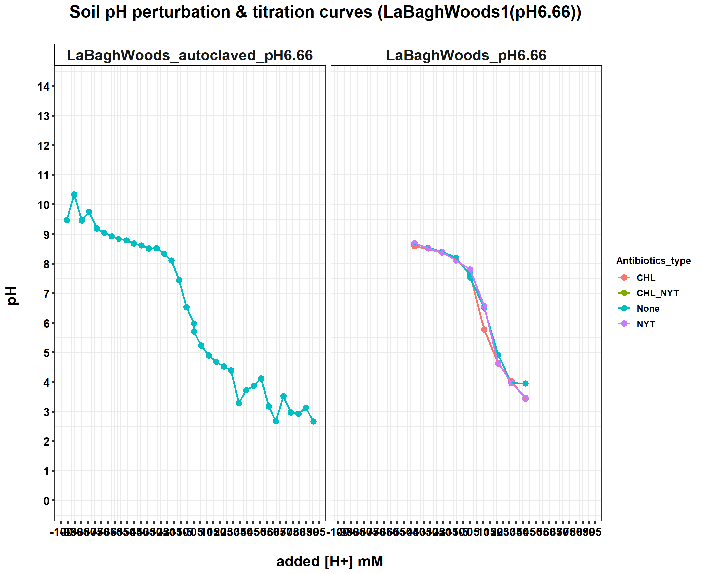
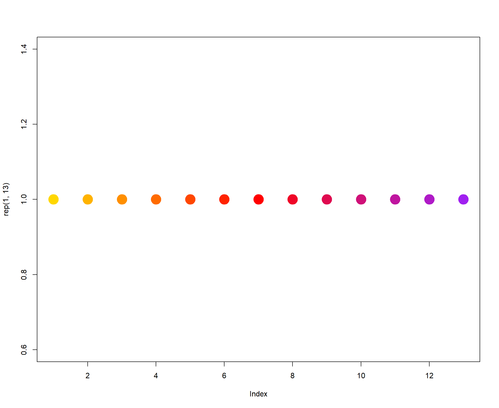
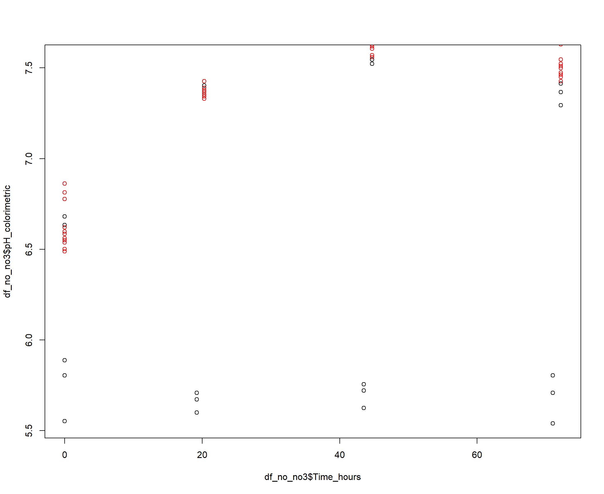
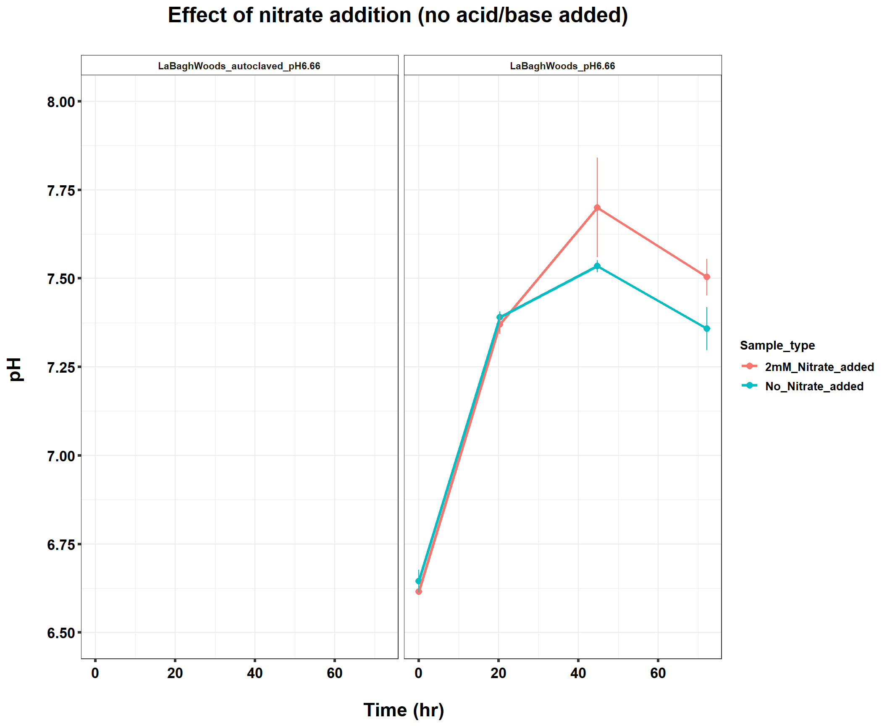
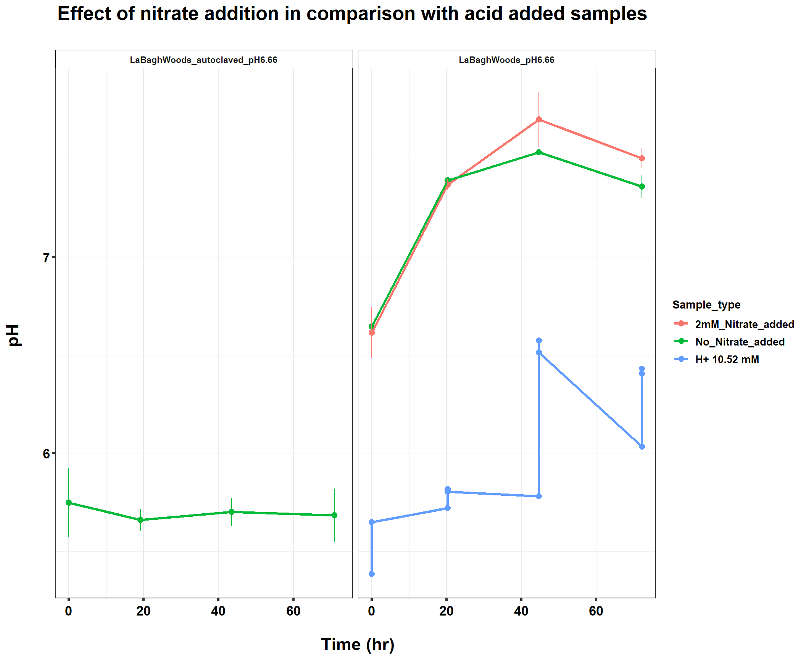
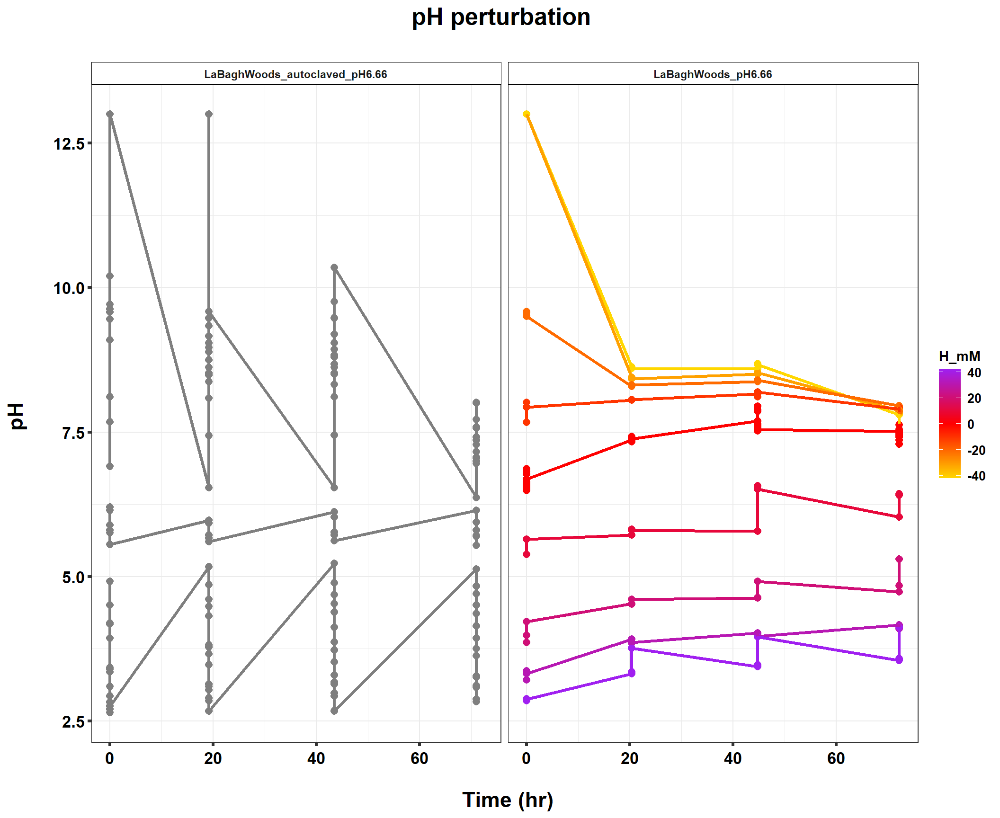

220422_pH_half_antibiotics_sterile
KiseokUchicago
2022-04-26
Last updated: 2022-06-08
Checks: 7 0
Knit directory: Denit_visualization_R/
This reproducible R Markdown analysis was created with workflowr (version 1.6.2). The Checks tab describes the reproducibility checks that were applied when the results were created. The Past versions tab lists the development history.
Great! Since the R Markdown file has been committed to the Git repository, you know the exact version of the code that produced these results.
Great job! The global environment was empty. Objects defined in the global environment can affect the analysis in your R Markdown file in unknown ways. For reproduciblity it’s best to always run the code in an empty environment.
The command set.seed(20210924) was run prior to running the code in the R Markdown file. Setting a seed ensures that any results that rely on randomness, e.g. subsampling or permutations, are reproducible.
Great job! Recording the operating system, R version, and package versions is critical for reproducibility.
Nice! There were no cached chunks for this analysis, so you can be confident that you successfully produced the results during this run.
Great job! Using relative paths to the files within your workflowr project makes it easier to run your code on other machines.
Great! You are using Git for version control. Tracking code development and connecting the code version to the results is critical for reproducibility.
The results in this page were generated with repository version 7905c93. See the Past versions tab to see a history of the changes made to the R Markdown and HTML files.
Note that you need to be careful to ensure that all relevant files for the analysis have been committed to Git prior to generating the results (you can use wflow_publish or wflow_git_commit). workflowr only checks the R Markdown file, but you know if there are other scripts or data files that it depends on. Below is the status of the Git repository when the results were generated:
Ignored files:
Ignored: .Rhistory
Ignored: .Rproj.user/
Untracked files:
Untracked: 211020_df_full_innate.xlsx
Untracked: 220421_Griess_antibiotics_experiment_to_kyle_remove_blanks.xlsx
Untracked: 220421_Griess_antibiotics_experiment_to_kyle_remove_blanks_add_pH.xlsx
Untracked: 220421_Griess_antibiotics_experiment_to_kyle_w_autoclaved.xlsx
Untracked: 220422_pH_Antibiotics_Sterile_experiment.xlsx
Untracked: 220519_Griess_antibiotics_experiment_to_kyle_w_autoclaved.xlsx
Untracked: 220521_pH_Antibiotics_dose_effect_experiment.xlsx
Untracked: data/120321_soil_buffering_capacity_Nichols-B.xlsx
Untracked: data/210911_TOC_sample_plate1.xlsx
Untracked: data/210922_Griess_sample_plate1-investigating.xlsx
Untracked: data/210922_Griess_sample_plate1.xlsx
Untracked: data/210927_TOC_sample_plate1_100ul.xlsx
Untracked: data/210927_TOC_sample_plate1_10ul.xlsx
Untracked: data/210928_Griess_sample_plate1.xlsx
Untracked: data/211005_Griess_sample_plate1.xlsx
Untracked: data/211007_Griess_blank_plate1.xlsx
Untracked: data/211007_Griess_blank_plate2.xlsx
Untracked: data/211008_Griess_blank_plate0.xlsx
Untracked: data/211008_Griess_blank_plate1.xlsx
Untracked: data/211017_Griess_plate0.xlsx
Untracked: data/211017_Griess_plate1.xlsx
Untracked: data/211017_Griess_plate2.xlsx
Untracked: data/211017_Griess_plate3.xlsx
Untracked: data/211017_Griess_plate4.xlsx
Untracked: data/211017_Griess_plate5.xlsx
Untracked: data/211017_Griess_plate6.xlsx
Untracked: data/211017_Griess_plate7.xlsx
Untracked: data/211017_Griess_plate8.xlsx
Untracked: data/211019_Griess_plate1.xlsx
Untracked: data/211020_Griess_plate0.xlsx
Untracked: data/211020_Griess_plate1.xlsx
Untracked: data/211020_df_full_innate.xlsx
Untracked: data/211025_Griess_no3_fit_plate0.xlsx
Untracked: data/211025_Griess_no3_fit_plate1.xlsx
Untracked: data/211025_Griess_plate0.xlsx
Untracked: data/211025_Griess_plate1.xlsx
Untracked: data/211028_Griess_plate1.xlsx
Untracked: data/211028_Griess_plate1_no3_fit.xlsx
Untracked: data/211028_Griess_plate2.xlsx
Untracked: data/211028_Griess_plate2_no3_fit.xlsx
Untracked: data/211028_Griess_plate3.xlsx
Untracked: data/211028_Griess_plate3_no3_fit.xlsx
Untracked: data/211028_Griess_plate4.xlsx
Untracked: data/211028_Griess_plate4_no3_fit.xlsx
Untracked: data/211028_time_table.xlsx
Untracked: data/211127_Griess_SUP1.xlsx
Untracked: data/211127_Griess_SUP11.xlsx
Untracked: data/211127_Griess_SUP3.xlsx
Untracked: data/211127_Griess_SUP5.xlsx
Untracked: data/211127_Griess_SUP7.xlsx
Untracked: data/211127_Griess_SUP9.xlsx
Untracked: data/211127_Griess_plate0.xlsx
Untracked: data/211127_time_table.xlsx
Untracked: data/211128_Ammonia_sample_plate10.xlsx
Untracked: data/211128_Ammonia_sample_plate11.xlsx
Untracked: data/211128_Griess_plate1.xlsx
Untracked: data/211128_Griess_plate10.xlsx
Untracked: data/211128_Griess_plate11.xlsx
Untracked: data/211128_Griess_plate2.xlsx
Untracked: data/211128_Griess_plate3.xlsx
Untracked: data/211128_Griess_plate4.xlsx
Untracked: data/211128_Griess_plate5.xlsx
Untracked: data/211128_Griess_plate6.xlsx
Untracked: data/211128_Griess_plate7.xlsx
Untracked: data/211128_Griess_plate8.xlsx
Untracked: data/211128_Griess_plate9.xlsx
Untracked: data/211128_time_table.xlsx
Untracked: data/211201_pH_colorimetric.xlsx
Untracked: data/211203_slurry_vs_water_drying_table.xlsx
Untracked: data/211203_slurry_vs_water_drying_time.xlsx
Untracked: data/211208_pH_colorimetric_T3.xlsx
Untracked: data/211208_pH_colorimetric_T4.xlsx
Untracked: data/211208_pH_colorimetric_T5.xlsx
Untracked: data/211208_pH_colorimetric_plate1.xlsx
Untracked: data/211208_pH_colorimetric_plate2.xlsx
Untracked: data/211208_pH_colorimetric_plate3.xlsx
Untracked: data/211208_time_table.xlsx
Untracked: data/211209_OD600_T1.xlsx
Untracked: data/211209_OD600_T2.xlsx
Untracked: data/211209_OD600_T3.xlsx
Untracked: data/211209_time_table.xlsx
Untracked: data/211210_pH_colorimetric_T0.xlsx
Untracked: data/211210_pH_colorimetric_T1.xlsx
Untracked: data/211210_pH_colorimetric_T2.xlsx
Untracked: data/211210_pH_colorimetric_T3.xlsx
Untracked: data/211210_time_table.xlsx
Untracked: data/211218_pH_colorimetric_t0.xlsx
Untracked: data/211218_pH_colorimetric_t1.xlsx
Untracked: data/211218_pH_colorimetric_t2.xlsx
Untracked: data/211218_pH_colorimetric_t3.xlsx
Untracked: data/211218_pH_colorimetric_t4.xlsx
Untracked: data/211218_time_table.xlsx
Untracked: data/211220_Griess_plate1.xlsx
Untracked: data/211220_Griess_plate10.xlsx
Untracked: data/211220_Griess_plate11.xlsx
Untracked: data/211220_Griess_plate2.xlsx
Untracked: data/211220_Griess_plate3.xlsx
Untracked: data/211220_Griess_plate4.xlsx
Untracked: data/211220_Griess_plate5.xlsx
Untracked: data/211220_Griess_plate6.xlsx
Untracked: data/211220_Griess_plate7.xlsx
Untracked: data/211220_Griess_plate8.xlsx
Untracked: data/211220_Griess_plate9.xlsx
Untracked: data/211220_time_table_AU.xlsx
Untracked: data/211220_time_table_BN.xlsx
Untracked: data/211224_TOC_sample_plate1.xlsx
Untracked: data/220103_Griess_T0.xlsx
Untracked: data/220103_Griess_T1.xlsx
Untracked: data/220103_Griess_T11.xlsx
Untracked: data/220103_Griess_T12.xlsx
Untracked: data/220103_Griess_T2.xlsx
Untracked: data/220103_Griess_T3.xlsx
Untracked: data/220103_Griess_T4.xlsx
Untracked: data/220103_Griess_T5.xlsx
Untracked: data/220103_Griess_T6.xlsx
Untracked: data/220103_Griess_T7.xlsx
Untracked: data/220103_Griess_T8.xlsx
Untracked: data/220103_Griess_T9.xlsx
Untracked: data/220103_time_table.xlsx
Untracked: data/220106_Ammonia_sample_plate1.xlsx
Untracked: data/220107-2_Ammonia_sample_plate1.xlsx
Untracked: data/220107-3_Ammonia_sample_plate1.xlsx
Untracked: data/220107-4_Ammonia_sample_plate1.xlsx
Untracked: data/220107-5_Ammonia_sample_plate1.xlsx
Untracked: data/220107-6_Ammonia_sample_plate1.xlsx
Untracked: data/220107-7_Ammonia_sample_plate1.xlsx
Untracked: data/220107-8_Ammonia_sample_plate1.xlsx
Untracked: data/220107-9_Ammonia_sample_plate1.xlsx
Untracked: data/220107_Ammonia_sample_plate1.xlsx
Untracked: data/220108_Ammonia_sample_plate1.xlsx
Untracked: data/220110_Ammonia_sample_plate1.xlsx
Untracked: data/220110_Ammonia_sample_plate2.xlsx
Untracked: data/220111_Ammonia_sample_T0.xlsx
Untracked: data/220111_Ammonia_sample_T1.xlsx
Untracked: data/220111_Ammonia_sample_T2.xlsx
Untracked: data/220111_Ammonia_sample_T3.xlsx
Untracked: data/220111_TOC_sample_plate1.xlsx
Untracked: data/220112_Ammonia_sample_T11.xlsx
Untracked: data/220112_Ammonia_sample_T12.xlsx
Untracked: data/220112_Ammonia_sample_T4.xlsx
Untracked: data/220112_Ammonia_sample_T5.xlsx
Untracked: data/220112_Ammonia_sample_T6.xlsx
Untracked: data/220112_Ammonia_sample_T7.xlsx
Untracked: data/220112_Ammonia_sample_T8.xlsx
Untracked: data/220112_Ammonia_sample_T9.xlsx
Untracked: data/220113_pH_colorimetric_T0.xlsx
Untracked: data/220113_pH_colorimetric_T12.xlsx
Untracked: data/220113_pH_colorimetric_T2.xlsx
Untracked: data/220113_pH_colorimetric_T3.xlsx
Untracked: data/220113_pH_colorimetric_T8.xlsx
Untracked: data/220125_pH_colorimetric_pH1_mu_opt0.099.xlsx
Untracked: data/220125_pH_colorimetric_pH1_using6.66.xlsx
Untracked: data/220125_pH_colorimetric_pH2_mu_opt0.099.xlsx
Untracked: data/220125_pH_colorimetric_pH2_using6.66.xlsx
Untracked: data/220125_time_table.xlsx
Untracked: data/220128_Ammonia_sample_plate1.xlsx
Untracked: data/220128_Ammonia_sample_plate2.xlsx
Untracked: data/220128_Ammonia_sample_plate3.xlsx
Untracked: data/220128_Ammonia_sample_plate4.xlsx
Untracked: data/220128_Ammonia_sample_plate5.xlsx
Untracked: data/220128_Ammonia_sample_plate6.xlsx
Untracked: data/220128_Griess_plate1.xlsx
Untracked: data/220128_Griess_plate2.xlsx
Untracked: data/220128_Griess_plate3.xlsx
Untracked: data/220128_Griess_plate4.xlsx
Untracked: data/220128_Griess_plate5.xlsx
Untracked: data/220128_Griess_plate6.xlsx
Untracked: data/220128_time_table.xlsx
Untracked: data/220131_Ammonia_sample_plate1.xlsx
Untracked: data/220131_Ammonia_sample_plate2.xlsx
Untracked: data/220131_Ammonia_sample_plate3.xlsx
Untracked: data/220131_Ammonia_sample_plate4.xlsx
Untracked: data/220131_Ammonia_sample_plate5.xlsx
Untracked: data/220131_Ammonia_sample_plate6.xlsx
Untracked: data/220131_Griess_plate1.xlsx
Untracked: data/220131_Griess_plate2.xlsx
Untracked: data/220131_Griess_plate3.xlsx
Untracked: data/220131_Griess_plate4.xlsx
Untracked: data/220131_Griess_plate5.xlsx
Untracked: data/220131_Griess_plate6.xlsx
Untracked: data/220131_pH_colorimetric_pH1_mu_opt_T0.xlsx
Untracked: data/220131_pH_colorimetric_pH2_mu_opt_T0.xlsx
Untracked: data/220131_time_table.xlsx
Untracked: data/220327_Griess_pastplate9.xlsx
Untracked: data/220327_Griess_plate1.xlsx
Untracked: data/220327_Griess_plate10.xlsx
Untracked: data/220327_Griess_plate11.xlsx
Untracked: data/220327_Griess_plate12.xlsx
Untracked: data/220327_Griess_plate13.xlsx
Untracked: data/220327_Griess_plate14.xlsx
Untracked: data/220327_Griess_plate15.xlsx
Untracked: data/220327_Griess_plate16.xlsx
Untracked: data/220327_Griess_plate2.xlsx
Untracked: data/220327_Griess_plate3.xlsx
Untracked: data/220327_Griess_plate4.xlsx
Untracked: data/220327_Griess_plate5.xlsx
Untracked: data/220327_Griess_plate6.xlsx
Untracked: data/220327_Griess_plate7.xlsx
Untracked: data/220327_Griess_plate8.xlsx
Untracked: data/220327_Griess_plate9.xlsx
Untracked: data/220327_time_table.xlsx
Untracked: data/220329_pH_colorimetric_pH1_mu_opt_T0.xlsx
Untracked: data/220329_pH_colorimetric_pH2_mu_opt_T0.xlsx
Untracked: data/220329_pH_colorimetric_pH3_mu_opt_T0.xlsx
Untracked: data/220329_pH_colorimetric_pH4_mu_opt_T0.xlsx
Untracked: data/220329_pH_colorimetric_pH6_mu_opt_T0.xlsx
Untracked: data/220329_pH_colorimetric_pH7_mu_opt_T0.xlsx
Untracked: data/220407_pH_colorimetric_pH3_half_mu_opt_T0.xlsx
Untracked: data/220407_pH_colorimetric_pH_base_treatment_mu_opt_T0.xlsx
Untracked: data/220407_pH_colorimetric_pH_standard_150ul_mu_opt_T0.xlsx
Untracked: data/220407_pH_colorimetric_pH_standard_300ul_mu_opt_T0.xlsx
Untracked: data/220407_pH_colorimetric_pH_standard_60ul_mu_opt_T0.xlsx
Untracked: data/220408_pH_colorimetric_pH_limit_mu_opt_water.xlsx
Untracked: data/220412_pH_colorimetric_pH_half_mu_opt_WW.xlsx
Untracked: data/220414_Ammonia_sample_plate0.xlsx
Untracked: data/220418_Ammonia_sample_plate0.xlsx
Untracked: data/220419_Ammonia_sample_plate0.xlsx
Untracked: data/220420-2_Ammonia_bcf.xlsx
Untracked: data/220420_Ammonia_sample_plate1.xlsx
Untracked: data/220420_Ammonia_sample_plate10.xlsx
Untracked: data/220420_Ammonia_sample_plate11.xlsx
Untracked: data/220420_Ammonia_sample_plate12.xlsx
Untracked: data/220420_Ammonia_sample_plate13.xlsx
Untracked: data/220420_Ammonia_sample_plate14.xlsx
Untracked: data/220420_Ammonia_sample_plate15.xlsx
Untracked: data/220420_Ammonia_sample_plate16.xlsx
Untracked: data/220420_Ammonia_sample_plate2.xlsx
Untracked: data/220420_Ammonia_sample_plate3.xlsx
Untracked: data/220420_Ammonia_sample_plate4.xlsx
Untracked: data/220420_Ammonia_sample_plate5.xlsx
Untracked: data/220420_Ammonia_sample_plate6.xlsx
Untracked: data/220420_Ammonia_sample_plate7.xlsx
Untracked: data/220420_Ammonia_sample_plate8.xlsx
Untracked: data/220420_Ammonia_sample_plate9.xlsx
Untracked: data/220421_Ammonia_df_a_bcf.xlsx
Untracked: data/220421_Ammonia_df_pH_range.xlsx
Untracked: data/220421_Ammonia_sample_plate1.xlsx
Untracked: data/220421_Ammonia_sample_plate10.xlsx
Untracked: data/220421_Ammonia_sample_plate11.xlsx
Untracked: data/220421_Ammonia_sample_plate2.xlsx
Untracked: data/220421_Ammonia_sample_plate3.xlsx
Untracked: data/220421_Ammonia_sample_plate4.xlsx
Untracked: data/220421_Ammonia_sample_plate5.xlsx
Untracked: data/220421_Ammonia_sample_plate6.xlsx
Untracked: data/220421_Ammonia_sample_plate7.xlsx
Untracked: data/220421_Ammonia_sample_plate8.xlsx
Untracked: data/220421_Ammonia_sample_plate9.xlsx
Untracked: data/220421_Ammonia_sterile.xlsx
Untracked: data/220421_Griess_antibiotics_experiment_to_kyle_remove_blanks.xlsx
Untracked: data/220421_Griess_antibiotics_experiment_to_kyle_remove_blanks_add_pH.xlsx
Untracked: data/220421_Griess_plate1.xlsx
Untracked: data/220421_Griess_plate10.xlsx
Untracked: data/220421_Griess_plate11.xlsx
Untracked: data/220421_Griess_plate2.xlsx
Untracked: data/220421_Griess_plate3.xlsx
Untracked: data/220421_Griess_plate4.xlsx
Untracked: data/220421_Griess_plate5.xlsx
Untracked: data/220421_Griess_plate6.xlsx
Untracked: data/220421_Griess_plate7.xlsx
Untracked: data/220421_Griess_plate8.xlsx
Untracked: data/220421_Griess_plate9.xlsx
Untracked: data/220421_nitrate_reduced_autoclaved_samples.xlsx
Untracked: data/220421_time_table.xlsx
Untracked: data/220422_pH_Antibiotics_Sterile_experiment.xlsx
Untracked: data/220422_pH_colorimetric_LBA_Sterile_T0_mu_opt_T0.xlsx
Untracked: data/220422_pH_colorimetric_LBA_Sterile_T4_mu_opt_T0.xlsx
Untracked: data/220422_pH_colorimetric_LBA_Sterile_T4_mu_opt_T4.xlsx
Untracked: data/220422_pH_colorimetric_LBA_Sterile_T7_mu_opt_T0.xlsx
Untracked: data/220422_pH_colorimetric_LBA_Sterile_T7_mu_opt_T7.xlsx
Untracked: data/220422_pH_colorimetric_LBA_Sterile_T9_mu_opt_T0.xlsx
Untracked: data/220422_pH_colorimetric_LBA_Sterile_T9_mu_opt_T9.xlsx
Untracked: data/220508_TOC_sample_plate1.xlsx
Untracked: data/220513_TOC_sample_plate1.xlsx
Untracked: data/220513_TOC_sample_plate2.xlsx
Untracked: data/220513_TOC_sample_plate3.xlsx
Untracked: data/220517_time_table.xlsx
Untracked: data/220519_Griess_antibiotics_dose_experiment_remove_blanks.xlsx
Untracked: data/220519_Griess_crerar7_extreme.xlsx
Untracked: data/220519_Griess_plate1.xlsx
Untracked: data/220519_Griess_plate10.xlsx
Untracked: data/220519_Griess_plate11.xlsx
Untracked: data/220519_Griess_plate2.xlsx
Untracked: data/220519_Griess_plate3.xlsx
Untracked: data/220519_Griess_plate4.xlsx
Untracked: data/220519_Griess_plate5.xlsx
Untracked: data/220519_Griess_plate6.xlsx
Untracked: data/220519_Griess_plate7.xlsx
Untracked: data/220519_Griess_plate8.xlsx
Untracked: data/220519_Griess_plate9.xlsx
Untracked: data/220519_time_table.xlsx
Untracked: data/220520_TOC_sample_plate1.xlsx
Untracked: data/220520_TOC_sample_plate2.xlsx
Untracked: data/220520_TOC_sample_plate3.xlsx
Untracked: data/220521_pH_Antibiotics_dose_effect_experiment.xlsx
Untracked: data/220521_pH_colorimetric_Barneveld2_Sterile_T0_mu_opt_T0.xlsx
Untracked: data/220521_pH_colorimetric_Barneveld2_Sterile_T10_mu_opt_T0.xlsx
Untracked: data/220521_pH_colorimetric_Barneveld2_Sterile_T7_mu_opt_T0.xlsx
Untracked: data/220526_TOC_sample_plate1.xlsx
Untracked: data/220527_TOC_sample_plate1.xlsx
Untracked: data/220601_TOC_sample_plate1.xlsx
Untracked: data/220602-2_TOC_sample_plate1.xlsx
Untracked: data/220602-2_control_OD600.xlsx
Untracked: data/220602-3_TOC_sample_plate1.xlsx
Untracked: data/220602-3_control_OD600.xlsx
Untracked: data/220602_TOC_sample_plate1.xlsx
Untracked: data/220603_100ul_OD600.xlsx
Untracked: data/220603_TOC_sample_plate1.xlsx
Untracked: data/220603_TOC_sample_plate2.xlsx
Untracked: data/220606_TOC_sample_plate1.xlsx
Untracked: data/220606_TOC_sample_plate2.xlsx
Untracked: data/ForKiseok_from_Dr_Cuhel.xlsx
Untracked: data/ForKiseok_from_Dr_Cuhel_format_edited.xlsx
Untracked: data/OD434_OD585_C_WB_T5_220329.xlsx
Untracked: data/OD434_OD585_WW_C_T0_220329.xlsx
Untracked: data/OD434_OD585_pH3_half_area_220407.xlsx
Untracked: data/OD434_OD585_pH_base_treated_T0_220407.xlsx
Untracked: data/OD434_OD585_pH_half_150ul_220412.xlsx
Untracked: data/SPNa_86437_021122_edit.xlsx
Untracked: data/SPNa_86437_021122_edit2.xlsx
Untracked: data/TOC_TN_measurement_2_labs_211014.xlsx
Untracked: data/dry_weight_curve(9.5.21).xlsx
Untracked: data/pH_data(11.17.21)-Midway_etc.xlsx
Untracked: data/pH_data(12.6.21)-Midway_incubation_endpoint.xlsx
Untracked: data/pH_data(9.14.21).xlsx
Untracked: data/pH_data(9.28.21).xlsx
Untracked: data/pH_standard_150ul_220407.xlsx
Untracked: data/pH_standard_300ul_220407.xlsx
Untracked: data/pH_standard_60ul_220407.xlsx
Untracked: data/~$220513_TOC_sample_plate1.xlsx
Untracked: data/~$SPNa_86437_021122_edit.xlsx
Untracked: past_figures/
Note that any generated files, e.g. HTML, png, CSS, etc., are not included in this status report because it is ok for generated content to have uncommitted changes.
These are the previous versions of the repository in which changes were made to the R Markdown (analysis/220422_pH_half_antibiotics_sterile.Rmd) and HTML (docs/220422_pH_half_antibiotics_sterile.html) files. If you’ve configured a remote Git repository (see ?wflow_git_remote), click on the hyperlinks in the table below to view the files as they were in that past version.
| File | Version | Author | Date | Message |
|---|---|---|---|---|
| Rmd | 7905c93 | KiseokUchicago | 2022-06-08 | wflow_publish("analysis/*.Rmd") |
Time series analysis - pH analysis of antibiotic-treated / autoclaved soils
Researcher: Kiseok Lee
Experiment Date: 4/14/22 - 4/18/22 (5 days)
Analysis Date: 4/26/21 Lab: Seppe Kuehn
1. 20ul of 0.5M HCl or 0.05M NaOH was incrementally added
df_pH1 <- openxlsx::read.xlsx("data/220422_pH_colorimetric_LBA_Sterile_T0_mu_opt_T0.xlsx")
df_pH2 <- openxlsx::read.xlsx("data/220422_pH_colorimetric_LBA_Sterile_T4_mu_opt_T0.xlsx")
df_pH3 <- openxlsx::read.xlsx("data/220422_pH_colorimetric_LBA_Sterile_T7_mu_opt_T0.xlsx")
df_pH4 <- openxlsx::read.xlsx("data/220422_pH_colorimetric_LBA_Sterile_T9_mu_opt_T0.xlsx")
# I incorporated pH meter into pH1 and
# pH3... so... I'll put pH_meter column
# for other df.
df_pH2$pH_meter <- NA
df_pH4$pH_meter <- NA
colnames(df_pH1) [1] "Well" "Nitrite_input" "Nitrate_input" "Ammonium_input"
[5] "Soil" "Sample_type" "Titration_type" "Antibiotics_type"
[9] "Unit" "Concentration_M" "Added_ul" "Time_point"
[13] "pH_colorimetric" "pH_meter" colnames(df_pH2) [1] "Well" "Nitrite_input" "Nitrate_input" "Ammonium_input"
[5] "Soil" "Sample_type" "Titration_type" "Antibiotics_type"
[9] "Unit" "Concentration_M" "Added_ul" "Time_point"
[13] "pH_colorimetric" "pH_meter" colnames(df_pH3) [1] "Well" "Nitrite_input" "Nitrate_input" "Ammonium_input"
[5] "Soil" "Sample_type" "Titration_type" "Antibiotics_type"
[9] "Unit" "Concentration_M" "Added_ul" "Time_point"
[13] "pH_colorimetric" "pH_meter" colnames(df_pH4) [1] "Well" "Nitrite_input" "Nitrate_input" "Ammonium_input"
[5] "Soil" "Sample_type" "Titration_type" "Antibiotics_type"
[9] "Unit" "Concentration_M" "Added_ul" "Time_point"
[13] "pH_colorimetric" "pH_meter" df_pH1_alt <- openxlsx::read.xlsx("data/220422_pH_colorimetric_LBA_Sterile_T0_mu_opt_T0.xlsx")
df_pH2_alt <- openxlsx::read.xlsx("data/220422_pH_colorimetric_LBA_Sterile_T4_mu_opt_T4.xlsx")
df_pH3_alt <- openxlsx::read.xlsx("data/220422_pH_colorimetric_LBA_Sterile_T7_mu_opt_T7.xlsx")
df_pH4_alt <- openxlsx::read.xlsx("data/220422_pH_colorimetric_LBA_Sterile_T9_mu_opt_T9.xlsx")
colnames(df_pH1) [1] "Well" "Nitrite_input" "Nitrate_input" "Ammonium_input"
[5] "Soil" "Sample_type" "Titration_type" "Antibiotics_type"
[9] "Unit" "Concentration_M" "Added_ul" "Time_point"
[13] "pH_colorimetric" "pH_meter" dim(df_pH1)[1] 96 14dim(df_pH2)[1] 96 14dim(df_pH3)[1] 96 14dim(df_pH4)[1] 96 14dim(df_pH1_alt)[1] 96 14dim(df_pH2_alt)[1] 96 13dim(df_pH3_alt)[1] 96 13dim(df_pH4_alt)[1] 96 13# Filter defect I ruined T10....
df_pH1 %<>%
filter(!(Well %in% c("A01"))) # Filter defect
df_pH2 %<>%
filter(!(Well %in% c("H01", "D05"))) # little sample
df_pH3 %<>%
filter(!(Well %in% c("A04", "A05", "E04",
"H06", "G01"))) # little sample
df_pH4 %<>%
filter(!(Well %in% c("H02", "H05", "F03"))) # Less than 90ul of sample
df_pH1_alt %<>%
filter(!(Well %in% c("A01"))) # Filter defect
df_pH2_alt %<>%
filter(!(Well %in% c("H01", "D05"))) # little sample
df_pH3_alt %<>%
filter(!(Well %in% c("A04", "A05", "E04",
"H06", "G01"))) # little sample
df_pH4_alt %<>%
filter(!(Well %in% c("H02", "H05", "F03"))) # Less than 90ul of sample
df_time <- openxlsx::read.xlsx("data/220421_time_table.xlsx")
df_time$Time_hours <- round(df_time$Time_hours,
1)
df_time$Time_days <- round(df_time$Time_days,
2)
df_pH_T <- rbind(df_pH1, df_pH2, df_pH3,
df_pH4)
df_pH_T %<>%
left_join(df_time, by = c(Time_point = "Time_point"))
dim(df_pH_T) # 575[1] 373 18df_pH_T_alt <- rbind(df_pH1_alt, df_pH2_alt,
df_pH3_alt, df_pH4_alt)Error in rbind(deparse.level, ...): numbers of columns of arguments do not matchdf_pH_T_alt %<>%
left_join(df_time, by = c(Time_point = "Time_point"))Error in left_join(., df_time, by = c(Time_point = "Time_point")): object 'df_pH_T_alt' not founddim(df_pH_T_alt) # 575Error in eval(expr, envir, enclos): object 'df_pH_T_alt' not found# remove NA # don't remove NA this time
# dim(df_pH_T) # 575
# df_pH_T[is.na(df_pH_T)] df_na <-
# df_pH_T[rowSums(is.na(df_pH_T)) > 0,]
# # df_pH_T <- na.omit(df_pH_T) df_pH_T
# <- df_pH_T[rowSums(is.na(df_pH_T)) ==
# 0,] dim(df_pH_T) # 373
# Change the soil names to include pH
# df_pH_T$Soil <-
# str_replace(df_pH_T$Soil,'NicholsC','NicholsC_pH7')
# df_pH_T$Soil <-
# str_replace(df_pH_T$Soil,'Allandale','Allandale_pH4')
# df_pH_T$Soil <- factor(df_pH_T$Soil,
# levels = c('NicholsC_pH7',
# 'Allandale_pH4'))
# mols and molarity unit conversion
# test
df_pH <- df_pH_T %>%
filter(Titration_type %in% c("NaOH",
"HCl", "No_Nitrate"))
dim(df_pH) # 304[1] 304 18df_pH$Titration_type %>%
unique()[1] "HCl" "NaOH" "No_Nitrate"Added_Volume <- 1.7 # ml
Soil_mg <- 0.85
moisture_percent_1 = 23.96 # LBA - LaBaghWoods for antibiotics
Added_Volume + Soil_mg * (moisture_percent_1/100)[1] 1.90366moisture_percent_2 = 8.12 # Sterile - LaBaghWoods that has been autoclaved 5 times.
Added_Volume + Soil_mg * (moisture_percent_2/100)[1] 1.76902# moisture_percent_3 = 9.0 # Crerar7
# Added_Volume +
# Soil_mg*(moisture_percent_3/100)
df_pH$Added_ul <- ifelse(df_pH$Titration_type ==
"NaOH", -1 * df_pH$Added_ul, df_pH$Added_ul) # HCl is +, NaOH is -
df_pH %<>%
mutate(H_mol = Concentration_M * Added_ul *
10^(-6)) # Calculate H mol
df_pH$Volume <- ifelse(df_pH$Soil == "LaBaghWoods_pH6.66",
Added_Volume + Soil_mg * (moisture_percent_1/100),
ifelse(df_pH$Soil == "LaBaghWoods_autoclaved_pH6.66",
Added_Volume + Soil_mg * (moisture_percent_2/100),
0))
# ifelse(df_pH$Soil ==
# 'Crerar1_pH8.05', Added_Volume +
# Soil_mg*(moisture_percent_3/100),
# 0))) # Calc total volume
df_pH %<>%
mutate(H_Molarity = H_mol/(Volume * 10^(-3)))
df_pH %<>%
mutate(H_mM = H_Molarity * 1000)
# openxlsx::write.xlsx(df_pH,
# 'df_pH.xlsx')
# how many levels of H_mM?
df_pH %>%
filter(Soil == "LaBaghWoods_pH6.66") %>%
select(H_mM) %>%
unique() %>%
arrange(H_mM) H_mM
1 -42.02431
2 -31.51823
3 -21.01216
4 -10.50608
5 0.00000
6 10.50608
7 21.01216
8 31.51823
9 42.02431df_pH %>%
filter(Soil == "LaBaghWoods_autoclaved_pH6.66") %>%
select(H_mM) %>%
unique() %>%
arrange(H_mM) H_mM
1 -96.098405
2 -90.445557
3 -84.792710
4 -79.139863
5 -73.487015
6 -67.834168
7 -62.181321
8 -56.528473
9 -50.875626
10 -45.222779
11 -39.569931
12 -33.917084
13 -28.264237
14 -22.611389
15 -16.958542
16 -11.305695
17 -5.652847
18 0.000000
19 5.652847
20 11.305695
21 16.958542
22 22.611389
23 28.264237
24 33.917084
25 39.569931
26 45.222779
27 50.875626
28 56.528473
29 62.181321
30 67.834168
31 73.487015
32 79.139863
33 84.792710
34 90.445557# df_pH %>% filter(Soil ==
# 'Crerar1_pH8.05')%>% select(H_mM) %>%
# unique() %>% arrange()
colnames(df_pH) [1] "Well" "Nitrite_input" "Nitrate_input" "Ammonium_input"
[5] "Soil" "Sample_type" "Titration_type" "Antibiotics_type"
[9] "Unit" "Concentration_M" "Added_ul" "Time_point"
[13] "pH_colorimetric" "pH_meter" "Date" "Time_minutes"
[17] "Time_hours" "Time_days" "H_mol" "Volume"
[21] "H_Molarity" "H_mM" # average the pH 220329 only used 1
# replicate. So, no need to average.
# df_pH_ave <- df_pH %>%
# group_by(Nitrite_input,
# Nitrate_input, Soil, Titration_type,
# Concentration_M, Added_ul,
# Sample_type, H_mol, H_Molarity, H_mM,
# Time_point, Time_minutes, Time_hours,
# Time_days) %>% summarise(Ave_pH =
# mean(pH_colorimetric), Std_pH =
# sd(pH_colorimetric)) %>% ungroup()
# colnames(df_pH_ave)Export pH for ammonium analysis
# where is autoclaved? df_pH %>%
# filter(Soil ==
# 'LaBaghWoods_autoclaved_pH6.66')
# remove blanks
df_pH_export <- df_pH
# use only T7
df_pH_export %<>%
filter(Time_point %in% c("LBA_T7", "Sterile_T7")) %>%
rename(pH = pH_colorimetric) %>%
arrange(H_mM, Soil, Titration_type, Antibiotics_type)
# average the replicates
df_pH_export2 <- df_pH_export %>%
group_by(Soil, Titration_type, Unit,
H_mM, Antibiotics_type) %>%
summarise(pH = mean(pH)) %>%
ungroup() %>%
arrange(Antibiotics_type, H_mM)
df_pH_export2$pH <- as.numeric(df_pH_export2$pH)
ggplot(df_pH_export2, aes(x = H_mM, y = pH,
color = Antibiotics_type, group = Antibiotics_type)) +
geom_point(size = 3, shape = 16, alpha = 1) +
# geom_errorbar(aes(ymin=Ave_pH -
# Std_pH, ymax=Ave_pH + Std_pH),
# width=.05)+
geom_line(size = 1) + # scale_color_brewer(palette='Set1') + geom_line(size
geom_line(size = 1) + # scale_color_brewer(palette='Set1') + =
geom_line(size = 1) + # scale_color_brewer(palette='Set1') + 1)
geom_line(size = 1) + # scale_color_brewer(palette='Set1') + +
geom_line(size = 1) + # scale_color_brewer(palette='Set1') + #
geom_line(size = 1) + # scale_color_brewer(palette='Set1') + scale_color_brewer(palette='Set1')
geom_line(size = 1) + # scale_color_brewer(palette='Set1') + +
ylab("pH \n") + xlab("\n added [H+] mM") +
scale_x_continuous(breaks = seq(-100,
100, 5)) + scale_y_continuous(breaks = seq(0,
14, 1), limits = c(0, 14)) + ggtitle("Soil pH perturbation & titration curves (LaBaghWoods1(pH6.66)) \n") +
# label geom_text(aes(label =
# pH_colorimetric), size = 3, vjust
# = -1.5, family='serif',
# show.legend = FALSE)+
mytheme_2d + facet_grid(. ~ Soil) + theme(strip.background = element_rect(colour = "black",
fill = "white", size = 0.1)) + theme(strip.text.x = element_text(size = 17))
write.xlsx(df_pH_export2, "220422_pH_Antibiotics_Sterile_experiment.xlsx")To Kyle
# Let's export pH levels for Kyle
# (220426)
dim(df_pH)[1] 304 22# removing timepoint T8
df_pH_kyle <- df_pH %>%
filter(Soil == "LaBaghWoods_pH6.66")
df_pH_kyle$Time_point %>%
unique()[1] "LBA_T0" "LBA_T4" "LBA_T7" "LBA_T9"df_pH_kyle2 <- df_pH_kyle %>%
filter(Titration_type %in% c("NaOH",
"HCl"))
# only look at T7
df_pH_kyle2 %<>%
filter(Time_point == "LBA_T7") %>%
rename(pH = pH_colorimetric) %>%
arrange(H_mM, Antibiotics_type)
dim(df_pH_kyle2) # 33[1] 33 22df_pH_kyle2 %>%
arrange(H_mM, Antibiotics_type) Well Nitrite_input Nitrate_input Ammonium_input Soil
1 B04 0 2 0 LaBaghWoods_pH6.66
2 F03 0 2 0 LaBaghWoods_pH6.66
3 C04 0 2 0 LaBaghWoods_pH6.66
4 E03 0 2 0 LaBaghWoods_pH6.66
5 D03 0 2 0 LaBaghWoods_pH6.66
6 B03 0 2 0 LaBaghWoods_pH6.66
7 F02 0 2 0 LaBaghWoods_pH6.66
8 C03 0 2 0 LaBaghWoods_pH6.66
9 A03 0 2 0 LaBaghWoods_pH6.66
10 E02 0 2 0 LaBaghWoods_pH6.66
11 D02 0 2 0 LaBaghWoods_pH6.66
12 A06 0 2 0 LaBaghWoods_pH6.66
13 B05 0 2 0 LaBaghWoods_pH6.66
14 E05 0 2 0 LaBaghWoods_pH6.66
15 F04 0 2 0 LaBaghWoods_pH6.66
16 E06 0 2 0 LaBaghWoods_pH6.66
17 F05 0 2 0 LaBaghWoods_pH6.66
18 F06 0 2 0 LaBaghWoods_pH6.66
19 C05 0 2 0 LaBaghWoods_pH6.66
20 D04 0 2 0 LaBaghWoods_pH6.66
21 D05 0 2 0 LaBaghWoods_pH6.66
22 A01 0 2 0 LaBaghWoods_pH6.66
23 C06 0 2 0 LaBaghWoods_pH6.66
24 B06 0 2 0 LaBaghWoods_pH6.66
25 B01 0 2 0 LaBaghWoods_pH6.66
26 D06 0 2 0 LaBaghWoods_pH6.66
27 C01 0 2 0 LaBaghWoods_pH6.66
28 A02 0 2 0 LaBaghWoods_pH6.66
29 E01 0 2 0 LaBaghWoods_pH6.66
30 D01 0 2 0 LaBaghWoods_pH6.66
31 B02 0 2 0 LaBaghWoods_pH6.66
32 F01 0 2 0 LaBaghWoods_pH6.66
33 C02 0 2 0 LaBaghWoods_pH6.66
Sample_type Titration_type Antibiotics_type Unit Concentration_M Added_ul
1 Slurry NaOH CHL 8 4 -20
2 Slurry NaOH None 8 4 -20
3 Slurry NaOH NYT 8 4 -20
4 Slurry NaOH None 6 3 -20
5 Slurry NaOH NYT 6 3 -20
6 Slurry NaOH CHL 4 2 -20
7 Slurry NaOH None 4 2 -20
8 Slurry NaOH NYT 4 2 -20
9 Slurry NaOH CHL 2 1 -20
10 Slurry NaOH None 2 1 -20
11 Slurry NaOH NYT 2 1 -20
12 Slurry HCl CHL 0 0 20
13 Slurry HCl CHL 0 0 20
14 Slurry HCl CHL_NYT 0 0 20
15 Slurry HCl CHL_NYT 0 0 20
16 Slurry HCl None 0 0 20
17 Slurry HCl None 0 0 20
18 Slurry HCl None 0 0 20
19 Slurry HCl NYT 0 0 20
20 Slurry HCl NYT 0 0 20
21 Slurry HCl NYT 0 0 20
22 Slurry HCl CHL 2 1 20
23 Slurry HCl None 2 1 20
24 Slurry HCl NYT 2 1 20
25 Slurry HCl CHL 4 2 20
26 Slurry HCl None 4 2 20
27 Slurry HCl NYT 4 2 20
28 Slurry HCl CHL 6 3 20
29 Slurry HCl None 6 3 20
30 Slurry HCl NYT 6 3 20
31 Slurry HCl CHL 8 4 20
32 Slurry HCl None 8 4 20
33 Slurry HCl NYT 8 4 20
Time_point pH pH_meter Date Time_minutes Time_hours Time_days
1 LBA_T7 8.591592 NA 44667.49 2680 44.7 1.86
2 LBA_T7 8.663664 NA 44667.49 2680 44.7 1.86
3 LBA_T7 8.687688 NA 44667.49 2680 44.7 1.86
4 LBA_T7 8.531532 9.16 44667.49 2680 44.7 1.86
5 LBA_T7 8.507508 NA 44667.49 2680 44.7 1.86
6 LBA_T7 8.375375 NA 44667.49 2680 44.7 1.86
7 LBA_T7 8.399399 8.68 44667.49 2680 44.7 1.86
8 LBA_T7 8.387387 9.12 44667.49 2680 44.7 1.86
9 LBA_T7 8.159159 8.64 44667.49 2680 44.7 1.86
10 LBA_T7 8.195195 8.44 44667.49 2680 44.7 1.86
11 LBA_T7 8.111111 8.57 44667.49 2680 44.7 1.86
12 LBA_T7 7.690691 7.56 44667.49 2680 44.7 1.86
13 LBA_T7 7.558559 NA 44667.49 2680 44.7 1.86
14 LBA_T7 7.570571 NA 44667.49 2680 44.7 1.86
15 LBA_T7 7.882883 NA 44667.49 2680 44.7 1.86
16 LBA_T7 7.618619 7.75 44667.49 2680 44.7 1.86
17 LBA_T7 7.630631 7.76 44667.49 2680 44.7 1.86
18 LBA_T7 7.642643 NA 44667.49 2680 44.7 1.86
19 LBA_T7 7.942943 NA 44667.49 2680 44.7 1.86
20 LBA_T7 7.858859 NA 44667.49 2680 44.7 1.86
21 LBA_T7 7.606607 NA 44667.49 2680 44.7 1.86
22 LBA_T7 5.780781 NA 44667.49 2680 44.7 1.86
23 LBA_T7 6.513514 6.92 44667.49 2680 44.7 1.86
24 LBA_T7 6.573574 6.24 44667.49 2680 44.7 1.86
25 LBA_T7 4.627628 4.44 44667.49 2680 44.7 1.86
26 LBA_T7 4.915916 NA 44667.49 2680 44.7 1.86
27 LBA_T7 4.639640 4.62 44667.49 2680 44.7 1.86
28 LBA_T7 4.027027 4.34 44667.49 2680 44.7 1.86
29 LBA_T7 3.966967 4.26 44667.49 2680 44.7 1.86
30 LBA_T7 3.978979 NA 44667.49 2680 44.7 1.86
31 LBA_T7 3.438438 3.60 44667.49 2680 44.7 1.86
32 LBA_T7 3.954955 4.19 44667.49 2680 44.7 1.86
33 LBA_T7 3.474474 3.57 44667.49 2680 44.7 1.86
H_mol Volume H_Molarity H_mM
1 -8e-05 1.90366 -0.04202431 -42.02431
2 -8e-05 1.90366 -0.04202431 -42.02431
3 -8e-05 1.90366 -0.04202431 -42.02431
4 -6e-05 1.90366 -0.03151823 -31.51823
5 -6e-05 1.90366 -0.03151823 -31.51823
6 -4e-05 1.90366 -0.02101216 -21.01216
7 -4e-05 1.90366 -0.02101216 -21.01216
8 -4e-05 1.90366 -0.02101216 -21.01216
9 -2e-05 1.90366 -0.01050608 -10.50608
10 -2e-05 1.90366 -0.01050608 -10.50608
11 -2e-05 1.90366 -0.01050608 -10.50608
12 0e+00 1.90366 0.00000000 0.00000
13 0e+00 1.90366 0.00000000 0.00000
14 0e+00 1.90366 0.00000000 0.00000
15 0e+00 1.90366 0.00000000 0.00000
16 0e+00 1.90366 0.00000000 0.00000
17 0e+00 1.90366 0.00000000 0.00000
18 0e+00 1.90366 0.00000000 0.00000
19 0e+00 1.90366 0.00000000 0.00000
20 0e+00 1.90366 0.00000000 0.00000
21 0e+00 1.90366 0.00000000 0.00000
22 2e-05 1.90366 0.01050608 10.50608
23 2e-05 1.90366 0.01050608 10.50608
24 2e-05 1.90366 0.01050608 10.50608
25 4e-05 1.90366 0.02101216 21.01216
26 4e-05 1.90366 0.02101216 21.01216
27 4e-05 1.90366 0.02101216 21.01216
28 6e-05 1.90366 0.03151823 31.51823
29 6e-05 1.90366 0.03151823 31.51823
30 6e-05 1.90366 0.03151823 31.51823
31 8e-05 1.90366 0.04202431 42.02431
32 8e-05 1.90366 0.04202431 42.02431
33 8e-05 1.90366 0.04202431 42.02431# average the replicates
df_pH_kyle3 <- df_pH_kyle2 %>%
group_by(Titration_type, Unit, Antibiotics_type) %>%
summarise(pH = mean(pH)) %>%
ungroup()
df_pH_kyle3$pH <- as.numeric(df_pH_kyle3$pH)
ggplot(df_pH_kyle3, aes(x = H_mM, y = pH,
color = Antibiotics_type, group = Antibiotics_type)) +
geom_point(size = 3, shape = 16, alpha = 1) +
# geom_errorbar(aes(ymin=Ave_pH -
# Std_pH, ymax=Ave_pH + Std_pH),
# width=.05)+
geom_line(size = 1) + # scale_color_brewer(palette='Set1') + geom_line(size
geom_line(size = 1) + # scale_color_brewer(palette='Set1') + =
geom_line(size = 1) + # scale_color_brewer(palette='Set1') + 1)
geom_line(size = 1) + # scale_color_brewer(palette='Set1') + +
geom_line(size = 1) + # scale_color_brewer(palette='Set1') + #
geom_line(size = 1) + # scale_color_brewer(palette='Set1') + scale_color_brewer(palette='Set1')
geom_line(size = 1) + # scale_color_brewer(palette='Set1') + +
ylab("pH \n") + xlab("\n added [H+] mM") +
scale_x_continuous(breaks = seq(-100,
100, 5)) + scale_y_continuous(breaks = seq(0,
14, 1), limits = c(0, 14)) + ggtitle("Soil pH perturbation & titration curves (LaBaghWoods1(pH6.66)) \n") +
# label geom_text(aes(label =
# pH_colorimetric), size = 3, vjust
# = -1.5, family='serif',
# show.legend = FALSE)+
mytheme_2dError in FUN(X[[i]], ...): object 'H_mM' not found
# add NaOH Unit 6
df_pH_kyle3 %>%
filter(Unit == 6, Titration_type == "NaOH")# A tibble: 2 x 4
Titration_type Unit Antibiotics_type pH
<chr> <dbl> <chr> <dbl>
1 NaOH 6 None 8.53
2 NaOH 6 NYT 8.51pH_mean = mean(df_pH_kyle3 %>%
filter(Unit == 6, Titration_type == "NaOH") %>%
select(pH) %>%
unlist())
df_pH_kyle3 <- rbind(df_pH_kyle3, c("NaOH",
as.numeric(6), "CHL", as.numeric(pH_mean)))
df_pH_kyle3$pH <- as.numeric(df_pH_kyle3$pH)
df_pH_kyle3$pH <- round(df_pH_kyle3$pH, 3)
# df_kyle2 is from
df_kyle2 <- read.xlsx("data/220421_Griess_antibiotics_experiment_to_kyle_remove_blanks.xlsx")
# incompatible?
df_pH_kyle3$Unit <- as.numeric(df_pH_kyle3$Unit)
df_kyle2$Unit [1] 2 6 2 6 0 0 4 8 4 8 0 2 4 8 4 8 0 2 6 2 6 0 0 4 6 2 6 0 0 0 8 4 8 0 0 0 2
[38] 6 2 6 0 0 4 8 4 8 0 2 4 8 4 8 0 2 6 0 0 4 6 2 6 0 0 0 8 4 8 0 0 0 2 6 2 6
[75] 0 0 4 8 4 8 0 2 4 8 4 8 0 2 6 2 6 0 0 4 6 2 6 0 0 0 8 4 8 0 0 0 2 6 2 6 0
[112] 0 4 8 4 8 0 2 4 8 4 8 0 2 6 2 6 0 0 4 6 2 6 0 0 0 8 4 8 0 0 0 2 6 2 6 0 0
[149] 4 8 0 2 4 8 8 0 2 6 2 6 0 0 4 6 2 6 0 0 0 8 4 8 0 0 0 2 6 2 6 0 0 4 8 4 8
[186] 0 2 4 8 4 8 0 2 6 2 6 0 0 4 6 2 6 0 0 0 8 4 8 0 0 0 2 6 2 6 0 0 4 8 4 8 0
[223] 2 4 8 4 8 0 2 6 2 6 0 0 4 6 2 6 0 0 0 8 4 8 0 0 0 6 2 6 0 0 4 8 4 8 0 2 4
[260] 8 4 8 0 2 6 2 6 0 0 4 6 2 6 0 0 0 8 4 8 0 0 0 2 6 2 6 0 0 4 8 4 8 0 2 4 8
[297] 4 8 0 2 6 2 6 0 0 4 6 2 6 0 0 0 8 4 8 0 0 0 2 6 2 6 0 0 4 8 4 8 0 2 4 8 4
[334] 8 0 2 6 2 6 0 0 4 6 2 6 0 0 0 8 4 8 0 0 0df_kyle3 <- df_kyle2 %>%
left_join(df_pH_kyle3, by = c(Titration_type = "Titration_type",
Unit = "Unit", Antibiotics_type = "Antibiotics_type"))
write.xlsx(df_kyle3, "220421_Griess_antibiotics_experiment_to_kyle_remove_blanks_add_pH.xlsx")This is for alt
df_pH_alt <- df_pH_T_alt %>%
filter(Titration_type %in% c("NaOH",
"HCl", "No_Nitrate"))Error in filter(., Titration_type %in% c("NaOH", "HCl", "No_Nitrate")): object 'df_pH_T_alt' not founddim(df_pH_alt_alt) # 304Error in eval(expr, envir, enclos): object 'df_pH_alt_alt' not founddf_pH_alt$Titration_type %>%
unique()Error in unique(.): object 'df_pH_alt' not foundAdded_Volume <- 1.7 # ml
Soil_mg <- 0.85
moisture_percent_1 = 23.96 # LBA - LaBaghWoods for antibiotics
Added_Volume + Soil_mg * (moisture_percent_1/100)[1] 1.90366moisture_percent_2 = 8.12 # Sterile - LaBaghWoods that has been autoclaved 5 times.
Added_Volume + Soil_mg * (moisture_percent_2/100)[1] 1.76902# moisture_percent_3 = 9.0 # Crerar7
# Added_Volume +
# Soil_mg*(moisture_percent_3/100)
df_pH_alt$Added_ul <- ifelse(df_pH_alt$Titration_type ==
"NaOH", -1 * df_pH_alt$Added_ul, df_pH_alt$Added_ul) # HCl is +, NaOH is -Error in ifelse(df_pH_alt$Titration_type == "NaOH", -1 * df_pH_alt$Added_ul, : object 'df_pH_alt' not founddf_pH_alt %<>%
mutate(H_mol = Concentration_M * Added_ul *
10^(-6)) # Calculate H mol Error in mutate(., H_mol = Concentration_M * Added_ul * 10^(-6)): object 'df_pH_alt' not founddf_pH_alt$Volume <- ifelse(df_pH_alt$Soil ==
"LaBaghWoods_pH6.66", Added_Volume +
Soil_mg * (moisture_percent_1/100), ifelse(df_pH_alt$Soil ==
"LaBaghWoods_autoclaved_pH6.66", Added_Volume +
Soil_mg * (moisture_percent_2/100), 0))Error in ifelse(df_pH_alt$Soil == "LaBaghWoods_pH6.66", Added_Volume + : object 'df_pH_alt' not found# ifelse(df_pH_alt$Soil ==
# 'Crerar1_pH8.05', Added_Volume +
# Soil_mg*(moisture_percent_3/100),
# 0))) # Calc total volume
df_pH_alt %<>%
mutate(H_Molarity = H_mol/(Volume * 10^(-3)))Error in mutate(., H_Molarity = H_mol/(Volume * 10^(-3))): object 'df_pH_alt' not founddf_pH_alt %<>%
mutate(H_mM = H_Molarity * 1000)Error in mutate(., H_mM = H_Molarity * 1000): object 'df_pH_alt' not found# openxlsx::write.xlsx(df_pH_alt,
# 'df_pH_alt.xlsx')
# how many levels of H_mM?
df_pH_alt %>%
filter(Soil == "LaBaghWoods_pH6.66") %>%
select(H_mM) %>%
unique() %>%
arrange(H_mM)Error in filter(., Soil == "LaBaghWoods_pH6.66"): object 'df_pH_alt' not founddf_pH_alt %>%
filter(Soil == "LaBaghWoods_autoclaved_pH6.66") %>%
select(H_mM) %>%
unique() %>%
arrange(H_mM)Error in filter(., Soil == "LaBaghWoods_autoclaved_pH6.66"): object 'df_pH_alt' not found# df_pH_alt %>% filter(Soil ==
# 'Crerar1_pH8.05')%>% select(H_mM) %>%
# unique() %>% arrange()
colnames(df_pH_alt)Error in is.data.frame(x): object 'df_pH_alt' not found2. Plot titration curves
Plot one time point at the time
df_time
# df_T0 <- df_pH_ave %>%
# filter(Time_point == 'T0')
# Plot it in one plot - time series
df_plot <- df_pH
# df_plot$Time_days <-
# factor(df_plot$Time_days)
levels = c("LBA_T0", "LBA_T4", "LBA_T7",
"LBA_T9", "Sterile_T0", "Sterile_T4",
"Sterile_T7", "Sterile_T9")
df_plot$Time_point <- factor(df_plot$Time_point,
levels = levels)
# unique(df_pH$Time_point)
colnames(df_plot)
ggplot(df_plot, aes(x = H_mM, y = pH_colorimetric,
color = Time_point, group = Time_point)) +
geom_point(size = 3, shape = 16, alpha = 1) +
# geom_errorbar(aes(ymin=Ave_pH -
# Std_pH, ymax=Ave_pH + Std_pH),
# width=.05)+
geom_line(size = 1) + # scale_color_brewer(palette='Set1') + geom_line(size
geom_line(size = 1) + # scale_color_brewer(palette='Set1') + =
geom_line(size = 1) + # scale_color_brewer(palette='Set1') + 1)
geom_line(size = 1) + # scale_color_brewer(palette='Set1') + +
geom_line(size = 1) + # scale_color_brewer(palette='Set1') + #
geom_line(size = 1) + # scale_color_brewer(palette='Set1') + scale_color_brewer(palette='Set1')
geom_line(size = 1) + # scale_color_brewer(palette='Set1') + +
ylab("pH \n") + xlab("\n added [H+] mM") +
scale_x_continuous(breaks = seq(-100,
100, 5)) + scale_y_continuous(breaks = seq(0,
14, 1), limits = c(0, 14)) + ggtitle("Soil pH perturbation & titration curves (LaBaghWoods1(pH6.66)) \n") +
# label geom_text(aes(label =
# pH_colorimetric), size = 3, vjust
# = -1.5, family='serif',
# show.legend = FALSE)+
mytheme_2d
# pH meter
ggplot(df_plot, aes(x = H_mM, y = pH_meter,
color = Time_point, group = Time_point)) +
geom_point(size = 3, shape = 16, alpha = 1) +
# geom_errorbar(aes(ymin=Ave_pH -
# Std_pH, ymax=Ave_pH + Std_pH),
# width=.05)+
geom_line(size = 1) + # scale_color_brewer(palette='Set1') + geom_line(size
geom_line(size = 1) + # scale_color_brewer(palette='Set1') + =
geom_line(size = 1) + # scale_color_brewer(palette='Set1') + 1)
geom_line(size = 1) + # scale_color_brewer(palette='Set1') + +
geom_line(size = 1) + # scale_color_brewer(palette='Set1') + #
geom_line(size = 1) + # scale_color_brewer(palette='Set1') + scale_color_brewer(palette='Set1')
geom_line(size = 1) + # scale_color_brewer(palette='Set1') + +
ylab("pH \n") + xlab("\n added [H+] mM") +
scale_x_continuous(breaks = seq(-100,
100, 5)) + scale_y_continuous(breaks = seq(0,
14, 1), limits = c(0, 14)) + ggtitle("[pH micrometer] Soil pH perturbation & titration curves (LaBaghWoods1(pH6.66)) \n") +
# label geom_text(aes(label =
# pH_colorimetric), size = 3, vjust
# = -1.5, family='serif',
# show.legend = FALSE)+
mytheme_2d
# Plot it separately
df_pH$Soil %>%
unique()
df_pH_LBA <- df_pH %>%
filter(Soil == "LaBaghWoods_pH6.66")
dim(df_pH_LBA)
df_pH_Sterile <- df_pH %>%
filter(Soil == "LaBaghWoods_autoclaved_pH6.66")
# plot all LBA (antibiotics)
colnames(df_pH_LBA)
# order factors
df_pH_LBA$Antibiotics_type <- factor(df_pH_LBA$Antibiotics_type,
levels = c("None", "CHL", "NYT", "CHL_NYT"))
# average
df_pH_LBA <- df_pH_LBA %>%
group_by(Titration_type, Unit, Antibiotics_type,
H_mM, Time_point, Time_hours, Time_days) %>%
summarise(pH_colorimetric = mean(pH_colorimetric),
pH_meter = mean(pH_meter)) %>%
ungroup()
dim(df_pH_LBA)
df_pH_LBA$Time_hours <- factor(df_pH_LBA$Time_hours)
# one plot
ggplot(df_pH_LBA, aes(x = H_mM, y = pH_colorimetric,
color = Time_hours, shape = Antibiotics_type)) +
geom_line(size = 1) + geom_point(size = 3,
alpha = 1) + # geom_errorbar(aes(ymin=Ave_pH - Std_pH, ymax=Ave_pH + Std_pH), width=.05)+ alpha
alpha = 1) + # geom_errorbar(aes(ymin=Ave_pH - Std_pH, ymax=Ave_pH + Std_pH), width=.05)+ =
alpha = 1) + # geom_errorbar(aes(ymin=Ave_pH - Std_pH, ymax=Ave_pH + Std_pH), width=.05)+ 1)
alpha = 1) + # geom_errorbar(aes(ymin=Ave_pH - Std_pH, ymax=Ave_pH + Std_pH), width=.05)+ +
alpha = 1) + # geom_errorbar(aes(ymin=Ave_pH - Std_pH, ymax=Ave_pH + Std_pH), width=.05)+ #
alpha = 1) + # geom_errorbar(aes(ymin=Ave_pH - Std_pH, ymax=Ave_pH + Std_pH), width=.05)+ geom_errorbar(aes(ymin=Ave_pH
alpha = 1) + # geom_errorbar(aes(ymin=Ave_pH - Std_pH, ymax=Ave_pH + Std_pH), width=.05)+ -
alpha = 1) + # geom_errorbar(aes(ymin=Ave_pH - Std_pH, ymax=Ave_pH + Std_pH), width=.05)+ Std_pH,
alpha = 1) + # geom_errorbar(aes(ymin=Ave_pH - Std_pH, ymax=Ave_pH + Std_pH), width=.05)+ ymax=Ave_pH
alpha = 1) + # geom_errorbar(aes(ymin=Ave_pH - Std_pH, ymax=Ave_pH + Std_pH), width=.05)+ +
alpha = 1) + # geom_errorbar(aes(ymin=Ave_pH - Std_pH, ymax=Ave_pH + Std_pH), width=.05)+ Std_pH),
alpha = 1) + # geom_errorbar(aes(ymin=Ave_pH - Std_pH, ymax=Ave_pH + Std_pH), width=.05)+ width=.05)+
# scale_color_brewer(palette='Set1') +
ylab("pH \n") + xlab("\n added [H+] mM") +
scale_x_continuous(breaks = seq(-100,
100, 5)) + scale_y_continuous(breaks = seq(0,
14, 1), limits = c(0, 14)) + ggtitle("[LaBaghWoods1 (pH 6.66)] Soil pH perturbation & titration x Antibiotic treatment (Chloramphenicol(CHL), Nystatin(NYT)) \n") +
# label geom_text(aes(label =
# pH_colorimetric), size = 3, vjust
# = -1.5, family='serif',
# show.legend = FALSE)+
mytheme_2d
# facet_wrap(~ Antibiotics_type, nrow =
# 2) + theme(strip.background =
# element_rect(colour='black',
# fill='white', size=0.1))
# 2 by 2
ggplot(df_pH_LBA, aes(x = H_mM, y = pH_colorimetric,
color = Time_hours, shape = Antibiotics_type)) +
geom_line(size = 1) + geom_point(size = 3,
alpha = 1) + # geom_errorbar(aes(ymin=Ave_pH - Std_pH, ymax=Ave_pH + Std_pH), width=.05)+ alpha
alpha = 1) + # geom_errorbar(aes(ymin=Ave_pH - Std_pH, ymax=Ave_pH + Std_pH), width=.05)+ =
alpha = 1) + # geom_errorbar(aes(ymin=Ave_pH - Std_pH, ymax=Ave_pH + Std_pH), width=.05)+ 1)
alpha = 1) + # geom_errorbar(aes(ymin=Ave_pH - Std_pH, ymax=Ave_pH + Std_pH), width=.05)+ +
alpha = 1) + # geom_errorbar(aes(ymin=Ave_pH - Std_pH, ymax=Ave_pH + Std_pH), width=.05)+ #
alpha = 1) + # geom_errorbar(aes(ymin=Ave_pH - Std_pH, ymax=Ave_pH + Std_pH), width=.05)+ geom_errorbar(aes(ymin=Ave_pH
alpha = 1) + # geom_errorbar(aes(ymin=Ave_pH - Std_pH, ymax=Ave_pH + Std_pH), width=.05)+ -
alpha = 1) + # geom_errorbar(aes(ymin=Ave_pH - Std_pH, ymax=Ave_pH + Std_pH), width=.05)+ Std_pH,
alpha = 1) + # geom_errorbar(aes(ymin=Ave_pH - Std_pH, ymax=Ave_pH + Std_pH), width=.05)+ ymax=Ave_pH
alpha = 1) + # geom_errorbar(aes(ymin=Ave_pH - Std_pH, ymax=Ave_pH + Std_pH), width=.05)+ +
alpha = 1) + # geom_errorbar(aes(ymin=Ave_pH - Std_pH, ymax=Ave_pH + Std_pH), width=.05)+ Std_pH),
alpha = 1) + # geom_errorbar(aes(ymin=Ave_pH - Std_pH, ymax=Ave_pH + Std_pH), width=.05)+ width=.05)+
# scale_color_brewer(palette='Set1') +
ylab("pH \n") + xlab("\n added [H+] mM") +
scale_x_continuous(breaks = seq(-100,
100, 5)) + scale_y_continuous(breaks = seq(0,
14, 1), limits = c(0, 14)) + ggtitle("[LaBaghWoods1 (pH 6.66)] Soil pH perturbation & titration x Antibiotic treatment (Chloramphenicol(CHL), Nystatin(NYT)) \n") +
# label geom_text(aes(label =
# pH_colorimetric), size = 3, vjust
# = -1.5, family='serif',
# show.legend = FALSE)+
mytheme_2d + facet_wrap(~Antibiotics_type,
nrow = 2) + theme(strip.background = element_rect(colour = "black",
fill = "white", size = 0.1))
# let's remove the CHL_NYT
df_pH_LBA3 <- df_pH_LBA %>%
filter(Antibiotics_type %in% c("None",
"CHL", "NYT"))
ggplot(df_pH_LBA3, aes(x = H_mM, y = pH_colorimetric,
color = Time_hours)) + geom_line(size = 1) +
geom_point(aes(shape = Antibiotics_type),
size = 3, alpha = 1) + # geom_errorbar(aes(ymin=Ave_pH - Std_pH, ymax=Ave_pH + Std_pH), width=.05)+ size
size = 3, alpha = 1) + # geom_errorbar(aes(ymin=Ave_pH - Std_pH, ymax=Ave_pH + Std_pH), width=.05)+ =
size = 3, alpha = 1) + # geom_errorbar(aes(ymin=Ave_pH - Std_pH, ymax=Ave_pH + Std_pH), width=.05)+ 3,
size = 3, alpha = 1) + # geom_errorbar(aes(ymin=Ave_pH - Std_pH, ymax=Ave_pH + Std_pH), width=.05)+ alpha
size = 3, alpha = 1) + # geom_errorbar(aes(ymin=Ave_pH - Std_pH, ymax=Ave_pH + Std_pH), width=.05)+ =
size = 3, alpha = 1) + # geom_errorbar(aes(ymin=Ave_pH - Std_pH, ymax=Ave_pH + Std_pH), width=.05)+ 1)
size = 3, alpha = 1) + # geom_errorbar(aes(ymin=Ave_pH - Std_pH, ymax=Ave_pH + Std_pH), width=.05)+ +
size = 3, alpha = 1) + # geom_errorbar(aes(ymin=Ave_pH - Std_pH, ymax=Ave_pH + Std_pH), width=.05)+ #
size = 3, alpha = 1) + # geom_errorbar(aes(ymin=Ave_pH - Std_pH, ymax=Ave_pH + Std_pH), width=.05)+ geom_errorbar(aes(ymin=Ave_pH
size = 3, alpha = 1) + # geom_errorbar(aes(ymin=Ave_pH - Std_pH, ymax=Ave_pH + Std_pH), width=.05)+ -
size = 3, alpha = 1) + # geom_errorbar(aes(ymin=Ave_pH - Std_pH, ymax=Ave_pH + Std_pH), width=.05)+ Std_pH,
size = 3, alpha = 1) + # geom_errorbar(aes(ymin=Ave_pH - Std_pH, ymax=Ave_pH + Std_pH), width=.05)+ ymax=Ave_pH
size = 3, alpha = 1) + # geom_errorbar(aes(ymin=Ave_pH - Std_pH, ymax=Ave_pH + Std_pH), width=.05)+ +
size = 3, alpha = 1) + # geom_errorbar(aes(ymin=Ave_pH - Std_pH, ymax=Ave_pH + Std_pH), width=.05)+ Std_pH),
size = 3, alpha = 1) + # geom_errorbar(aes(ymin=Ave_pH - Std_pH, ymax=Ave_pH + Std_pH), width=.05)+ width=.05)+
# scale_color_brewer(palette='Set1') +
ylab("pH \n") + xlab("\n added [H+] mM") +
scale_x_continuous(breaks = seq(-100,
100, 5)) + scale_y_continuous(breaks = seq(0,
14, 1), limits = c(0, 14)) + ggtitle("[LaBaghWoods1 (pH 6.66)] Soil pH perturbation & titration x Antibiotic treatment (Chloramphenicol(CHL), Nystatin(NYT)) \n") +
# label geom_text(aes(label =
# pH_colorimetric), size = 3, vjust
# = -1.5, family='serif',
# show.legend = FALSE)+
mytheme_2d + facet_wrap(~Antibiotics_type,
nrow = 1) + theme(strip.background = element_rect(colour = "black",
fill = "white", size = 0.1))
# comparing by timepoint
ggplot(df_pH_LBA3, aes(x = H_mM, y = pH_colorimetric,
color = Antibiotics_type)) + geom_line(size = 1) +
geom_point(aes(shape = Antibiotics_type),
size = 3, alpha = 1) + # geom_errorbar(aes(ymin=Ave_pH - Std_pH, ymax=Ave_pH + Std_pH), width=.05)+ size
size = 3, alpha = 1) + # geom_errorbar(aes(ymin=Ave_pH - Std_pH, ymax=Ave_pH + Std_pH), width=.05)+ =
size = 3, alpha = 1) + # geom_errorbar(aes(ymin=Ave_pH - Std_pH, ymax=Ave_pH + Std_pH), width=.05)+ 3,
size = 3, alpha = 1) + # geom_errorbar(aes(ymin=Ave_pH - Std_pH, ymax=Ave_pH + Std_pH), width=.05)+ alpha
size = 3, alpha = 1) + # geom_errorbar(aes(ymin=Ave_pH - Std_pH, ymax=Ave_pH + Std_pH), width=.05)+ =
size = 3, alpha = 1) + # geom_errorbar(aes(ymin=Ave_pH - Std_pH, ymax=Ave_pH + Std_pH), width=.05)+ 1)
size = 3, alpha = 1) + # geom_errorbar(aes(ymin=Ave_pH - Std_pH, ymax=Ave_pH + Std_pH), width=.05)+ +
size = 3, alpha = 1) + # geom_errorbar(aes(ymin=Ave_pH - Std_pH, ymax=Ave_pH + Std_pH), width=.05)+ #
size = 3, alpha = 1) + # geom_errorbar(aes(ymin=Ave_pH - Std_pH, ymax=Ave_pH + Std_pH), width=.05)+ geom_errorbar(aes(ymin=Ave_pH
size = 3, alpha = 1) + # geom_errorbar(aes(ymin=Ave_pH - Std_pH, ymax=Ave_pH + Std_pH), width=.05)+ -
size = 3, alpha = 1) + # geom_errorbar(aes(ymin=Ave_pH - Std_pH, ymax=Ave_pH + Std_pH), width=.05)+ Std_pH,
size = 3, alpha = 1) + # geom_errorbar(aes(ymin=Ave_pH - Std_pH, ymax=Ave_pH + Std_pH), width=.05)+ ymax=Ave_pH
size = 3, alpha = 1) + # geom_errorbar(aes(ymin=Ave_pH - Std_pH, ymax=Ave_pH + Std_pH), width=.05)+ +
size = 3, alpha = 1) + # geom_errorbar(aes(ymin=Ave_pH - Std_pH, ymax=Ave_pH + Std_pH), width=.05)+ Std_pH),
size = 3, alpha = 1) + # geom_errorbar(aes(ymin=Ave_pH - Std_pH, ymax=Ave_pH + Std_pH), width=.05)+ width=.05)+
# scale_color_brewer(palette='Set1') +
ylab("pH \n") + xlab("\n added [H+] mM") +
scale_x_continuous(breaks = seq(-100,
100, 5)) + scale_y_continuous(breaks = seq(0,
14, 1), limits = c(0, 14)) + ggtitle("[LaBaghWoods1 (pH 6.66)] Soil pH perturbation & titration x Antibiotic treatment (Chloramphenicol(CHL), Nystatin(NYT)) \n") +
# label geom_text(aes(label =
# pH_colorimetric), size = 3, vjust
# = -1.5, family='serif',
# show.legend = FALSE)+
mytheme_2d + facet_wrap(~Time_hours, nrow = 2) +
theme(strip.background = element_rect(colour = "black",
fill = "white", size = 0.1))
Error: <text>:95:14: unexpected ')'
94: alpha = 1) + # geom_errorbar(aes(ymin=Ave_pH - Std_pH, ymax=Ave_pH + Std_pH), width=.05)+ alpha
95: alpha = 1)
^Include autoclaved soils
# Include autoclaved soils
df_pH_Sterile
head(df_pH_Sterile)
df_auto <- df_pH_Sterile %>%
filter(Titration_type %in% c("HCl", "NaOH"))
dim(df_auto)
# limit range to -45, 45
df_auto %<>%
filter(H_mM > -50, H_mM < 50)
df_auto$Antibiotics_type <- "Autoclaved"
# average
df_auto <- df_auto %>%
group_by(Titration_type, Unit, Antibiotics_type,
H_mM, Time_point, Time_hours, Time_days) %>%
summarise(pH_colorimetric = mean(pH_colorimetric),
pH_meter = mean(pH_meter)) %>%
ungroup()
dim(df_auto)
ggplot(df_auto, aes(x = H_mM, y = pH_colorimetric,
color = Antibiotics_type)) + geom_line(size = 1) +
geom_point(aes(shape = Antibiotics_type),
size = 3, alpha = 1) + # geom_errorbar(aes(ymin=Ave_pH - Std_pH, ymax=Ave_pH + Std_pH), width=.05)+ size
size = 3, alpha = 1) + # geom_errorbar(aes(ymin=Ave_pH - Std_pH, ymax=Ave_pH + Std_pH), width=.05)+ =
size = 3, alpha = 1) + # geom_errorbar(aes(ymin=Ave_pH - Std_pH, ymax=Ave_pH + Std_pH), width=.05)+ 3,
size = 3, alpha = 1) + # geom_errorbar(aes(ymin=Ave_pH - Std_pH, ymax=Ave_pH + Std_pH), width=.05)+ alpha
size = 3, alpha = 1) + # geom_errorbar(aes(ymin=Ave_pH - Std_pH, ymax=Ave_pH + Std_pH), width=.05)+ =
size = 3, alpha = 1) + # geom_errorbar(aes(ymin=Ave_pH - Std_pH, ymax=Ave_pH + Std_pH), width=.05)+ 1)
size = 3, alpha = 1) + # geom_errorbar(aes(ymin=Ave_pH - Std_pH, ymax=Ave_pH + Std_pH), width=.05)+ +
size = 3, alpha = 1) + # geom_errorbar(aes(ymin=Ave_pH - Std_pH, ymax=Ave_pH + Std_pH), width=.05)+ #
size = 3, alpha = 1) + # geom_errorbar(aes(ymin=Ave_pH - Std_pH, ymax=Ave_pH + Std_pH), width=.05)+ geom_errorbar(aes(ymin=Ave_pH
size = 3, alpha = 1) + # geom_errorbar(aes(ymin=Ave_pH - Std_pH, ymax=Ave_pH + Std_pH), width=.05)+ -
size = 3, alpha = 1) + # geom_errorbar(aes(ymin=Ave_pH - Std_pH, ymax=Ave_pH + Std_pH), width=.05)+ Std_pH,
size = 3, alpha = 1) + # geom_errorbar(aes(ymin=Ave_pH - Std_pH, ymax=Ave_pH + Std_pH), width=.05)+ ymax=Ave_pH
size = 3, alpha = 1) + # geom_errorbar(aes(ymin=Ave_pH - Std_pH, ymax=Ave_pH + Std_pH), width=.05)+ +
size = 3, alpha = 1) + # geom_errorbar(aes(ymin=Ave_pH - Std_pH, ymax=Ave_pH + Std_pH), width=.05)+ Std_pH),
size = 3, alpha = 1) + # geom_errorbar(aes(ymin=Ave_pH - Std_pH, ymax=Ave_pH + Std_pH), width=.05)+ width=.05)+
# scale_color_brewer(palette='Set1') +
ylab("pH \n") + xlab("\n added [H+] mM") +
scale_x_continuous(breaks = seq(-100,
100, 5)) + scale_y_continuous(breaks = seq(0,
14, 1), limits = c(0, 14)) + ggtitle("[LaBaghWoods1 (pH 6.66)] Soil pH perturbation & titration x Antibiotic treatment (Chloramphenicol(CHL), Nystatin(NYT)) \n") +
# label geom_text(aes(label =
# pH_colorimetric), size = 3, vjust
# = -1.5, family='serif',
# show.legend = FALSE)+
mytheme_2d + facet_wrap(~Time_hours, nrow = 2) +
theme(strip.background = element_rect(colour = "black",
fill = "white", size = 0.1))
# rbind and redraw
# df_pH_LBA3$pH_colorimetric <-
# as.numeric(df_pH_LBA3$pH_colorimetric)
# df_auto$pH_colorimetric <-
# as.numeric(df_auto$pH_colorimetric)
df_LBA3_auto <- rbind(df_pH_LBA3, df_auto)
# because the time is a bit different
df_LBA3_auto$Time_days <- round(df_LBA3_auto$Time_days,
0)
df_LBA3_auto$Time_days %>%
unique()
ggplot(df_LBA3_auto, aes(x = H_mM, y = pH_colorimetric,
color = Antibiotics_type)) + geom_line(size = 1) +
geom_point(aes(shape = Antibiotics_type),
size = 3, alpha = 1) + # geom_errorbar(aes(ymin=Ave_pH - Std_pH, ymax=Ave_pH + Std_pH), width=.05)+ size
size = 3, alpha = 1) + # geom_errorbar(aes(ymin=Ave_pH - Std_pH, ymax=Ave_pH + Std_pH), width=.05)+ =
size = 3, alpha = 1) + # geom_errorbar(aes(ymin=Ave_pH - Std_pH, ymax=Ave_pH + Std_pH), width=.05)+ 3,
size = 3, alpha = 1) + # geom_errorbar(aes(ymin=Ave_pH - Std_pH, ymax=Ave_pH + Std_pH), width=.05)+ alpha
size = 3, alpha = 1) + # geom_errorbar(aes(ymin=Ave_pH - Std_pH, ymax=Ave_pH + Std_pH), width=.05)+ =
size = 3, alpha = 1) + # geom_errorbar(aes(ymin=Ave_pH - Std_pH, ymax=Ave_pH + Std_pH), width=.05)+ 1)
size = 3, alpha = 1) + # geom_errorbar(aes(ymin=Ave_pH - Std_pH, ymax=Ave_pH + Std_pH), width=.05)+ +
size = 3, alpha = 1) + # geom_errorbar(aes(ymin=Ave_pH - Std_pH, ymax=Ave_pH + Std_pH), width=.05)+ #
size = 3, alpha = 1) + # geom_errorbar(aes(ymin=Ave_pH - Std_pH, ymax=Ave_pH + Std_pH), width=.05)+ geom_errorbar(aes(ymin=Ave_pH
size = 3, alpha = 1) + # geom_errorbar(aes(ymin=Ave_pH - Std_pH, ymax=Ave_pH + Std_pH), width=.05)+ -
size = 3, alpha = 1) + # geom_errorbar(aes(ymin=Ave_pH - Std_pH, ymax=Ave_pH + Std_pH), width=.05)+ Std_pH,
size = 3, alpha = 1) + # geom_errorbar(aes(ymin=Ave_pH - Std_pH, ymax=Ave_pH + Std_pH), width=.05)+ ymax=Ave_pH
size = 3, alpha = 1) + # geom_errorbar(aes(ymin=Ave_pH - Std_pH, ymax=Ave_pH + Std_pH), width=.05)+ +
size = 3, alpha = 1) + # geom_errorbar(aes(ymin=Ave_pH - Std_pH, ymax=Ave_pH + Std_pH), width=.05)+ Std_pH),
size = 3, alpha = 1) + # geom_errorbar(aes(ymin=Ave_pH - Std_pH, ymax=Ave_pH + Std_pH), width=.05)+ width=.05)+
# scale_color_brewer(palette='Set1') +
ylab("pH \n") + xlab("\n added [H+] mM") +
scale_x_continuous(breaks = seq(-100,
100, 5)) + scale_y_continuous(breaks = seq(0,
14, 1), limits = c(0, 14)) + ggtitle("[LaBaghWoods1 (pH 6.66)] Soil pH perturbation & titration x Antibiotic treatment (Chloramphenicol(CHL), Nystatin(NYT)) \n") +
# label geom_text(aes(label =
# pH_colorimetric), size = 3, vjust
# = -1.5, family='serif',
# show.legend = FALSE)+
mytheme_2d + facet_wrap(~Time_days, nrow = 2) +
theme(strip.background = element_rect(colour = "black",
fill = "white", size = 0.1)) + theme(strip.text.x = element_text(size = 17))
Error: <text>:28:17: unexpected ','
27: size = 3, alpha = 1) + # geom_errorbar(aes(ymin=Ave_pH - Std_pH, ymax=Ave_pH + Std_pH), width=.05)+ size
28: size = 3,
^Plot the time series change of pH
df_LBA3_auto_ss <- df_LBA3_auto %>%
filter(H_mM == 0) %>%
filter(!(Titration_type == "No_Nitrate"))
# plot pH change
ggplot(df_LBA3_auto_ss, aes(x = Time_days,
y = pH_colorimetric, color = Antibiotics_type)) +
geom_line(size = 1.2) + geom_point(aes(shape = Antibiotics_type),
size = 3, alpha = 1) + # geom_errorbar(aes(ymin=Ave_pH - Std_pH, ymax=Ave_pH + Std_pH), width=.05)+ size
size = 3, alpha = 1) + # geom_errorbar(aes(ymin=Ave_pH - Std_pH, ymax=Ave_pH + Std_pH), width=.05)+ =
size = 3, alpha = 1) + # geom_errorbar(aes(ymin=Ave_pH - Std_pH, ymax=Ave_pH + Std_pH), width=.05)+ 3,
size = 3, alpha = 1) + # geom_errorbar(aes(ymin=Ave_pH - Std_pH, ymax=Ave_pH + Std_pH), width=.05)+ alpha
size = 3, alpha = 1) + # geom_errorbar(aes(ymin=Ave_pH - Std_pH, ymax=Ave_pH + Std_pH), width=.05)+ =
size = 3, alpha = 1) + # geom_errorbar(aes(ymin=Ave_pH - Std_pH, ymax=Ave_pH + Std_pH), width=.05)+ 1)
size = 3, alpha = 1) + # geom_errorbar(aes(ymin=Ave_pH - Std_pH, ymax=Ave_pH + Std_pH), width=.05)+ +
size = 3, alpha = 1) + # geom_errorbar(aes(ymin=Ave_pH - Std_pH, ymax=Ave_pH + Std_pH), width=.05)+ #
size = 3, alpha = 1) + # geom_errorbar(aes(ymin=Ave_pH - Std_pH, ymax=Ave_pH + Std_pH), width=.05)+ geom_errorbar(aes(ymin=Ave_pH
size = 3, alpha = 1) + # geom_errorbar(aes(ymin=Ave_pH - Std_pH, ymax=Ave_pH + Std_pH), width=.05)+ -
size = 3, alpha = 1) + # geom_errorbar(aes(ymin=Ave_pH - Std_pH, ymax=Ave_pH + Std_pH), width=.05)+ Std_pH,
size = 3, alpha = 1) + # geom_errorbar(aes(ymin=Ave_pH - Std_pH, ymax=Ave_pH + Std_pH), width=.05)+ ymax=Ave_pH
size = 3, alpha = 1) + # geom_errorbar(aes(ymin=Ave_pH - Std_pH, ymax=Ave_pH + Std_pH), width=.05)+ +
size = 3, alpha = 1) + # geom_errorbar(aes(ymin=Ave_pH - Std_pH, ymax=Ave_pH + Std_pH), width=.05)+ Std_pH),
size = 3, alpha = 1) + # geom_errorbar(aes(ymin=Ave_pH - Std_pH, ymax=Ave_pH + Std_pH), width=.05)+ width=.05)+
scale_color_manual(values = c("Black", "orangered",
"Blue", "chocolate4")) + # scale_color_brewer(palette='Set1') + "Blue",
"Blue", "chocolate4")) + # scale_color_brewer(palette='Set1') + "chocolate4"))
"Blue", "chocolate4")) + # scale_color_brewer(palette='Set1') + +
"Blue", "chocolate4")) + # scale_color_brewer(palette='Set1') + #
"Blue", "chocolate4")) + # scale_color_brewer(palette='Set1') + scale_color_brewer(palette='Set1')
"Blue", "chocolate4")) + # scale_color_brewer(palette='Set1') + +
ylab("pH \n") + xlab("\n Time (days)") +
# scale_x_continuous(breaks =
# seq(-100,100,5))+
# scale_y_continuous(breaks =
# seq(0,14,1), limits=c(0, 14))+
ggtitle("pH change during incubation of soil (no acid/base treatment) \n") +
# label geom_text(aes(label =
# pH_colorimetric), size = 3, vjust
# = -1.5, family='serif',
# show.legend = FALSE)+
mytheme_2d
# facet_wrap(~ Time_days, nrow = 2) +
# theme(strip.background =
# element_rect(colour='black',
# fill='white', size=0.1))
# plot no nitrite as well
df_LBA3_auto_ss1 <- df_LBA3_auto %>%
filter(H_mM == 0) %>%
filter(!(Titration_type == "No_Nitrate"))
df_LBA3_auto_ss2 <- df_LBA3_auto %>%
filter(H_mM == 0) %>%
filter((Titration_type == "No_Nitrate"))
df_LBA3_auto_ss2$Antibiotics_type <- "No_Nitrate"
df_LBA3_auto2 <- rbind(df_LBA3_auto_ss1,
df_LBA3_auto_ss2)
df_LBA3_auto2 %<>%
rename(Treatment = Antibiotics_type)
# plot pH change
ggplot(df_LBA3_auto2, aes(x = Time_days,
y = pH_colorimetric, color = Treatment)) +
geom_line(size = 1) + geom_point(aes(shape = Treatment),
size = 3, alpha = 1) + # geom_errorbar(aes(ymin=Ave_pH - Std_pH, ymax=Ave_pH + Std_pH), width=.05)+ size
size = 3, alpha = 1) + # geom_errorbar(aes(ymin=Ave_pH - Std_pH, ymax=Ave_pH + Std_pH), width=.05)+ =
size = 3, alpha = 1) + # geom_errorbar(aes(ymin=Ave_pH - Std_pH, ymax=Ave_pH + Std_pH), width=.05)+ 3,
size = 3, alpha = 1) + # geom_errorbar(aes(ymin=Ave_pH - Std_pH, ymax=Ave_pH + Std_pH), width=.05)+ alpha
size = 3, alpha = 1) + # geom_errorbar(aes(ymin=Ave_pH - Std_pH, ymax=Ave_pH + Std_pH), width=.05)+ =
size = 3, alpha = 1) + # geom_errorbar(aes(ymin=Ave_pH - Std_pH, ymax=Ave_pH + Std_pH), width=.05)+ 1)
size = 3, alpha = 1) + # geom_errorbar(aes(ymin=Ave_pH - Std_pH, ymax=Ave_pH + Std_pH), width=.05)+ +
size = 3, alpha = 1) + # geom_errorbar(aes(ymin=Ave_pH - Std_pH, ymax=Ave_pH + Std_pH), width=.05)+ #
size = 3, alpha = 1) + # geom_errorbar(aes(ymin=Ave_pH - Std_pH, ymax=Ave_pH + Std_pH), width=.05)+ geom_errorbar(aes(ymin=Ave_pH
size = 3, alpha = 1) + # geom_errorbar(aes(ymin=Ave_pH - Std_pH, ymax=Ave_pH + Std_pH), width=.05)+ -
size = 3, alpha = 1) + # geom_errorbar(aes(ymin=Ave_pH - Std_pH, ymax=Ave_pH + Std_pH), width=.05)+ Std_pH,
size = 3, alpha = 1) + # geom_errorbar(aes(ymin=Ave_pH - Std_pH, ymax=Ave_pH + Std_pH), width=.05)+ ymax=Ave_pH
size = 3, alpha = 1) + # geom_errorbar(aes(ymin=Ave_pH - Std_pH, ymax=Ave_pH + Std_pH), width=.05)+ +
size = 3, alpha = 1) + # geom_errorbar(aes(ymin=Ave_pH - Std_pH, ymax=Ave_pH + Std_pH), width=.05)+ Std_pH),
size = 3, alpha = 1) + # geom_errorbar(aes(ymin=Ave_pH - Std_pH, ymax=Ave_pH + Std_pH), width=.05)+ width=.05)+
scale_color_manual(values = c("Black", "orangered",
"Blue", "chocolate4", "green1")) + # scale_color_brewer(palette='Set1') + "Blue",
"Blue", "chocolate4", "green1")) + # scale_color_brewer(palette='Set1') + "chocolate4",
"Blue", "chocolate4", "green1")) + # scale_color_brewer(palette='Set1') + "green1"))
"Blue", "chocolate4", "green1")) + # scale_color_brewer(palette='Set1') + +
"Blue", "chocolate4", "green1")) + # scale_color_brewer(palette='Set1') + #
"Blue", "chocolate4", "green1")) + # scale_color_brewer(palette='Set1') + scale_color_brewer(palette='Set1')
"Blue", "chocolate4", "green1")) + # scale_color_brewer(palette='Set1') + +
ylab("pH \n") + xlab("\n Time (days)") +
# scale_x_continuous(breaks =
# seq(-100,100,5))+
# scale_y_continuous(breaks =
# seq(0,14,1), limits=c(0, 14))+
ggtitle("pH change during incubation of soil (no acid/base treatment) \n") +
# label geom_text(aes(label =
# pH_colorimetric), size = 3, vjust
# = -1.5, family='serif',
# show.legend = FALSE)+
mytheme_2d
# facet_wrap(~ Time_days, nrow = 2) +
# theme(strip.background =
# element_rect(colour='black',
# fill='white', size=0.1))
# plot the change from T0 pH to T7 take
# two time points and get the delta pH
# for each H_mM
df_LBA3_auto_T0 <- df_LBA3_auto %>%
filter(Time_days == 0) %>%
rename(pH_T0 = pH_colorimetric) %>%
select(-Time_point, -Time_hours, -Time_days)
df_LBA3_auto_T7 <- df_LBA3_auto %>%
filter(Time_days == 2) %>%
rename(pH_T7 = pH_colorimetric) %>%
select(-Time_point, -Time_hours, -Time_days)
# join
df_deltapH <- df_LBA3_auto_T0 %>%
left_join(df_LBA3_auto_T7, c(Titration_type = "Titration_type",
Unit = "Unit", Antibiotics_type = "Antibiotics_type",
H_mM = "H_mM"))
# subtract
df_deltapH$delta_pH <- df_deltapH$pH_T7 -
df_deltapH$pH_T0
df_deltapH %<>%
filter(Titration_type != "No_Nitrate")
# plot
ggplot(df_deltapH, aes(x = H_mM, y = delta_pH,
color = Antibiotics_type)) + geom_line(size = 1) +
geom_point(aes(shape = Antibiotics_type),
size = 3, alpha = 1) + # geom_errorbar(aes(ymin=Ave_pH - Std_pH, ymax=Ave_pH + Std_pH), width=.05)+ size
size = 3, alpha = 1) + # geom_errorbar(aes(ymin=Ave_pH - Std_pH, ymax=Ave_pH + Std_pH), width=.05)+ =
size = 3, alpha = 1) + # geom_errorbar(aes(ymin=Ave_pH - Std_pH, ymax=Ave_pH + Std_pH), width=.05)+ 3,
size = 3, alpha = 1) + # geom_errorbar(aes(ymin=Ave_pH - Std_pH, ymax=Ave_pH + Std_pH), width=.05)+ alpha
size = 3, alpha = 1) + # geom_errorbar(aes(ymin=Ave_pH - Std_pH, ymax=Ave_pH + Std_pH), width=.05)+ =
size = 3, alpha = 1) + # geom_errorbar(aes(ymin=Ave_pH - Std_pH, ymax=Ave_pH + Std_pH), width=.05)+ 1)
size = 3, alpha = 1) + # geom_errorbar(aes(ymin=Ave_pH - Std_pH, ymax=Ave_pH + Std_pH), width=.05)+ +
size = 3, alpha = 1) + # geom_errorbar(aes(ymin=Ave_pH - Std_pH, ymax=Ave_pH + Std_pH), width=.05)+ #
size = 3, alpha = 1) + # geom_errorbar(aes(ymin=Ave_pH - Std_pH, ymax=Ave_pH + Std_pH), width=.05)+ geom_errorbar(aes(ymin=Ave_pH
size = 3, alpha = 1) + # geom_errorbar(aes(ymin=Ave_pH - Std_pH, ymax=Ave_pH + Std_pH), width=.05)+ -
size = 3, alpha = 1) + # geom_errorbar(aes(ymin=Ave_pH - Std_pH, ymax=Ave_pH + Std_pH), width=.05)+ Std_pH,
size = 3, alpha = 1) + # geom_errorbar(aes(ymin=Ave_pH - Std_pH, ymax=Ave_pH + Std_pH), width=.05)+ ymax=Ave_pH
size = 3, alpha = 1) + # geom_errorbar(aes(ymin=Ave_pH - Std_pH, ymax=Ave_pH + Std_pH), width=.05)+ +
size = 3, alpha = 1) + # geom_errorbar(aes(ymin=Ave_pH - Std_pH, ymax=Ave_pH + Std_pH), width=.05)+ Std_pH),
size = 3, alpha = 1) + # geom_errorbar(aes(ymin=Ave_pH - Std_pH, ymax=Ave_pH + Std_pH), width=.05)+ width=.05)+
geom_abline(slope = 0, intercept = 0) + # scale_color_brewer(palette='Set1') + geom_abline(slope
geom_abline(slope = 0, intercept = 0) + # scale_color_brewer(palette='Set1') + =
geom_abline(slope = 0, intercept = 0) + # scale_color_brewer(palette='Set1') + 0,
geom_abline(slope = 0, intercept = 0) + # scale_color_brewer(palette='Set1') + intercept
geom_abline(slope = 0, intercept = 0) + # scale_color_brewer(palette='Set1') + =
geom_abline(slope = 0, intercept = 0) + # scale_color_brewer(palette='Set1') + 0)
geom_abline(slope = 0, intercept = 0) + # scale_color_brewer(palette='Set1') + +
geom_abline(slope = 0, intercept = 0) + # scale_color_brewer(palette='Set1') + #
geom_abline(slope = 0, intercept = 0) + # scale_color_brewer(palette='Set1') + scale_color_brewer(palette='Set1')
geom_abline(slope = 0, intercept = 0) + # scale_color_brewer(palette='Set1') + +
ylab("delta pH (T7 - T0) \n") + xlab("\n added [H+] mM") +
scale_x_continuous(breaks = seq(-50,
50, 5)) + scale_y_continuous(breaks = seq(-5,
5, 1), limits = c(-5, 5)) + ggtitle("[LaBaghWoods1 (pH 6.66)] Soil pH change by (biological) activity \n") +
# label geom_text(aes(label =
# pH_colorimetric), size = 3, vjust
# = -1.5, family='serif',
# show.legend = FALSE)+
mytheme_2dError: <text>:11:13: unexpected ','
10: size = 3, alpha = 1) + # geom_errorbar(aes(ymin=Ave_pH - Std_pH, ymax=Ave_pH + Std_pH), width=.05)+ size
11: size = 3,
^Now it’s time to compare colorimeteric vs. pH micrometer measurements
#
df_pH_Sterile
df_pH_LBA3
# melt pH_colorimetric and pH_meter
df_Sterile_mlt <- melt(df_pH_Sterile, measure.vars = c("pH_colorimetric",
"pH_meter"), variable.name = "pH_method",
value.name = "pH")
df_LBA3_mlt <- melt(df_pH_LBA3, measure.vars = c("pH_colorimetric",
"pH_meter"), variable.name = "pH_method",
value.name = "pH")
colnames(df_pH_LBA3)
# restrict to T0 and T7
df_Sterile_mlt %<>%
filter(Time_point %in% c("Sterile_T0",
"Sterile_T7"))
df_LBA3_mlt %<>%
filter(Time_point %in% c("LBA_T0", "LBA_T7")) %>%
filter(Antibiotics_type == "None")
# no nitrate where
df_LBA3_mlt %>%
filter(Titration_type == "No_Nitrate")
# comparing LBA samples
ggplot(df_LBA3_mlt, aes(x = H_mM, y = pH,
color = pH_method)) + geom_line(size = 1) +
geom_point(aes(shape = Antibiotics_type),
size = 3, alpha = 1) + # geom_errorbar(aes(ymin=Ave_pH - Std_pH, ymax=Ave_pH + Std_pH), width=.05)+ size
size = 3, alpha = 1) + # geom_errorbar(aes(ymin=Ave_pH - Std_pH, ymax=Ave_pH + Std_pH), width=.05)+ =
size = 3, alpha = 1) + # geom_errorbar(aes(ymin=Ave_pH - Std_pH, ymax=Ave_pH + Std_pH), width=.05)+ 3,
size = 3, alpha = 1) + # geom_errorbar(aes(ymin=Ave_pH - Std_pH, ymax=Ave_pH + Std_pH), width=.05)+ alpha
size = 3, alpha = 1) + # geom_errorbar(aes(ymin=Ave_pH - Std_pH, ymax=Ave_pH + Std_pH), width=.05)+ =
size = 3, alpha = 1) + # geom_errorbar(aes(ymin=Ave_pH - Std_pH, ymax=Ave_pH + Std_pH), width=.05)+ 1)
size = 3, alpha = 1) + # geom_errorbar(aes(ymin=Ave_pH - Std_pH, ymax=Ave_pH + Std_pH), width=.05)+ +
size = 3, alpha = 1) + # geom_errorbar(aes(ymin=Ave_pH - Std_pH, ymax=Ave_pH + Std_pH), width=.05)+ #
size = 3, alpha = 1) + # geom_errorbar(aes(ymin=Ave_pH - Std_pH, ymax=Ave_pH + Std_pH), width=.05)+ geom_errorbar(aes(ymin=Ave_pH
size = 3, alpha = 1) + # geom_errorbar(aes(ymin=Ave_pH - Std_pH, ymax=Ave_pH + Std_pH), width=.05)+ -
size = 3, alpha = 1) + # geom_errorbar(aes(ymin=Ave_pH - Std_pH, ymax=Ave_pH + Std_pH), width=.05)+ Std_pH,
size = 3, alpha = 1) + # geom_errorbar(aes(ymin=Ave_pH - Std_pH, ymax=Ave_pH + Std_pH), width=.05)+ ymax=Ave_pH
size = 3, alpha = 1) + # geom_errorbar(aes(ymin=Ave_pH - Std_pH, ymax=Ave_pH + Std_pH), width=.05)+ +
size = 3, alpha = 1) + # geom_errorbar(aes(ymin=Ave_pH - Std_pH, ymax=Ave_pH + Std_pH), width=.05)+ Std_pH),
size = 3, alpha = 1) + # geom_errorbar(aes(ymin=Ave_pH - Std_pH, ymax=Ave_pH + Std_pH), width=.05)+ width=.05)+
# scale_color_brewer(palette='Set1') +
ylab("pH \n") + xlab("\n added [H+] mM") +
scale_x_continuous(breaks = seq(-100,
100, 5)) + scale_y_continuous(breaks = seq(0,
14, 1), limits = c(0, 14)) + ggtitle("[LaBaghWoods1 pH 6.66] Comparing pH measuring methods \n") +
# label geom_text(aes(label =
# pH_colorimetric), size = 3, vjust
# = -1.5, family='serif',
# show.legend = FALSE)+
mytheme_2d + facet_wrap(~Time_hours, nrow = 1) +
theme(strip.background = element_rect(colour = "black",
fill = "white", size = 0.1)) + theme(strip.text.x = element_text(size = 17))
# comparing Autoclaved samples
ggplot(df_Sterile_mlt, aes(x = H_mM, y = pH,
color = pH_method)) + geom_line(size = 1) +
geom_point(aes(shape = Antibiotics_type),
size = 3, alpha = 1) + # geom_errorbar(aes(ymin=Ave_pH - Std_pH, ymax=Ave_pH + Std_pH), width=.05)+ size
size = 3, alpha = 1) + # geom_errorbar(aes(ymin=Ave_pH - Std_pH, ymax=Ave_pH + Std_pH), width=.05)+ =
size = 3, alpha = 1) + # geom_errorbar(aes(ymin=Ave_pH - Std_pH, ymax=Ave_pH + Std_pH), width=.05)+ 3,
size = 3, alpha = 1) + # geom_errorbar(aes(ymin=Ave_pH - Std_pH, ymax=Ave_pH + Std_pH), width=.05)+ alpha
size = 3, alpha = 1) + # geom_errorbar(aes(ymin=Ave_pH - Std_pH, ymax=Ave_pH + Std_pH), width=.05)+ =
size = 3, alpha = 1) + # geom_errorbar(aes(ymin=Ave_pH - Std_pH, ymax=Ave_pH + Std_pH), width=.05)+ 1)
size = 3, alpha = 1) + # geom_errorbar(aes(ymin=Ave_pH - Std_pH, ymax=Ave_pH + Std_pH), width=.05)+ +
size = 3, alpha = 1) + # geom_errorbar(aes(ymin=Ave_pH - Std_pH, ymax=Ave_pH + Std_pH), width=.05)+ #
size = 3, alpha = 1) + # geom_errorbar(aes(ymin=Ave_pH - Std_pH, ymax=Ave_pH + Std_pH), width=.05)+ geom_errorbar(aes(ymin=Ave_pH
size = 3, alpha = 1) + # geom_errorbar(aes(ymin=Ave_pH - Std_pH, ymax=Ave_pH + Std_pH), width=.05)+ -
size = 3, alpha = 1) + # geom_errorbar(aes(ymin=Ave_pH - Std_pH, ymax=Ave_pH + Std_pH), width=.05)+ Std_pH,
size = 3, alpha = 1) + # geom_errorbar(aes(ymin=Ave_pH - Std_pH, ymax=Ave_pH + Std_pH), width=.05)+ ymax=Ave_pH
size = 3, alpha = 1) + # geom_errorbar(aes(ymin=Ave_pH - Std_pH, ymax=Ave_pH + Std_pH), width=.05)+ +
size = 3, alpha = 1) + # geom_errorbar(aes(ymin=Ave_pH - Std_pH, ymax=Ave_pH + Std_pH), width=.05)+ Std_pH),
size = 3, alpha = 1) + # geom_errorbar(aes(ymin=Ave_pH - Std_pH, ymax=Ave_pH + Std_pH), width=.05)+ width=.05)+
# scale_color_brewer(palette='Set1') +
ylab("pH \n") + xlab("\n added [H+] mM") +
scale_x_continuous(breaks = seq(-100,
100, 5)) + scale_y_continuous(breaks = seq(0,
14, 1), limits = c(0, 14)) + ggtitle("[LaBaghWoods1 pH 6.66 autoclaved] Comparing pH measuring methods \n") +
# label geom_text(aes(label =
# pH_colorimetric), size = 3, vjust
# = -1.5, family='serif',
# show.legend = FALSE)+
mytheme_2d + facet_wrap(~Time_hours, nrow = 2) +
theme(strip.background = element_rect(colour = "black",
fill = "white", size = 0.1)) + theme(strip.text.x = element_text(size = 17))
## Compare pH dynamics
ggplot(df_LBA3_mlt, aes(x = H_mM, y = pH,
color = Time_point)) + geom_line(size = 1) +
geom_point(size = 3, alpha = 1) + # geom_errorbar(aes(ymin=Ave_pH - Std_pH, ymax=Ave_pH + Std_pH), width=.05)+ geom_point(size
geom_point(size = 3, alpha = 1) + # geom_errorbar(aes(ymin=Ave_pH - Std_pH, ymax=Ave_pH + Std_pH), width=.05)+ =
geom_point(size = 3, alpha = 1) + # geom_errorbar(aes(ymin=Ave_pH - Std_pH, ymax=Ave_pH + Std_pH), width=.05)+ 3,
geom_point(size = 3, alpha = 1) + # geom_errorbar(aes(ymin=Ave_pH - Std_pH, ymax=Ave_pH + Std_pH), width=.05)+ alpha
geom_point(size = 3, alpha = 1) + # geom_errorbar(aes(ymin=Ave_pH - Std_pH, ymax=Ave_pH + Std_pH), width=.05)+ =
geom_point(size = 3, alpha = 1) + # geom_errorbar(aes(ymin=Ave_pH - Std_pH, ymax=Ave_pH + Std_pH), width=.05)+ 1)
geom_point(size = 3, alpha = 1) + # geom_errorbar(aes(ymin=Ave_pH - Std_pH, ymax=Ave_pH + Std_pH), width=.05)+ +
geom_point(size = 3, alpha = 1) + # geom_errorbar(aes(ymin=Ave_pH - Std_pH, ymax=Ave_pH + Std_pH), width=.05)+ #
geom_point(size = 3, alpha = 1) + # geom_errorbar(aes(ymin=Ave_pH - Std_pH, ymax=Ave_pH + Std_pH), width=.05)+ geom_errorbar(aes(ymin=Ave_pH
geom_point(size = 3, alpha = 1) + # geom_errorbar(aes(ymin=Ave_pH - Std_pH, ymax=Ave_pH + Std_pH), width=.05)+ -
geom_point(size = 3, alpha = 1) + # geom_errorbar(aes(ymin=Ave_pH - Std_pH, ymax=Ave_pH + Std_pH), width=.05)+ Std_pH,
geom_point(size = 3, alpha = 1) + # geom_errorbar(aes(ymin=Ave_pH - Std_pH, ymax=Ave_pH + Std_pH), width=.05)+ ymax=Ave_pH
geom_point(size = 3, alpha = 1) + # geom_errorbar(aes(ymin=Ave_pH - Std_pH, ymax=Ave_pH + Std_pH), width=.05)+ +
geom_point(size = 3, alpha = 1) + # geom_errorbar(aes(ymin=Ave_pH - Std_pH, ymax=Ave_pH + Std_pH), width=.05)+ Std_pH),
geom_point(size = 3, alpha = 1) + # geom_errorbar(aes(ymin=Ave_pH - Std_pH, ymax=Ave_pH + Std_pH), width=.05)+ width=.05)+
scale_color_brewer(palette = "Set1") + ylab("pH \n") +
xlab("\n added [H+] mM") + scale_x_continuous(breaks = seq(-100,
100, 5)) + scale_y_continuous(breaks = seq(0,
14, 1), limits = c(0, 14)) + ggtitle("[LaBaghWoods1 pH 6.66] Comparing pH measuring methods \n") +
# label geom_text(aes(label =
# pH_colorimetric), size = 3, vjust
# = -1.5, family='serif',
# show.legend = FALSE)+
mytheme_2d + facet_wrap(~pH_method, nrow = 2) +
theme(strip.background = element_rect(colour = "black",
fill = "white", size = 0.1)) + theme(strip.text.x = element_text(size = 17))
ggplot(df_Sterile_mlt, aes(x = H_mM, y = pH,
color = Time_point)) + geom_line(size = 1) +
geom_point(size = 3, alpha = 1) + # geom_errorbar(aes(ymin=Ave_pH - Std_pH, ymax=Ave_pH + Std_pH), width=.05)+ geom_point(size
geom_point(size = 3, alpha = 1) + # geom_errorbar(aes(ymin=Ave_pH - Std_pH, ymax=Ave_pH + Std_pH), width=.05)+ =
geom_point(size = 3, alpha = 1) + # geom_errorbar(aes(ymin=Ave_pH - Std_pH, ymax=Ave_pH + Std_pH), width=.05)+ 3,
geom_point(size = 3, alpha = 1) + # geom_errorbar(aes(ymin=Ave_pH - Std_pH, ymax=Ave_pH + Std_pH), width=.05)+ alpha
geom_point(size = 3, alpha = 1) + # geom_errorbar(aes(ymin=Ave_pH - Std_pH, ymax=Ave_pH + Std_pH), width=.05)+ =
geom_point(size = 3, alpha = 1) + # geom_errorbar(aes(ymin=Ave_pH - Std_pH, ymax=Ave_pH + Std_pH), width=.05)+ 1)
geom_point(size = 3, alpha = 1) + # geom_errorbar(aes(ymin=Ave_pH - Std_pH, ymax=Ave_pH + Std_pH), width=.05)+ +
geom_point(size = 3, alpha = 1) + # geom_errorbar(aes(ymin=Ave_pH - Std_pH, ymax=Ave_pH + Std_pH), width=.05)+ #
geom_point(size = 3, alpha = 1) + # geom_errorbar(aes(ymin=Ave_pH - Std_pH, ymax=Ave_pH + Std_pH), width=.05)+ geom_errorbar(aes(ymin=Ave_pH
geom_point(size = 3, alpha = 1) + # geom_errorbar(aes(ymin=Ave_pH - Std_pH, ymax=Ave_pH + Std_pH), width=.05)+ -
geom_point(size = 3, alpha = 1) + # geom_errorbar(aes(ymin=Ave_pH - Std_pH, ymax=Ave_pH + Std_pH), width=.05)+ Std_pH,
geom_point(size = 3, alpha = 1) + # geom_errorbar(aes(ymin=Ave_pH - Std_pH, ymax=Ave_pH + Std_pH), width=.05)+ ymax=Ave_pH
geom_point(size = 3, alpha = 1) + # geom_errorbar(aes(ymin=Ave_pH - Std_pH, ymax=Ave_pH + Std_pH), width=.05)+ +
geom_point(size = 3, alpha = 1) + # geom_errorbar(aes(ymin=Ave_pH - Std_pH, ymax=Ave_pH + Std_pH), width=.05)+ Std_pH),
geom_point(size = 3, alpha = 1) + # geom_errorbar(aes(ymin=Ave_pH - Std_pH, ymax=Ave_pH + Std_pH), width=.05)+ width=.05)+
scale_color_brewer(palette = "Set1") + ylab("pH \n") +
xlab("\n added [H+] mM") + scale_x_continuous(breaks = seq(-100,
100, 5)) + scale_y_continuous(breaks = seq(0,
14, 1), limits = c(0, 14)) + ggtitle("[LaBaghWoods1 pH 6.66 autoclaved] Comparing pH measuring methods \n") +
# label geom_text(aes(label =
# pH_colorimetric), size = 3, vjust
# = -1.5, family='serif',
# show.legend = FALSE)+
mytheme_2d + facet_wrap(~pH_method, nrow = 2) +
theme(strip.background = element_rect(colour = "black",
fill = "white", size = 0.1)) + theme(strip.text.x = element_text(size = 17))
# plot scatter plot
ggplot(df_plot, aes(x = pH_colorimetric,
y = pH_meter)) + # geom_line(size=1)+ y
y = pH_meter)) + # geom_line(size=1)+ =
y = pH_meter)) + # geom_line(size=1)+ pH_meter))
y = pH_meter)) + # geom_line(size=1)+ +
y = pH_meter)) + # geom_line(size=1)+ #
y = pH_meter)) + # geom_line(size=1)+ geom_line(size=1)+
geom_point(size = 3, alpha = 1, color = "royalblue") +
# geom_errorbar(aes(ymin=Ave_pH -
# Std_pH, ymax=Ave_pH + Std_pH),
# width=.05)+
geom_abline(intercept = 0, slope = 1) + scale_color_brewer(palette = "Set1") +
ylab("pH by micro electrode \n") + xlab("\n pH by colorimetric assay") +
scale_x_continuous(breaks = seq(0, 14,
1), limits = c(0, 14)) + scale_y_continuous(breaks = seq(0,
14, 1), limits = c(0, 14)) + ggtitle("Comparing pH measuring methods \n") +
# label geom_text(aes(label =
# pH_colorimetric), size = 3, vjust
# = -1.5, family='serif',
# show.legend = FALSE)+
mytheme_2d
Error: <text>:35:17: unexpected ','
34: size = 3, alpha = 1) + # geom_errorbar(aes(ymin=Ave_pH - Std_pH, ymax=Ave_pH + Std_pH), width=.05)+ size
35: size = 3,
^Compare with alt
df_time
# df_T0 <- df_pH_ave %>%
# filter(Time_point == 'T0')
# Plot it in one plot - time series
df_plot_alt <- df_pH_alt
# df_plot$Time_days <-
# factor(df_plot$Time_days)
levels = c("LBA_T0", "LBA_T4", "LBA_T7",
"LBA_T9", "Sterile_T0", "Sterile_T4",
"Sterile_T7", "Sterile_T9")
df_plot_alt$Time_point <- factor(df_plot_alt$Time_point,
levels = levels)
# unique(df_pH$Time_point)
ggplot(df_plot_alt, aes(x = H_mM, y = pH_colorimetric,
color = Time_point, group = Time_point)) +
geom_point(size = 3, shape = 16, alpha = 1) +
# geom_errorbar(aes(ymin=Ave_pH -
# Std_pH, ymax=Ave_pH + Std_pH),
# width=.05)+
geom_line(size = 1) + # scale_color_brewer(palette='Set1') + geom_line(size
geom_line(size = 1) + # scale_color_brewer(palette='Set1') + =
geom_line(size = 1) + # scale_color_brewer(palette='Set1') + 1)
geom_line(size = 1) + # scale_color_brewer(palette='Set1') + +
geom_line(size = 1) + # scale_color_brewer(palette='Set1') + #
geom_line(size = 1) + # scale_color_brewer(palette='Set1') + scale_color_brewer(palette='Set1')
geom_line(size = 1) + # scale_color_brewer(palette='Set1') + +
ylab("pH \n") + xlab("\n added [H+] mM") +
scale_x_continuous(breaks = seq(-100,
100, 5)) + scale_y_continuous(breaks = seq(0,
14, 1), limits = c(0, 14)) + ggtitle("Soil pH perturbation & titration curves (LaBaghWoods1(pH6.66)) \n") +
# label geom_text(aes(label =
# pH_colorimetric), size = 3, vjust
# = -1.5, family='serif',
# show.legend = FALSE)+
mytheme_2d
# just plot and compare LBA_T0
df_LBA <- df_plot %>%
filter(Time_point %in% c("LBA_T4", "LBA_T7")) %>%
mutate(mu_opt = "T0")
df_LBA_alt <- df_plot_alt %>%
filter(Time_point %in% c("LBA_T4", "LBA_T7")) %>%
mutate(mu_opt = "T4 or T7")
df_compare <- rbind(df_LBA, df_LBA_alt)
df_compare
ggplot(df_compare, aes(x = H_mM, y = pH_colorimetric,
color = mu_opt, group = mu_opt)) + geom_point(size = 3,
shape = 16, alpha = 1) + # geom_errorbar(aes(ymin=Ave_pH - Std_pH, ymax=Ave_pH + Std_pH), width=.05)+ shape
shape = 16, alpha = 1) + # geom_errorbar(aes(ymin=Ave_pH - Std_pH, ymax=Ave_pH + Std_pH), width=.05)+ =
shape = 16, alpha = 1) + # geom_errorbar(aes(ymin=Ave_pH - Std_pH, ymax=Ave_pH + Std_pH), width=.05)+ 16,
shape = 16, alpha = 1) + # geom_errorbar(aes(ymin=Ave_pH - Std_pH, ymax=Ave_pH + Std_pH), width=.05)+ alpha
shape = 16, alpha = 1) + # geom_errorbar(aes(ymin=Ave_pH - Std_pH, ymax=Ave_pH + Std_pH), width=.05)+ =
shape = 16, alpha = 1) + # geom_errorbar(aes(ymin=Ave_pH - Std_pH, ymax=Ave_pH + Std_pH), width=.05)+ 1)
shape = 16, alpha = 1) + # geom_errorbar(aes(ymin=Ave_pH - Std_pH, ymax=Ave_pH + Std_pH), width=.05)+ +
shape = 16, alpha = 1) + # geom_errorbar(aes(ymin=Ave_pH - Std_pH, ymax=Ave_pH + Std_pH), width=.05)+ #
shape = 16, alpha = 1) + # geom_errorbar(aes(ymin=Ave_pH - Std_pH, ymax=Ave_pH + Std_pH), width=.05)+ geom_errorbar(aes(ymin=Ave_pH
shape = 16, alpha = 1) + # geom_errorbar(aes(ymin=Ave_pH - Std_pH, ymax=Ave_pH + Std_pH), width=.05)+ -
shape = 16, alpha = 1) + # geom_errorbar(aes(ymin=Ave_pH - Std_pH, ymax=Ave_pH + Std_pH), width=.05)+ Std_pH,
shape = 16, alpha = 1) + # geom_errorbar(aes(ymin=Ave_pH - Std_pH, ymax=Ave_pH + Std_pH), width=.05)+ ymax=Ave_pH
shape = 16, alpha = 1) + # geom_errorbar(aes(ymin=Ave_pH - Std_pH, ymax=Ave_pH + Std_pH), width=.05)+ +
shape = 16, alpha = 1) + # geom_errorbar(aes(ymin=Ave_pH - Std_pH, ymax=Ave_pH + Std_pH), width=.05)+ Std_pH),
shape = 16, alpha = 1) + # geom_errorbar(aes(ymin=Ave_pH - Std_pH, ymax=Ave_pH + Std_pH), width=.05)+ width=.05)+
geom_line(size = 1) + # scale_color_brewer(palette='Set1') + geom_line(size
geom_line(size = 1) + # scale_color_brewer(palette='Set1') + =
geom_line(size = 1) + # scale_color_brewer(palette='Set1') + 1)
geom_line(size = 1) + # scale_color_brewer(palette='Set1') + +
geom_line(size = 1) + # scale_color_brewer(palette='Set1') + #
geom_line(size = 1) + # scale_color_brewer(palette='Set1') + scale_color_brewer(palette='Set1')
geom_line(size = 1) + # scale_color_brewer(palette='Set1') + +
ylab("pH \n") + xlab("\n added [H+] mM") +
scale_x_continuous(breaks = seq(-100,
100, 5)) + scale_y_continuous(breaks = seq(0,
14, 1), limits = c(0, 14)) + ggtitle("Comparing using mu_opt of T0 or other: Soil pH perturbation & titration curves (LaBaghWoods1(pH6.66)) \n") +
# label geom_text(aes(label =
# pH_colorimetric), size = 3, vjust
# = -1.5, family='serif',
# show.legend = FALSE)+
mytheme_2d + facet_wrap(~Time_point, nrow = 1) +
theme(strip.background = element_rect(colour = "black",
fill = "white", size = 0.1))Error: <text>:53:15: unexpected ','
52: shape = 16, alpha = 1) + # geom_errorbar(aes(ymin=Ave_pH - Std_pH, ymax=Ave_pH + Std_pH), width=.05)+ shape
53: shape = 16,
^2.1. plot OD434 and OD585
df_OD <- read.xlsx("data/OD434_OD585_WW_C_T0_220329.xlsx")
colnames(df_OD)[1] <- "Well"
df_OD_merged <- df_OD %>%
left_join(df_plot %>%
filter(Time_point %in% c("WW_T0",
"C_T0")), by = c(Well = "Well"))Error in filter(., Time_point %in% c("WW_T0", "C_T0")): object 'df_plot' not founddf_OD_C <- df_OD_merged %>%
filter(Soil == "Crerar7_pH8.05")Error in filter(., Soil == "Crerar7_pH8.05"): object 'df_OD_merged' not found# plot OD434 and its change
ggplot(df_OD_C, aes(x = H_mM, y = OD434,
color = Time_days, group = Time_days)) +
geom_point(size = 3, shape = 16, alpha = 1) +
# geom_errorbar(aes(ymin=Ave_pH -
# Std_pH, ymax=Ave_pH + Std_pH),
# width=.05)+
geom_line(size = 1) + geom_vline(xintercept = 0,
linetype = "dashed", color = "black") +
# scale_color_brewer(palette='Set1')
# +
ylab("pH \n") + xlab("\n added [H+] mM") +
# scale_x_continuous(breaks =
# seq(-100,100,5), limits=c(-100,
# 100))+ scale_y_continuous(breaks
# = seq(0,14,1), limits=c(0, 14))+
ggtitle("Soil pH perturbation & titration curves (Crerar7_pH8.05) \n") +
# label geom_text(aes(label =
# pH_colorimetric), size = 3, vjust
# = -1.5, family='serif',
# show.legend = FALSE)+
mytheme_2dError in ggplot(df_OD_C, aes(x = H_mM, y = OD434, color = Time_days, group = Time_days)): object 'df_OD_C' not found# use this instead: OD434
plot(df_OD_C$H_mM, df_OD_C$OD434_background,
col = "orange", lty = 1, pch = 17, lwd = 1,
main = "OD434 (Crerar7_T0 soil)", ylab = "OD434",
xlab = "added [H+] mM", ylim = c(-1,
3), cex = 2)Error in plot(df_OD_C$H_mM, df_OD_C$OD434_background, col = "orange", : object 'df_OD_C' not foundpoints(df_OD_C$H_mM, df_OD_C$OD434, col = "blue",
pch = 17, cex = 2)Error in points(df_OD_C$H_mM, df_OD_C$OD434, col = "blue", pch = 17, cex = 2): object 'df_OD_C' not foundpoints(df_OD_C$H_mM, df_OD_C$OD434_subtraction,
col = "red", pch = 17, lwd = 1)Error in points(df_OD_C$H_mM, df_OD_C$OD434_subtraction, col = "red", : object 'df_OD_C' not foundlegend("topright", legend = c("Background",
"After dye", "(After dye - Background)"),
col = c("orange", "blue", "red"), bty = "n",
pch = 17, cex = 1, box.lty = 0)Error in strwidth(legend, units = "user", cex = cex, font = text.font): plot.new has not been called yet# use this instead
plot(df_OD_C$H_mM, df_OD_C$OD585_background,
col = "orange", lty = 1, pch = 16, lwd = 1,
main = "OD585 (Crerar7_T0 soil)", ylab = "OD585",
xlab = "added [H+] mM", ylim = c(0, 3),
cex = 2)Error in plot(df_OD_C$H_mM, df_OD_C$OD585_background, col = "orange", : object 'df_OD_C' not foundpoints(df_OD_C$H_mM, df_OD_C$OD585, col = "blue",
pch = 16, cex = 2)Error in points(df_OD_C$H_mM, df_OD_C$OD585, col = "blue", pch = 16, cex = 2): object 'df_OD_C' not foundpoints(df_OD_C$H_mM, df_OD_C$OD585_subtraction,
col = "red", pch = 16, lwd = 1)Error in points(df_OD_C$H_mM, df_OD_C$OD585_subtraction, col = "red", : object 'df_OD_C' not foundlegend("topright", legend = c("Background",
"After dye", "(After dye - Background)"),
col = c("orange", "blue", "red"), bty = "n",
pch = 16, cex = 1, box.lty = 0)Error in strwidth(legend, units = "user", cex = cex, font = text.font): plot.new has not been called yet# R_multi?
plot(df_OD_C$H_mM, df_OD_C$R_multi, col = "red",
lty = 1, pch = 15, lwd = 1, main = "R_multi (Crerar7_T0 soil)",
ylab = "R_multi", xlab = "added [H+] mM",
cex = 2)Error in plot(df_OD_C$H_mM, df_OD_C$R_multi, col = "red", lty = 1, pch = 15, : object 'df_OD_C' not found# show R_multi and a_434, a_585
plot(df_OD_C$H_mM, df_OD_C$R_multi, col = "red",
lty = 1, pch = 15, lwd = 1, main = "R_multi (Crerar7_T0 soil)",
ylab = "R_multi", xlab = "added [H+] mM",
ylim = c(-20, 100), cex = 2)Error in plot(df_OD_C$H_mM, df_OD_C$R_multi, col = "red", lty = 1, pch = 15, : object 'df_OD_C' not foundabline(a = 0, b = 0)Error in int_abline(a = a, b = b, h = h, v = v, untf = untf, ...): plot.new has not been called yetpoints(df_OD_C$H_mM, df_OD_C$OD434_subtraction,
col = "red", pch = 17)Error in points(df_OD_C$H_mM, df_OD_C$OD434_subtraction, col = "red", : object 'df_OD_C' not foundpoints(df_OD_C$H_mM, df_OD_C$OD585_subtraction,
col = "red", pch = 16, lwd = 1)Error in points(df_OD_C$H_mM, df_OD_C$OD585_subtraction, col = "red", : object 'df_OD_C' not foundlegend("topright", legend = c("OD434_corrected",
"OC585_corrected", "R_multi = OD585/OD434"),
pch = c(17, 16, 15), bty = "n", col = "red",
cex = 1.2, box.lty = 0)Error in strwidth(legend, units = "user", cex = cex, font = text.font): plot.new has not been called yet# R_multi and pH
plot(df_OD_C$pH_colorimetric, df_OD_C$R_multi,
col = "royalblue", lty = 1, pch = 18,
lwd = 1, main = "R_multi (Crerar7_T0 soil)",
ylab = "R_multi", xlab = "pH_colorimetric",
cex = 1.5)Error in plot(df_OD_C$pH_colorimetric, df_OD_C$R_multi, col = "royalblue", : object 'df_OD_C' not foundPlot by time point
# df_T0 <- df_pH_ave %>%
# filter(Time_point == 'T0')
df_T0 <- df_pH %>%
filter(Time_point == "T0")
ggplot(df_T0, aes(x = H_mM, y = pH_colorimetric,
color = Soil, group = Soil)) + geom_point(size = 3,
shape = 16, alpha = 1) + # geom_errorbar(aes(ymin=Ave_pH - Std_pH, ymax=Ave_pH + Std_pH), width=.05)+ shape
shape = 16, alpha = 1) + # geom_errorbar(aes(ymin=Ave_pH - Std_pH, ymax=Ave_pH + Std_pH), width=.05)+ =
shape = 16, alpha = 1) + # geom_errorbar(aes(ymin=Ave_pH - Std_pH, ymax=Ave_pH + Std_pH), width=.05)+ 16,
shape = 16, alpha = 1) + # geom_errorbar(aes(ymin=Ave_pH - Std_pH, ymax=Ave_pH + Std_pH), width=.05)+ alpha
shape = 16, alpha = 1) + # geom_errorbar(aes(ymin=Ave_pH - Std_pH, ymax=Ave_pH + Std_pH), width=.05)+ =
shape = 16, alpha = 1) + # geom_errorbar(aes(ymin=Ave_pH - Std_pH, ymax=Ave_pH + Std_pH), width=.05)+ 1)
shape = 16, alpha = 1) + # geom_errorbar(aes(ymin=Ave_pH - Std_pH, ymax=Ave_pH + Std_pH), width=.05)+ +
shape = 16, alpha = 1) + # geom_errorbar(aes(ymin=Ave_pH - Std_pH, ymax=Ave_pH + Std_pH), width=.05)+ #
shape = 16, alpha = 1) + # geom_errorbar(aes(ymin=Ave_pH - Std_pH, ymax=Ave_pH + Std_pH), width=.05)+ geom_errorbar(aes(ymin=Ave_pH
shape = 16, alpha = 1) + # geom_errorbar(aes(ymin=Ave_pH - Std_pH, ymax=Ave_pH + Std_pH), width=.05)+ -
shape = 16, alpha = 1) + # geom_errorbar(aes(ymin=Ave_pH - Std_pH, ymax=Ave_pH + Std_pH), width=.05)+ Std_pH,
shape = 16, alpha = 1) + # geom_errorbar(aes(ymin=Ave_pH - Std_pH, ymax=Ave_pH + Std_pH), width=.05)+ ymax=Ave_pH
shape = 16, alpha = 1) + # geom_errorbar(aes(ymin=Ave_pH - Std_pH, ymax=Ave_pH + Std_pH), width=.05)+ +
shape = 16, alpha = 1) + # geom_errorbar(aes(ymin=Ave_pH - Std_pH, ymax=Ave_pH + Std_pH), width=.05)+ Std_pH),
shape = 16, alpha = 1) + # geom_errorbar(aes(ymin=Ave_pH - Std_pH, ymax=Ave_pH + Std_pH), width=.05)+ width=.05)+
geom_line(size = 1) + # scale_color_brewer(palette='Set1') + geom_line(size
geom_line(size = 1) + # scale_color_brewer(palette='Set1') + =
geom_line(size = 1) + # scale_color_brewer(palette='Set1') + 1)
geom_line(size = 1) + # scale_color_brewer(palette='Set1') + +
geom_line(size = 1) + # scale_color_brewer(palette='Set1') + #
geom_line(size = 1) + # scale_color_brewer(palette='Set1') + scale_color_brewer(palette='Set1')
geom_line(size = 1) + # scale_color_brewer(palette='Set1') + +
ylab("pH \n") + xlab("\n added [H+] mM") +
scale_y_continuous(breaks = seq(0, 12,
1), limits = c(0, 12)) + ggtitle("[T0] Soil pH perturbation (Anaerobic incubation) \n") +
# label geom_text(aes(label =
# pH_colorimetric), size = 3, vjust
# = -1.5, family='serif',
# show.legend = FALSE)+
mytheme_2d
# df_T2 <- df_pH_ave %>%
# filter(Time_point == 'T2')
df_T4 <- df_pH %>%
filter(Time_point == "T4")
ggplot(df_T4, aes(x = H_mM, y = pH_colorimetric,
color = Soil, group = Soil)) + geom_point(size = 3,
shape = 16, alpha = 1) + # geom_errorbar(aes(ymin=Ave_pH - Std_pH, ymax=Ave_pH + Std_pH), width=.05)+ shape
shape = 16, alpha = 1) + # geom_errorbar(aes(ymin=Ave_pH - Std_pH, ymax=Ave_pH + Std_pH), width=.05)+ =
shape = 16, alpha = 1) + # geom_errorbar(aes(ymin=Ave_pH - Std_pH, ymax=Ave_pH + Std_pH), width=.05)+ 16,
shape = 16, alpha = 1) + # geom_errorbar(aes(ymin=Ave_pH - Std_pH, ymax=Ave_pH + Std_pH), width=.05)+ alpha
shape = 16, alpha = 1) + # geom_errorbar(aes(ymin=Ave_pH - Std_pH, ymax=Ave_pH + Std_pH), width=.05)+ =
shape = 16, alpha = 1) + # geom_errorbar(aes(ymin=Ave_pH - Std_pH, ymax=Ave_pH + Std_pH), width=.05)+ 1)
shape = 16, alpha = 1) + # geom_errorbar(aes(ymin=Ave_pH - Std_pH, ymax=Ave_pH + Std_pH), width=.05)+ +
shape = 16, alpha = 1) + # geom_errorbar(aes(ymin=Ave_pH - Std_pH, ymax=Ave_pH + Std_pH), width=.05)+ #
shape = 16, alpha = 1) + # geom_errorbar(aes(ymin=Ave_pH - Std_pH, ymax=Ave_pH + Std_pH), width=.05)+ geom_errorbar(aes(ymin=Ave_pH
shape = 16, alpha = 1) + # geom_errorbar(aes(ymin=Ave_pH - Std_pH, ymax=Ave_pH + Std_pH), width=.05)+ -
shape = 16, alpha = 1) + # geom_errorbar(aes(ymin=Ave_pH - Std_pH, ymax=Ave_pH + Std_pH), width=.05)+ Std_pH,
shape = 16, alpha = 1) + # geom_errorbar(aes(ymin=Ave_pH - Std_pH, ymax=Ave_pH + Std_pH), width=.05)+ ymax=Ave_pH
shape = 16, alpha = 1) + # geom_errorbar(aes(ymin=Ave_pH - Std_pH, ymax=Ave_pH + Std_pH), width=.05)+ +
shape = 16, alpha = 1) + # geom_errorbar(aes(ymin=Ave_pH - Std_pH, ymax=Ave_pH + Std_pH), width=.05)+ Std_pH),
shape = 16, alpha = 1) + # geom_errorbar(aes(ymin=Ave_pH - Std_pH, ymax=Ave_pH + Std_pH), width=.05)+ width=.05)+
geom_line(size = 1) + # scale_color_brewer(palette='Set1') + geom_line(size
geom_line(size = 1) + # scale_color_brewer(palette='Set1') + =
geom_line(size = 1) + # scale_color_brewer(palette='Set1') + 1)
geom_line(size = 1) + # scale_color_brewer(palette='Set1') + +
geom_line(size = 1) + # scale_color_brewer(palette='Set1') + #
geom_line(size = 1) + # scale_color_brewer(palette='Set1') + scale_color_brewer(palette='Set1')
geom_line(size = 1) + # scale_color_brewer(palette='Set1') + +
ylab("pH \n") + xlab("\n added [H+] mM") +
scale_y_continuous(breaks = seq(0, 12,
1), limits = c(0, 12)) + ggtitle("[T4] Soil pH perturbation (Anaerobic incubation) \n") +
# label geom_text(aes(label =
# pH_colorimetric), size = 3, vjust
# = -1.5, family='serif',
# show.legend = FALSE)+
mytheme_2d
# df_T7 <- df_pH_ave %>%
# filter(Time_point == 'T7')
df_T7 <- df_pH %>%
filter(Time_point == "T7")
df_T7 %>%
filter(H_mM == 0)
ggplot(df_T7, aes(x = H_mM, y = pH_colorimetric,
color = Soil, group = Soil)) + geom_point(size = 3,
shape = 16, alpha = 1) + # geom_errorbar(aes(ymin=Ave_pH - Std_pH, ymax=Ave_pH + Std_pH), width=.05)+ shape
shape = 16, alpha = 1) + # geom_errorbar(aes(ymin=Ave_pH - Std_pH, ymax=Ave_pH + Std_pH), width=.05)+ =
shape = 16, alpha = 1) + # geom_errorbar(aes(ymin=Ave_pH - Std_pH, ymax=Ave_pH + Std_pH), width=.05)+ 16,
shape = 16, alpha = 1) + # geom_errorbar(aes(ymin=Ave_pH - Std_pH, ymax=Ave_pH + Std_pH), width=.05)+ alpha
shape = 16, alpha = 1) + # geom_errorbar(aes(ymin=Ave_pH - Std_pH, ymax=Ave_pH + Std_pH), width=.05)+ =
shape = 16, alpha = 1) + # geom_errorbar(aes(ymin=Ave_pH - Std_pH, ymax=Ave_pH + Std_pH), width=.05)+ 1)
shape = 16, alpha = 1) + # geom_errorbar(aes(ymin=Ave_pH - Std_pH, ymax=Ave_pH + Std_pH), width=.05)+ +
shape = 16, alpha = 1) + # geom_errorbar(aes(ymin=Ave_pH - Std_pH, ymax=Ave_pH + Std_pH), width=.05)+ #
shape = 16, alpha = 1) + # geom_errorbar(aes(ymin=Ave_pH - Std_pH, ymax=Ave_pH + Std_pH), width=.05)+ geom_errorbar(aes(ymin=Ave_pH
shape = 16, alpha = 1) + # geom_errorbar(aes(ymin=Ave_pH - Std_pH, ymax=Ave_pH + Std_pH), width=.05)+ -
shape = 16, alpha = 1) + # geom_errorbar(aes(ymin=Ave_pH - Std_pH, ymax=Ave_pH + Std_pH), width=.05)+ Std_pH,
shape = 16, alpha = 1) + # geom_errorbar(aes(ymin=Ave_pH - Std_pH, ymax=Ave_pH + Std_pH), width=.05)+ ymax=Ave_pH
shape = 16, alpha = 1) + # geom_errorbar(aes(ymin=Ave_pH - Std_pH, ymax=Ave_pH + Std_pH), width=.05)+ +
shape = 16, alpha = 1) + # geom_errorbar(aes(ymin=Ave_pH - Std_pH, ymax=Ave_pH + Std_pH), width=.05)+ Std_pH),
shape = 16, alpha = 1) + # geom_errorbar(aes(ymin=Ave_pH - Std_pH, ymax=Ave_pH + Std_pH), width=.05)+ width=.05)+
geom_line(size = 1) + # scale_color_brewer(palette='Set1') + geom_line(size
geom_line(size = 1) + # scale_color_brewer(palette='Set1') + =
geom_line(size = 1) + # scale_color_brewer(palette='Set1') + 1)
geom_line(size = 1) + # scale_color_brewer(palette='Set1') + +
geom_line(size = 1) + # scale_color_brewer(palette='Set1') + #
geom_line(size = 1) + # scale_color_brewer(palette='Set1') + scale_color_brewer(palette='Set1')
geom_line(size = 1) + # scale_color_brewer(palette='Set1') + +
ylab("pH \n") + xlab("\n added [H+] mM") +
scale_y_continuous(breaks = seq(0, 12,
1), limits = c(0, 12)) + ggtitle("[T7] Soil pH perturbation (Anaerobic incubation) \n") +
# label geom_text(aes(label =
# pH_colorimetric), size = 3, vjust
# = -1.5, family='serif',
# show.legend = FALSE)+
mytheme_2d
# df_T9 <- df_pH_ave %>%
# filter(Time_point == 'T9')
df_T9 <- df_pH %>%
filter(Time_point == "T9")
ggplot(df_T9, aes(x = H_mM, y = pH_colorimetric,
color = Soil, group = Soil)) + geom_point(size = 3,
shape = 16, alpha = 1) + # geom_errorbar(aes(ymin=Ave_pH - Std_pH, ymax=Ave_pH + Std_pH), width=.05)+ shape
shape = 16, alpha = 1) + # geom_errorbar(aes(ymin=Ave_pH - Std_pH, ymax=Ave_pH + Std_pH), width=.05)+ =
shape = 16, alpha = 1) + # geom_errorbar(aes(ymin=Ave_pH - Std_pH, ymax=Ave_pH + Std_pH), width=.05)+ 16,
shape = 16, alpha = 1) + # geom_errorbar(aes(ymin=Ave_pH - Std_pH, ymax=Ave_pH + Std_pH), width=.05)+ alpha
shape = 16, alpha = 1) + # geom_errorbar(aes(ymin=Ave_pH - Std_pH, ymax=Ave_pH + Std_pH), width=.05)+ =
shape = 16, alpha = 1) + # geom_errorbar(aes(ymin=Ave_pH - Std_pH, ymax=Ave_pH + Std_pH), width=.05)+ 1)
shape = 16, alpha = 1) + # geom_errorbar(aes(ymin=Ave_pH - Std_pH, ymax=Ave_pH + Std_pH), width=.05)+ +
shape = 16, alpha = 1) + # geom_errorbar(aes(ymin=Ave_pH - Std_pH, ymax=Ave_pH + Std_pH), width=.05)+ #
shape = 16, alpha = 1) + # geom_errorbar(aes(ymin=Ave_pH - Std_pH, ymax=Ave_pH + Std_pH), width=.05)+ geom_errorbar(aes(ymin=Ave_pH
shape = 16, alpha = 1) + # geom_errorbar(aes(ymin=Ave_pH - Std_pH, ymax=Ave_pH + Std_pH), width=.05)+ -
shape = 16, alpha = 1) + # geom_errorbar(aes(ymin=Ave_pH - Std_pH, ymax=Ave_pH + Std_pH), width=.05)+ Std_pH,
shape = 16, alpha = 1) + # geom_errorbar(aes(ymin=Ave_pH - Std_pH, ymax=Ave_pH + Std_pH), width=.05)+ ymax=Ave_pH
shape = 16, alpha = 1) + # geom_errorbar(aes(ymin=Ave_pH - Std_pH, ymax=Ave_pH + Std_pH), width=.05)+ +
shape = 16, alpha = 1) + # geom_errorbar(aes(ymin=Ave_pH - Std_pH, ymax=Ave_pH + Std_pH), width=.05)+ Std_pH),
shape = 16, alpha = 1) + # geom_errorbar(aes(ymin=Ave_pH - Std_pH, ymax=Ave_pH + Std_pH), width=.05)+ width=.05)+
geom_line(size = 1) + # scale_color_brewer(palette='Set1') + geom_line(size
geom_line(size = 1) + # scale_color_brewer(palette='Set1') + =
geom_line(size = 1) + # scale_color_brewer(palette='Set1') + 1)
geom_line(size = 1) + # scale_color_brewer(palette='Set1') + +
geom_line(size = 1) + # scale_color_brewer(palette='Set1') + #
geom_line(size = 1) + # scale_color_brewer(palette='Set1') + scale_color_brewer(palette='Set1')
geom_line(size = 1) + # scale_color_brewer(palette='Set1') + +
ylab("pH \n") + xlab("\n added [H+] mM") +
scale_y_continuous(breaks = seq(0, 12,
1), limits = c(0, 12)) + ggtitle("[T9] Soil pH perturbation (Anaerobic incubation) \n") +
# label geom_text(aes(label =
# pH_colorimetric), size = 3, vjust
# = -1.5, family='serif',
# show.legend = FALSE)+
mytheme_2dError: <text>:9:15: unexpected ','
8: shape = 16, alpha = 1) + # geom_errorbar(aes(ymin=Ave_pH - Std_pH, ymax=Ave_pH + Std_pH), width=.05)+ shape
9: shape = 16,
^2.1. Let’s fit a line to the pH titration curves to infer the pH - H_mM
df_plot_no1 <- df_plot %>%
filter(!(pH_colorimetric == 1))
ggplot(df_plot_no1, aes(x = H_mM, y = pH_colorimetric,
color = Time_days, group = Time_days)) +
geom_point(size = 3, shape = 16, alpha = 1) +
# geom_errorbar(aes(ymin=Ave_pH -
# Std_pH, ymax=Ave_pH + Std_pH),
# width=.05)+
geom_line(size = 1) + geom_vline(xintercept = 0,
linetype = "dashed", color = "black") +
# scale_color_brewer(palette='Set1')
# +
ylab("pH \n") + xlab("\n added [H+] mM") +
scale_x_continuous(breaks = seq(-100,
100, 5), limits = c(-100, 100)) +
scale_y_continuous(breaks = seq(0, 14,
1), limits = c(0, 14)) + ggtitle("Soil pH perturbation & titration curves (LaBaghWoods1: pH 6.66) \n") +
# label geom_text(aes(label =
# pH_colorimetric), size = 3, vjust
# = -1.5, family='serif',
# show.legend = FALSE)+
mytheme_2d
df_2.09 <- df_plot_no1 %>%
filter(Time_days == 2.09 & H_mM > -30) %>%
select(pH_colorimetric, H_mM, Time_days) # fit the line to the second day
dim(df_2.09)
df_2.09$H_mM_2 <- (df_2.09$H_mM)^2
df_2.09$H_mM_3 <- (df_2.09$H_mM)^3
fit.pH <- lm(pH_colorimetric ~ H_mM + H_mM_2 +
H_mM_3, df_2.09)
summary(fit.pH)
perturbH <- seq(-100, 100, 0.1)
pHPredict <- predict(fit.pH, list(H_mM = perturbH,
H_mM_2 = perturbH^2, H_mM_3 = perturbH^3))
df_auc_poly <- data.frame(H_mM = perturbH,
pH = pHPredict)
plot(perturbH, pHPredict)
# how about plotting a sigmoidal
# function?
plot(df_2.09$pH_colorimetric ~ df_2.09$H_mM)
fit.sig <- nls(pH_colorimetric ~ SSlogis(H_mM,
Asym, xmid, scal), data = df_2.09)
summary(fit.sig)
perturbH <- seq(-100, 100, 0.1)
pHPredict <- predict(fit.sig, list(H_mM = perturbH))
df_sig <- data.frame(H_mM = perturbH, pH = pHPredict)
plot(perturbH, predict(fit.sig, list(H_mM = perturbH)))
# (1) Plot fitted sigmoid line
ggplot(df_2.09, aes(x = H_mM, y = pH_colorimetric)) +
geom_point(size = 2.5, shape = 16, color = "brown") +
# stat_smooth(method = 'lm',
# formula = y ~ x + I(x^2), size =
# 1) +
# geom_errorbar(aes(ymin=NO3_mM -
# sd_NO3_mM, ymax=NO3_mM +
# sd_NO3_mM), width=.05)+
# scale_color_brewer(palette='Set2')
# + scale_color_manual(values =
# c('maroon2','deepskyblue4'))+
xlab("Amount of pH perturbation (H+ mM) \n") +
ylab("\n pH_colorimetric") + # scale_x_continuous(breaks = seq(0,16,1), limits=c(0, 16))+ scale_y_continuous(breaks = seq(0,0.3,0.05), limits=c(0, 0.3))+ geom_text_repel(aes(label = round(NO3_mM,3)), size = 3,family='serif', show.legend = FALSE)+ ggtitle('Correlation with perturbation and area under nitrate curve \n') + geom_abline(slope = 1, intercept=0, show.legend = 'y=x')+ regression line ylab("\n
ylab("\n pH_colorimetric") + # scale_x_continuous(breaks = seq(0,16,1), limits=c(0, 16))+ scale_y_continuous(breaks = seq(0,0.3,0.05), limits=c(0, 0.3))+ geom_text_repel(aes(label = round(NO3_mM,3)), size = 3,family='serif', show.legend = FALSE)+ ggtitle('Correlation with perturbation and area under nitrate curve \n') + geom_abline(slope = 1, intercept=0, show.legend = 'y=x')+ regression line pH_colorimetric")
ylab("\n pH_colorimetric") + # scale_x_continuous(breaks = seq(0,16,1), limits=c(0, 16))+ scale_y_continuous(breaks = seq(0,0.3,0.05), limits=c(0, 0.3))+ geom_text_repel(aes(label = round(NO3_mM,3)), size = 3,family='serif', show.legend = FALSE)+ ggtitle('Correlation with perturbation and area under nitrate curve \n') + geom_abline(slope = 1, intercept=0, show.legend = 'y=x')+ regression line +
ylab("\n pH_colorimetric") + # scale_x_continuous(breaks = seq(0,16,1), limits=c(0, 16))+ scale_y_continuous(breaks = seq(0,0.3,0.05), limits=c(0, 0.3))+ geom_text_repel(aes(label = round(NO3_mM,3)), size = 3,family='serif', show.legend = FALSE)+ ggtitle('Correlation with perturbation and area under nitrate curve \n') + geom_abline(slope = 1, intercept=0, show.legend = 'y=x')+ regression line #
ylab("\n pH_colorimetric") + # scale_x_continuous(breaks = seq(0,16,1), limits=c(0, 16))+ scale_y_continuous(breaks = seq(0,0.3,0.05), limits=c(0, 0.3))+ geom_text_repel(aes(label = round(NO3_mM,3)), size = 3,family='serif', show.legend = FALSE)+ ggtitle('Correlation with perturbation and area under nitrate curve \n') + geom_abline(slope = 1, intercept=0, show.legend = 'y=x')+ regression line scale_x_continuous(breaks
ylab("\n pH_colorimetric") + # scale_x_continuous(breaks = seq(0,16,1), limits=c(0, 16))+ scale_y_continuous(breaks = seq(0,0.3,0.05), limits=c(0, 0.3))+ geom_text_repel(aes(label = round(NO3_mM,3)), size = 3,family='serif', show.legend = FALSE)+ ggtitle('Correlation with perturbation and area under nitrate curve \n') + geom_abline(slope = 1, intercept=0, show.legend = 'y=x')+ regression line =
ylab("\n pH_colorimetric") + # scale_x_continuous(breaks = seq(0,16,1), limits=c(0, 16))+ scale_y_continuous(breaks = seq(0,0.3,0.05), limits=c(0, 0.3))+ geom_text_repel(aes(label = round(NO3_mM,3)), size = 3,family='serif', show.legend = FALSE)+ ggtitle('Correlation with perturbation and area under nitrate curve \n') + geom_abline(slope = 1, intercept=0, show.legend = 'y=x')+ regression line seq(0,16,1),
ylab("\n pH_colorimetric") + # scale_x_continuous(breaks = seq(0,16,1), limits=c(0, 16))+ scale_y_continuous(breaks = seq(0,0.3,0.05), limits=c(0, 0.3))+ geom_text_repel(aes(label = round(NO3_mM,3)), size = 3,family='serif', show.legend = FALSE)+ ggtitle('Correlation with perturbation and area under nitrate curve \n') + geom_abline(slope = 1, intercept=0, show.legend = 'y=x')+ regression line limits=c(0,
ylab("\n pH_colorimetric") + # scale_x_continuous(breaks = seq(0,16,1), limits=c(0, 16))+ scale_y_continuous(breaks = seq(0,0.3,0.05), limits=c(0, 0.3))+ geom_text_repel(aes(label = round(NO3_mM,3)), size = 3,family='serif', show.legend = FALSE)+ ggtitle('Correlation with perturbation and area under nitrate curve \n') + geom_abline(slope = 1, intercept=0, show.legend = 'y=x')+ regression line 16))+
ylab("\n pH_colorimetric") + # scale_x_continuous(breaks = seq(0,16,1), limits=c(0, 16))+ scale_y_continuous(breaks = seq(0,0.3,0.05), limits=c(0, 0.3))+ geom_text_repel(aes(label = round(NO3_mM,3)), size = 3,family='serif', show.legend = FALSE)+ ggtitle('Correlation with perturbation and area under nitrate curve \n') + geom_abline(slope = 1, intercept=0, show.legend = 'y=x')+ regression line scale_y_continuous(breaks
ylab("\n pH_colorimetric") + # scale_x_continuous(breaks = seq(0,16,1), limits=c(0, 16))+ scale_y_continuous(breaks = seq(0,0.3,0.05), limits=c(0, 0.3))+ geom_text_repel(aes(label = round(NO3_mM,3)), size = 3,family='serif', show.legend = FALSE)+ ggtitle('Correlation with perturbation and area under nitrate curve \n') + geom_abline(slope = 1, intercept=0, show.legend = 'y=x')+ regression line =
ylab("\n pH_colorimetric") + # scale_x_continuous(breaks = seq(0,16,1), limits=c(0, 16))+ scale_y_continuous(breaks = seq(0,0.3,0.05), limits=c(0, 0.3))+ geom_text_repel(aes(label = round(NO3_mM,3)), size = 3,family='serif', show.legend = FALSE)+ ggtitle('Correlation with perturbation and area under nitrate curve \n') + geom_abline(slope = 1, intercept=0, show.legend = 'y=x')+ regression line seq(0,0.3,0.05),
ylab("\n pH_colorimetric") + # scale_x_continuous(breaks = seq(0,16,1), limits=c(0, 16))+ scale_y_continuous(breaks = seq(0,0.3,0.05), limits=c(0, 0.3))+ geom_text_repel(aes(label = round(NO3_mM,3)), size = 3,family='serif', show.legend = FALSE)+ ggtitle('Correlation with perturbation and area under nitrate curve \n') + geom_abline(slope = 1, intercept=0, show.legend = 'y=x')+ regression line limits=c(0,
ylab("\n pH_colorimetric") + # scale_x_continuous(breaks = seq(0,16,1), limits=c(0, 16))+ scale_y_continuous(breaks = seq(0,0.3,0.05), limits=c(0, 0.3))+ geom_text_repel(aes(label = round(NO3_mM,3)), size = 3,family='serif', show.legend = FALSE)+ ggtitle('Correlation with perturbation and area under nitrate curve \n') + geom_abline(slope = 1, intercept=0, show.legend = 'y=x')+ regression line 0.3))+
ylab("\n pH_colorimetric") + # scale_x_continuous(breaks = seq(0,16,1), limits=c(0, 16))+ scale_y_continuous(breaks = seq(0,0.3,0.05), limits=c(0, 0.3))+ geom_text_repel(aes(label = round(NO3_mM,3)), size = 3,family='serif', show.legend = FALSE)+ ggtitle('Correlation with perturbation and area under nitrate curve \n') + geom_abline(slope = 1, intercept=0, show.legend = 'y=x')+ regression line geom_text_repel(aes(label
ylab("\n pH_colorimetric") + # scale_x_continuous(breaks = seq(0,16,1), limits=c(0, 16))+ scale_y_continuous(breaks = seq(0,0.3,0.05), limits=c(0, 0.3))+ geom_text_repel(aes(label = round(NO3_mM,3)), size = 3,family='serif', show.legend = FALSE)+ ggtitle('Correlation with perturbation and area under nitrate curve \n') + geom_abline(slope = 1, intercept=0, show.legend = 'y=x')+ regression line =
ylab("\n pH_colorimetric") + # scale_x_continuous(breaks = seq(0,16,1), limits=c(0, 16))+ scale_y_continuous(breaks = seq(0,0.3,0.05), limits=c(0, 0.3))+ geom_text_repel(aes(label = round(NO3_mM,3)), size = 3,family='serif', show.legend = FALSE)+ ggtitle('Correlation with perturbation and area under nitrate curve \n') + geom_abline(slope = 1, intercept=0, show.legend = 'y=x')+ regression line round(NO3_mM,3)),
ylab("\n pH_colorimetric") + # scale_x_continuous(breaks = seq(0,16,1), limits=c(0, 16))+ scale_y_continuous(breaks = seq(0,0.3,0.05), limits=c(0, 0.3))+ geom_text_repel(aes(label = round(NO3_mM,3)), size = 3,family='serif', show.legend = FALSE)+ ggtitle('Correlation with perturbation and area under nitrate curve \n') + geom_abline(slope = 1, intercept=0, show.legend = 'y=x')+ regression line size
ylab("\n pH_colorimetric") + # scale_x_continuous(breaks = seq(0,16,1), limits=c(0, 16))+ scale_y_continuous(breaks = seq(0,0.3,0.05), limits=c(0, 0.3))+ geom_text_repel(aes(label = round(NO3_mM,3)), size = 3,family='serif', show.legend = FALSE)+ ggtitle('Correlation with perturbation and area under nitrate curve \n') + geom_abline(slope = 1, intercept=0, show.legend = 'y=x')+ regression line =
ylab("\n pH_colorimetric") + # scale_x_continuous(breaks = seq(0,16,1), limits=c(0, 16))+ scale_y_continuous(breaks = seq(0,0.3,0.05), limits=c(0, 0.3))+ geom_text_repel(aes(label = round(NO3_mM,3)), size = 3,family='serif', show.legend = FALSE)+ ggtitle('Correlation with perturbation and area under nitrate curve \n') + geom_abline(slope = 1, intercept=0, show.legend = 'y=x')+ regression line 3,family='serif',
ylab("\n pH_colorimetric") + # scale_x_continuous(breaks = seq(0,16,1), limits=c(0, 16))+ scale_y_continuous(breaks = seq(0,0.3,0.05), limits=c(0, 0.3))+ geom_text_repel(aes(label = round(NO3_mM,3)), size = 3,family='serif', show.legend = FALSE)+ ggtitle('Correlation with perturbation and area under nitrate curve \n') + geom_abline(slope = 1, intercept=0, show.legend = 'y=x')+ regression line show.legend
ylab("\n pH_colorimetric") + # scale_x_continuous(breaks = seq(0,16,1), limits=c(0, 16))+ scale_y_continuous(breaks = seq(0,0.3,0.05), limits=c(0, 0.3))+ geom_text_repel(aes(label = round(NO3_mM,3)), size = 3,family='serif', show.legend = FALSE)+ ggtitle('Correlation with perturbation and area under nitrate curve \n') + geom_abline(slope = 1, intercept=0, show.legend = 'y=x')+ regression line =
ylab("\n pH_colorimetric") + # scale_x_continuous(breaks = seq(0,16,1), limits=c(0, 16))+ scale_y_continuous(breaks = seq(0,0.3,0.05), limits=c(0, 0.3))+ geom_text_repel(aes(label = round(NO3_mM,3)), size = 3,family='serif', show.legend = FALSE)+ ggtitle('Correlation with perturbation and area under nitrate curve \n') + geom_abline(slope = 1, intercept=0, show.legend = 'y=x')+ regression line FALSE)+
ylab("\n pH_colorimetric") + # scale_x_continuous(breaks = seq(0,16,1), limits=c(0, 16))+ scale_y_continuous(breaks = seq(0,0.3,0.05), limits=c(0, 0.3))+ geom_text_repel(aes(label = round(NO3_mM,3)), size = 3,family='serif', show.legend = FALSE)+ ggtitle('Correlation with perturbation and area under nitrate curve \n') + geom_abline(slope = 1, intercept=0, show.legend = 'y=x')+ regression line ggtitle('Correlation
ylab("\n pH_colorimetric") + # scale_x_continuous(breaks = seq(0,16,1), limits=c(0, 16))+ scale_y_continuous(breaks = seq(0,0.3,0.05), limits=c(0, 0.3))+ geom_text_repel(aes(label = round(NO3_mM,3)), size = 3,family='serif', show.legend = FALSE)+ ggtitle('Correlation with perturbation and area under nitrate curve \n') + geom_abline(slope = 1, intercept=0, show.legend = 'y=x')+ regression line with
ylab("\n pH_colorimetric") + # scale_x_continuous(breaks = seq(0,16,1), limits=c(0, 16))+ scale_y_continuous(breaks = seq(0,0.3,0.05), limits=c(0, 0.3))+ geom_text_repel(aes(label = round(NO3_mM,3)), size = 3,family='serif', show.legend = FALSE)+ ggtitle('Correlation with perturbation and area under nitrate curve \n') + geom_abline(slope = 1, intercept=0, show.legend = 'y=x')+ regression line perturbation
ylab("\n pH_colorimetric") + # scale_x_continuous(breaks = seq(0,16,1), limits=c(0, 16))+ scale_y_continuous(breaks = seq(0,0.3,0.05), limits=c(0, 0.3))+ geom_text_repel(aes(label = round(NO3_mM,3)), size = 3,family='serif', show.legend = FALSE)+ ggtitle('Correlation with perturbation and area under nitrate curve \n') + geom_abline(slope = 1, intercept=0, show.legend = 'y=x')+ regression line and
ylab("\n pH_colorimetric") + # scale_x_continuous(breaks = seq(0,16,1), limits=c(0, 16))+ scale_y_continuous(breaks = seq(0,0.3,0.05), limits=c(0, 0.3))+ geom_text_repel(aes(label = round(NO3_mM,3)), size = 3,family='serif', show.legend = FALSE)+ ggtitle('Correlation with perturbation and area under nitrate curve \n') + geom_abline(slope = 1, intercept=0, show.legend = 'y=x')+ regression line area
ylab("\n pH_colorimetric") + # scale_x_continuous(breaks = seq(0,16,1), limits=c(0, 16))+ scale_y_continuous(breaks = seq(0,0.3,0.05), limits=c(0, 0.3))+ geom_text_repel(aes(label = round(NO3_mM,3)), size = 3,family='serif', show.legend = FALSE)+ ggtitle('Correlation with perturbation and area under nitrate curve \n') + geom_abline(slope = 1, intercept=0, show.legend = 'y=x')+ regression line under
ylab("\n pH_colorimetric") + # scale_x_continuous(breaks = seq(0,16,1), limits=c(0, 16))+ scale_y_continuous(breaks = seq(0,0.3,0.05), limits=c(0, 0.3))+ geom_text_repel(aes(label = round(NO3_mM,3)), size = 3,family='serif', show.legend = FALSE)+ ggtitle('Correlation with perturbation and area under nitrate curve \n') + geom_abline(slope = 1, intercept=0, show.legend = 'y=x')+ regression line nitrate
ylab("\n pH_colorimetric") + # scale_x_continuous(breaks = seq(0,16,1), limits=c(0, 16))+ scale_y_continuous(breaks = seq(0,0.3,0.05), limits=c(0, 0.3))+ geom_text_repel(aes(label = round(NO3_mM,3)), size = 3,family='serif', show.legend = FALSE)+ ggtitle('Correlation with perturbation and area under nitrate curve \n') + geom_abline(slope = 1, intercept=0, show.legend = 'y=x')+ regression line curve
ylab("\n pH_colorimetric") + # scale_x_continuous(breaks = seq(0,16,1), limits=c(0, 16))+ scale_y_continuous(breaks = seq(0,0.3,0.05), limits=c(0, 0.3))+ geom_text_repel(aes(label = round(NO3_mM,3)), size = 3,family='serif', show.legend = FALSE)+ ggtitle('Correlation with perturbation and area under nitrate curve \n') + geom_abline(slope = 1, intercept=0, show.legend = 'y=x')+ regression line \n')
ylab("\n pH_colorimetric") + # scale_x_continuous(breaks = seq(0,16,1), limits=c(0, 16))+ scale_y_continuous(breaks = seq(0,0.3,0.05), limits=c(0, 0.3))+ geom_text_repel(aes(label = round(NO3_mM,3)), size = 3,family='serif', show.legend = FALSE)+ ggtitle('Correlation with perturbation and area under nitrate curve \n') + geom_abline(slope = 1, intercept=0, show.legend = 'y=x')+ regression line +
ylab("\n pH_colorimetric") + # scale_x_continuous(breaks = seq(0,16,1), limits=c(0, 16))+ scale_y_continuous(breaks = seq(0,0.3,0.05), limits=c(0, 0.3))+ geom_text_repel(aes(label = round(NO3_mM,3)), size = 3,family='serif', show.legend = FALSE)+ ggtitle('Correlation with perturbation and area under nitrate curve \n') + geom_abline(slope = 1, intercept=0, show.legend = 'y=x')+ regression line geom_abline(slope
ylab("\n pH_colorimetric") + # scale_x_continuous(breaks = seq(0,16,1), limits=c(0, 16))+ scale_y_continuous(breaks = seq(0,0.3,0.05), limits=c(0, 0.3))+ geom_text_repel(aes(label = round(NO3_mM,3)), size = 3,family='serif', show.legend = FALSE)+ ggtitle('Correlation with perturbation and area under nitrate curve \n') + geom_abline(slope = 1, intercept=0, show.legend = 'y=x')+ regression line =
ylab("\n pH_colorimetric") + # scale_x_continuous(breaks = seq(0,16,1), limits=c(0, 16))+ scale_y_continuous(breaks = seq(0,0.3,0.05), limits=c(0, 0.3))+ geom_text_repel(aes(label = round(NO3_mM,3)), size = 3,family='serif', show.legend = FALSE)+ ggtitle('Correlation with perturbation and area under nitrate curve \n') + geom_abline(slope = 1, intercept=0, show.legend = 'y=x')+ regression line 1,
ylab("\n pH_colorimetric") + # scale_x_continuous(breaks = seq(0,16,1), limits=c(0, 16))+ scale_y_continuous(breaks = seq(0,0.3,0.05), limits=c(0, 0.3))+ geom_text_repel(aes(label = round(NO3_mM,3)), size = 3,family='serif', show.legend = FALSE)+ ggtitle('Correlation with perturbation and area under nitrate curve \n') + geom_abline(slope = 1, intercept=0, show.legend = 'y=x')+ regression line intercept=0,
ylab("\n pH_colorimetric") + # scale_x_continuous(breaks = seq(0,16,1), limits=c(0, 16))+ scale_y_continuous(breaks = seq(0,0.3,0.05), limits=c(0, 0.3))+ geom_text_repel(aes(label = round(NO3_mM,3)), size = 3,family='serif', show.legend = FALSE)+ ggtitle('Correlation with perturbation and area under nitrate curve \n') + geom_abline(slope = 1, intercept=0, show.legend = 'y=x')+ regression line show.legend
ylab("\n pH_colorimetric") + # scale_x_continuous(breaks = seq(0,16,1), limits=c(0, 16))+ scale_y_continuous(breaks = seq(0,0.3,0.05), limits=c(0, 0.3))+ geom_text_repel(aes(label = round(NO3_mM,3)), size = 3,family='serif', show.legend = FALSE)+ ggtitle('Correlation with perturbation and area under nitrate curve \n') + geom_abline(slope = 1, intercept=0, show.legend = 'y=x')+ regression line =
ylab("\n pH_colorimetric") + # scale_x_continuous(breaks = seq(0,16,1), limits=c(0, 16))+ scale_y_continuous(breaks = seq(0,0.3,0.05), limits=c(0, 0.3))+ geom_text_repel(aes(label = round(NO3_mM,3)), size = 3,family='serif', show.legend = FALSE)+ ggtitle('Correlation with perturbation and area under nitrate curve \n') + geom_abline(slope = 1, intercept=0, show.legend = 'y=x')+ regression line 'y=x')+
ylab("\n pH_colorimetric") + # scale_x_continuous(breaks = seq(0,16,1), limits=c(0, 16))+ scale_y_continuous(breaks = seq(0,0.3,0.05), limits=c(0, 0.3))+ geom_text_repel(aes(label = round(NO3_mM,3)), size = 3,family='serif', show.legend = FALSE)+ ggtitle('Correlation with perturbation and area under nitrate curve \n') + geom_abline(slope = 1, intercept=0, show.legend = 'y=x')+ regression line regression
ylab("\n pH_colorimetric") + # scale_x_continuous(breaks = seq(0,16,1), limits=c(0, 16))+ scale_y_continuous(breaks = seq(0,0.3,0.05), limits=c(0, 0.3))+ geom_text_repel(aes(label = round(NO3_mM,3)), size = 3,family='serif', show.legend = FALSE)+ ggtitle('Correlation with perturbation and area under nitrate curve \n') + geom_abline(slope = 1, intercept=0, show.legend = 'y=x')+ regression line line
geom_line(data = df_sig, aes(x = H_mM, y = pH),
color = "maroon2", size = 1) + # show equation annotate('text',x=0,y=10, label= paste0('y = ', round(coef(fit.sig)[[1]],3), '+', round(coef(fit.sig)[[2]],3),'x+',round(coef(fit.sig)[[3]],3), 'x^2', ', R^2: ', round(summary(fit.sig)$r.squared,3)), color = 'maroon2') + color
color = "maroon2", size = 1) + # show equation annotate('text',x=0,y=10, label= paste0('y = ', round(coef(fit.sig)[[1]],3), '+', round(coef(fit.sig)[[2]],3),'x+',round(coef(fit.sig)[[3]],3), 'x^2', ', R^2: ', round(summary(fit.sig)$r.squared,3)), color = 'maroon2') + =
color = "maroon2", size = 1) + # show equation annotate('text',x=0,y=10, label= paste0('y = ', round(coef(fit.sig)[[1]],3), '+', round(coef(fit.sig)[[2]],3),'x+',round(coef(fit.sig)[[3]],3), 'x^2', ', R^2: ', round(summary(fit.sig)$r.squared,3)), color = 'maroon2') + "maroon2",
color = "maroon2", size = 1) + # show equation annotate('text',x=0,y=10, label= paste0('y = ', round(coef(fit.sig)[[1]],3), '+', round(coef(fit.sig)[[2]],3),'x+',round(coef(fit.sig)[[3]],3), 'x^2', ', R^2: ', round(summary(fit.sig)$r.squared,3)), color = 'maroon2') + size
color = "maroon2", size = 1) + # show equation annotate('text',x=0,y=10, label= paste0('y = ', round(coef(fit.sig)[[1]],3), '+', round(coef(fit.sig)[[2]],3),'x+',round(coef(fit.sig)[[3]],3), 'x^2', ', R^2: ', round(summary(fit.sig)$r.squared,3)), color = 'maroon2') + =
color = "maroon2", size = 1) + # show equation annotate('text',x=0,y=10, label= paste0('y = ', round(coef(fit.sig)[[1]],3), '+', round(coef(fit.sig)[[2]],3),'x+',round(coef(fit.sig)[[3]],3), 'x^2', ', R^2: ', round(summary(fit.sig)$r.squared,3)), color = 'maroon2') + 1)
color = "maroon2", size = 1) + # show equation annotate('text',x=0,y=10, label= paste0('y = ', round(coef(fit.sig)[[1]],3), '+', round(coef(fit.sig)[[2]],3),'x+',round(coef(fit.sig)[[3]],3), 'x^2', ', R^2: ', round(summary(fit.sig)$r.squared,3)), color = 'maroon2') + +
color = "maroon2", size = 1) + # show equation annotate('text',x=0,y=10, label= paste0('y = ', round(coef(fit.sig)[[1]],3), '+', round(coef(fit.sig)[[2]],3),'x+',round(coef(fit.sig)[[3]],3), 'x^2', ', R^2: ', round(summary(fit.sig)$r.squared,3)), color = 'maroon2') + #
color = "maroon2", size = 1) + # show equation annotate('text',x=0,y=10, label= paste0('y = ', round(coef(fit.sig)[[1]],3), '+', round(coef(fit.sig)[[2]],3),'x+',round(coef(fit.sig)[[3]],3), 'x^2', ', R^2: ', round(summary(fit.sig)$r.squared,3)), color = 'maroon2') + show
color = "maroon2", size = 1) + # show equation annotate('text',x=0,y=10, label= paste0('y = ', round(coef(fit.sig)[[1]],3), '+', round(coef(fit.sig)[[2]],3),'x+',round(coef(fit.sig)[[3]],3), 'x^2', ', R^2: ', round(summary(fit.sig)$r.squared,3)), color = 'maroon2') + equation
color = "maroon2", size = 1) + # show equation annotate('text',x=0,y=10, label= paste0('y = ', round(coef(fit.sig)[[1]],3), '+', round(coef(fit.sig)[[2]],3),'x+',round(coef(fit.sig)[[3]],3), 'x^2', ', R^2: ', round(summary(fit.sig)$r.squared,3)), color = 'maroon2') + annotate('text',x=0,y=10,
color = "maroon2", size = 1) + # show equation annotate('text',x=0,y=10, label= paste0('y = ', round(coef(fit.sig)[[1]],3), '+', round(coef(fit.sig)[[2]],3),'x+',round(coef(fit.sig)[[3]],3), 'x^2', ', R^2: ', round(summary(fit.sig)$r.squared,3)), color = 'maroon2') + label=
color = "maroon2", size = 1) + # show equation annotate('text',x=0,y=10, label= paste0('y = ', round(coef(fit.sig)[[1]],3), '+', round(coef(fit.sig)[[2]],3),'x+',round(coef(fit.sig)[[3]],3), 'x^2', ', R^2: ', round(summary(fit.sig)$r.squared,3)), color = 'maroon2') + paste0('y
color = "maroon2", size = 1) + # show equation annotate('text',x=0,y=10, label= paste0('y = ', round(coef(fit.sig)[[1]],3), '+', round(coef(fit.sig)[[2]],3),'x+',round(coef(fit.sig)[[3]],3), 'x^2', ', R^2: ', round(summary(fit.sig)$r.squared,3)), color = 'maroon2') + =
color = "maroon2", size = 1) + # show equation annotate('text',x=0,y=10, label= paste0('y = ', round(coef(fit.sig)[[1]],3), '+', round(coef(fit.sig)[[2]],3),'x+',round(coef(fit.sig)[[3]],3), 'x^2', ', R^2: ', round(summary(fit.sig)$r.squared,3)), color = 'maroon2') + ',
color = "maroon2", size = 1) + # show equation annotate('text',x=0,y=10, label= paste0('y = ', round(coef(fit.sig)[[1]],3), '+', round(coef(fit.sig)[[2]],3),'x+',round(coef(fit.sig)[[3]],3), 'x^2', ', R^2: ', round(summary(fit.sig)$r.squared,3)), color = 'maroon2') + round(coef(fit.sig)[[1]],3),
color = "maroon2", size = 1) + # show equation annotate('text',x=0,y=10, label= paste0('y = ', round(coef(fit.sig)[[1]],3), '+', round(coef(fit.sig)[[2]],3),'x+',round(coef(fit.sig)[[3]],3), 'x^2', ', R^2: ', round(summary(fit.sig)$r.squared,3)), color = 'maroon2') + '+',
color = "maroon2", size = 1) + # show equation annotate('text',x=0,y=10, label= paste0('y = ', round(coef(fit.sig)[[1]],3), '+', round(coef(fit.sig)[[2]],3),'x+',round(coef(fit.sig)[[3]],3), 'x^2', ', R^2: ', round(summary(fit.sig)$r.squared,3)), color = 'maroon2') + round(coef(fit.sig)[[2]],3),'x+',round(coef(fit.sig)[[3]],3),
color = "maroon2", size = 1) + # show equation annotate('text',x=0,y=10, label= paste0('y = ', round(coef(fit.sig)[[1]],3), '+', round(coef(fit.sig)[[2]],3),'x+',round(coef(fit.sig)[[3]],3), 'x^2', ', R^2: ', round(summary(fit.sig)$r.squared,3)), color = 'maroon2') + 'x^2',
color = "maroon2", size = 1) + # show equation annotate('text',x=0,y=10, label= paste0('y = ', round(coef(fit.sig)[[1]],3), '+', round(coef(fit.sig)[[2]],3),'x+',round(coef(fit.sig)[[3]],3), 'x^2', ', R^2: ', round(summary(fit.sig)$r.squared,3)), color = 'maroon2') + ',
color = "maroon2", size = 1) + # show equation annotate('text',x=0,y=10, label= paste0('y = ', round(coef(fit.sig)[[1]],3), '+', round(coef(fit.sig)[[2]],3),'x+',round(coef(fit.sig)[[3]],3), 'x^2', ', R^2: ', round(summary(fit.sig)$r.squared,3)), color = 'maroon2') + R^2:
color = "maroon2", size = 1) + # show equation annotate('text',x=0,y=10, label= paste0('y = ', round(coef(fit.sig)[[1]],3), '+', round(coef(fit.sig)[[2]],3),'x+',round(coef(fit.sig)[[3]],3), 'x^2', ', R^2: ', round(summary(fit.sig)$r.squared,3)), color = 'maroon2') + ',
color = "maroon2", size = 1) + # show equation annotate('text',x=0,y=10, label= paste0('y = ', round(coef(fit.sig)[[1]],3), '+', round(coef(fit.sig)[[2]],3),'x+',round(coef(fit.sig)[[3]],3), 'x^2', ', R^2: ', round(summary(fit.sig)$r.squared,3)), color = 'maroon2') + round(summary(fit.sig)$r.squared,3)),
color = "maroon2", size = 1) + # show equation annotate('text',x=0,y=10, label= paste0('y = ', round(coef(fit.sig)[[1]],3), '+', round(coef(fit.sig)[[2]],3),'x+',round(coef(fit.sig)[[3]],3), 'x^2', ', R^2: ', round(summary(fit.sig)$r.squared,3)), color = 'maroon2') + color
color = "maroon2", size = 1) + # show equation annotate('text',x=0,y=10, label= paste0('y = ', round(coef(fit.sig)[[1]],3), '+', round(coef(fit.sig)[[2]],3),'x+',round(coef(fit.sig)[[3]],3), 'x^2', ', R^2: ', round(summary(fit.sig)$r.squared,3)), color = 'maroon2') + =
color = "maroon2", size = 1) + # show equation annotate('text',x=0,y=10, label= paste0('y = ', round(coef(fit.sig)[[1]],3), '+', round(coef(fit.sig)[[2]],3),'x+',round(coef(fit.sig)[[3]],3), 'x^2', ', R^2: ', round(summary(fit.sig)$r.squared,3)), color = 'maroon2') + 'maroon2')
color = "maroon2", size = 1) + # show equation annotate('text',x=0,y=10, label= paste0('y = ', round(coef(fit.sig)[[1]],3), '+', round(coef(fit.sig)[[2]],3),'x+',round(coef(fit.sig)[[3]],3), 'x^2', ', R^2: ', round(summary(fit.sig)$r.squared,3)), color = 'maroon2') + +
mytheme_2d
## use artificial dataset to fit the
## sigmoid function
## how about we add some points? (This
## is a dangerous step)
added_points = 10
df_artificial_left <- data.frame(pH_colorimetric = rep(9,
added_points), H_mM = seq(-30, -100,
length = added_points), Time_days = rep(2.09,
added_points))
df_artificial_right <- data.frame(pH_colorimetric = rep(2.5,
added_points), H_mM = seq(100, 170, length = added_points),
Time_days = rep(2.09, added_points))
df_2.09 <- df_plot_no1 %>%
filter(Time_days == 2.09 & H_mM > -30) %>%
select(pH_colorimetric, H_mM, Time_days) # fit the line to the second day
dim(df_2.09)
df_2.09_artificial <- rbind(df_2.09, df_artificial_left,
df_artificial_right)
plot(df_2.09_artificial$pH_colorimetric ~
df_2.09_artificial$H_mM)
fit.sig <- nls(pH_colorimetric ~ SSlogis(H_mM,
Asym, xmid, scal), data = df_2.09_artificial)
summary(fit.sig)
perturbH <- seq(-100, 100, 0.1)
pHPredict <- predict(fit.sig, list(H_mM = perturbH))
df_sig <- data.frame(H_mM = perturbH, pH = pHPredict)
lines(perturbH, predict(fit.sig, list(H_mM = perturbH)),
col = "red")
# (1) Plot fitted linear regression
# line
ggplot(df_2.09, aes(x = H_mM, y = pH_colorimetric)) +
geom_point(size = 2.5, shape = 16, color = "brown") +
# stat_smooth(method = 'lm',
# formula = y ~ x + I(x^2), size =
# 1) +
# geom_errorbar(aes(ymin=NO3_mM -
# sd_NO3_mM, ymax=NO3_mM +
# sd_NO3_mM), width=.05)+
# scale_color_brewer(palette='Set2')
# + scale_color_manual(values =
# c('maroon2','deepskyblue4'))+
xlab("Amount of pH perturbation (H+ mM) \n") +
ylab("\n pH_colorimetric") + # scale_x_continuous(breaks = seq(0,16,1), limits=c(0, 16))+ scale_y_continuous(breaks = seq(0,0.3,0.05), limits=c(0, 0.3))+ geom_text_repel(aes(label = round(NO3_mM,3)), size = 3,family='serif', show.legend = FALSE)+ ggtitle('Correlation with perturbation and area under nitrate curve \n') + geom_abline(slope = 1, intercept=0, show.legend = 'y=x')+ regression line ylab("\n
ylab("\n pH_colorimetric") + # scale_x_continuous(breaks = seq(0,16,1), limits=c(0, 16))+ scale_y_continuous(breaks = seq(0,0.3,0.05), limits=c(0, 0.3))+ geom_text_repel(aes(label = round(NO3_mM,3)), size = 3,family='serif', show.legend = FALSE)+ ggtitle('Correlation with perturbation and area under nitrate curve \n') + geom_abline(slope = 1, intercept=0, show.legend = 'y=x')+ regression line pH_colorimetric")
ylab("\n pH_colorimetric") + # scale_x_continuous(breaks = seq(0,16,1), limits=c(0, 16))+ scale_y_continuous(breaks = seq(0,0.3,0.05), limits=c(0, 0.3))+ geom_text_repel(aes(label = round(NO3_mM,3)), size = 3,family='serif', show.legend = FALSE)+ ggtitle('Correlation with perturbation and area under nitrate curve \n') + geom_abline(slope = 1, intercept=0, show.legend = 'y=x')+ regression line +
ylab("\n pH_colorimetric") + # scale_x_continuous(breaks = seq(0,16,1), limits=c(0, 16))+ scale_y_continuous(breaks = seq(0,0.3,0.05), limits=c(0, 0.3))+ geom_text_repel(aes(label = round(NO3_mM,3)), size = 3,family='serif', show.legend = FALSE)+ ggtitle('Correlation with perturbation and area under nitrate curve \n') + geom_abline(slope = 1, intercept=0, show.legend = 'y=x')+ regression line #
ylab("\n pH_colorimetric") + # scale_x_continuous(breaks = seq(0,16,1), limits=c(0, 16))+ scale_y_continuous(breaks = seq(0,0.3,0.05), limits=c(0, 0.3))+ geom_text_repel(aes(label = round(NO3_mM,3)), size = 3,family='serif', show.legend = FALSE)+ ggtitle('Correlation with perturbation and area under nitrate curve \n') + geom_abline(slope = 1, intercept=0, show.legend = 'y=x')+ regression line scale_x_continuous(breaks
ylab("\n pH_colorimetric") + # scale_x_continuous(breaks = seq(0,16,1), limits=c(0, 16))+ scale_y_continuous(breaks = seq(0,0.3,0.05), limits=c(0, 0.3))+ geom_text_repel(aes(label = round(NO3_mM,3)), size = 3,family='serif', show.legend = FALSE)+ ggtitle('Correlation with perturbation and area under nitrate curve \n') + geom_abline(slope = 1, intercept=0, show.legend = 'y=x')+ regression line =
ylab("\n pH_colorimetric") + # scale_x_continuous(breaks = seq(0,16,1), limits=c(0, 16))+ scale_y_continuous(breaks = seq(0,0.3,0.05), limits=c(0, 0.3))+ geom_text_repel(aes(label = round(NO3_mM,3)), size = 3,family='serif', show.legend = FALSE)+ ggtitle('Correlation with perturbation and area under nitrate curve \n') + geom_abline(slope = 1, intercept=0, show.legend = 'y=x')+ regression line seq(0,16,1),
ylab("\n pH_colorimetric") + # scale_x_continuous(breaks = seq(0,16,1), limits=c(0, 16))+ scale_y_continuous(breaks = seq(0,0.3,0.05), limits=c(0, 0.3))+ geom_text_repel(aes(label = round(NO3_mM,3)), size = 3,family='serif', show.legend = FALSE)+ ggtitle('Correlation with perturbation and area under nitrate curve \n') + geom_abline(slope = 1, intercept=0, show.legend = 'y=x')+ regression line limits=c(0,
ylab("\n pH_colorimetric") + # scale_x_continuous(breaks = seq(0,16,1), limits=c(0, 16))+ scale_y_continuous(breaks = seq(0,0.3,0.05), limits=c(0, 0.3))+ geom_text_repel(aes(label = round(NO3_mM,3)), size = 3,family='serif', show.legend = FALSE)+ ggtitle('Correlation with perturbation and area under nitrate curve \n') + geom_abline(slope = 1, intercept=0, show.legend = 'y=x')+ regression line 16))+
ylab("\n pH_colorimetric") + # scale_x_continuous(breaks = seq(0,16,1), limits=c(0, 16))+ scale_y_continuous(breaks = seq(0,0.3,0.05), limits=c(0, 0.3))+ geom_text_repel(aes(label = round(NO3_mM,3)), size = 3,family='serif', show.legend = FALSE)+ ggtitle('Correlation with perturbation and area under nitrate curve \n') + geom_abline(slope = 1, intercept=0, show.legend = 'y=x')+ regression line scale_y_continuous(breaks
ylab("\n pH_colorimetric") + # scale_x_continuous(breaks = seq(0,16,1), limits=c(0, 16))+ scale_y_continuous(breaks = seq(0,0.3,0.05), limits=c(0, 0.3))+ geom_text_repel(aes(label = round(NO3_mM,3)), size = 3,family='serif', show.legend = FALSE)+ ggtitle('Correlation with perturbation and area under nitrate curve \n') + geom_abline(slope = 1, intercept=0, show.legend = 'y=x')+ regression line =
ylab("\n pH_colorimetric") + # scale_x_continuous(breaks = seq(0,16,1), limits=c(0, 16))+ scale_y_continuous(breaks = seq(0,0.3,0.05), limits=c(0, 0.3))+ geom_text_repel(aes(label = round(NO3_mM,3)), size = 3,family='serif', show.legend = FALSE)+ ggtitle('Correlation with perturbation and area under nitrate curve \n') + geom_abline(slope = 1, intercept=0, show.legend = 'y=x')+ regression line seq(0,0.3,0.05),
ylab("\n pH_colorimetric") + # scale_x_continuous(breaks = seq(0,16,1), limits=c(0, 16))+ scale_y_continuous(breaks = seq(0,0.3,0.05), limits=c(0, 0.3))+ geom_text_repel(aes(label = round(NO3_mM,3)), size = 3,family='serif', show.legend = FALSE)+ ggtitle('Correlation with perturbation and area under nitrate curve \n') + geom_abline(slope = 1, intercept=0, show.legend = 'y=x')+ regression line limits=c(0,
ylab("\n pH_colorimetric") + # scale_x_continuous(breaks = seq(0,16,1), limits=c(0, 16))+ scale_y_continuous(breaks = seq(0,0.3,0.05), limits=c(0, 0.3))+ geom_text_repel(aes(label = round(NO3_mM,3)), size = 3,family='serif', show.legend = FALSE)+ ggtitle('Correlation with perturbation and area under nitrate curve \n') + geom_abline(slope = 1, intercept=0, show.legend = 'y=x')+ regression line 0.3))+
ylab("\n pH_colorimetric") + # scale_x_continuous(breaks = seq(0,16,1), limits=c(0, 16))+ scale_y_continuous(breaks = seq(0,0.3,0.05), limits=c(0, 0.3))+ geom_text_repel(aes(label = round(NO3_mM,3)), size = 3,family='serif', show.legend = FALSE)+ ggtitle('Correlation with perturbation and area under nitrate curve \n') + geom_abline(slope = 1, intercept=0, show.legend = 'y=x')+ regression line geom_text_repel(aes(label
ylab("\n pH_colorimetric") + # scale_x_continuous(breaks = seq(0,16,1), limits=c(0, 16))+ scale_y_continuous(breaks = seq(0,0.3,0.05), limits=c(0, 0.3))+ geom_text_repel(aes(label = round(NO3_mM,3)), size = 3,family='serif', show.legend = FALSE)+ ggtitle('Correlation with perturbation and area under nitrate curve \n') + geom_abline(slope = 1, intercept=0, show.legend = 'y=x')+ regression line =
ylab("\n pH_colorimetric") + # scale_x_continuous(breaks = seq(0,16,1), limits=c(0, 16))+ scale_y_continuous(breaks = seq(0,0.3,0.05), limits=c(0, 0.3))+ geom_text_repel(aes(label = round(NO3_mM,3)), size = 3,family='serif', show.legend = FALSE)+ ggtitle('Correlation with perturbation and area under nitrate curve \n') + geom_abline(slope = 1, intercept=0, show.legend = 'y=x')+ regression line round(NO3_mM,3)),
ylab("\n pH_colorimetric") + # scale_x_continuous(breaks = seq(0,16,1), limits=c(0, 16))+ scale_y_continuous(breaks = seq(0,0.3,0.05), limits=c(0, 0.3))+ geom_text_repel(aes(label = round(NO3_mM,3)), size = 3,family='serif', show.legend = FALSE)+ ggtitle('Correlation with perturbation and area under nitrate curve \n') + geom_abline(slope = 1, intercept=0, show.legend = 'y=x')+ regression line size
ylab("\n pH_colorimetric") + # scale_x_continuous(breaks = seq(0,16,1), limits=c(0, 16))+ scale_y_continuous(breaks = seq(0,0.3,0.05), limits=c(0, 0.3))+ geom_text_repel(aes(label = round(NO3_mM,3)), size = 3,family='serif', show.legend = FALSE)+ ggtitle('Correlation with perturbation and area under nitrate curve \n') + geom_abline(slope = 1, intercept=0, show.legend = 'y=x')+ regression line =
ylab("\n pH_colorimetric") + # scale_x_continuous(breaks = seq(0,16,1), limits=c(0, 16))+ scale_y_continuous(breaks = seq(0,0.3,0.05), limits=c(0, 0.3))+ geom_text_repel(aes(label = round(NO3_mM,3)), size = 3,family='serif', show.legend = FALSE)+ ggtitle('Correlation with perturbation and area under nitrate curve \n') + geom_abline(slope = 1, intercept=0, show.legend = 'y=x')+ regression line 3,family='serif',
ylab("\n pH_colorimetric") + # scale_x_continuous(breaks = seq(0,16,1), limits=c(0, 16))+ scale_y_continuous(breaks = seq(0,0.3,0.05), limits=c(0, 0.3))+ geom_text_repel(aes(label = round(NO3_mM,3)), size = 3,family='serif', show.legend = FALSE)+ ggtitle('Correlation with perturbation and area under nitrate curve \n') + geom_abline(slope = 1, intercept=0, show.legend = 'y=x')+ regression line show.legend
ylab("\n pH_colorimetric") + # scale_x_continuous(breaks = seq(0,16,1), limits=c(0, 16))+ scale_y_continuous(breaks = seq(0,0.3,0.05), limits=c(0, 0.3))+ geom_text_repel(aes(label = round(NO3_mM,3)), size = 3,family='serif', show.legend = FALSE)+ ggtitle('Correlation with perturbation and area under nitrate curve \n') + geom_abline(slope = 1, intercept=0, show.legend = 'y=x')+ regression line =
ylab("\n pH_colorimetric") + # scale_x_continuous(breaks = seq(0,16,1), limits=c(0, 16))+ scale_y_continuous(breaks = seq(0,0.3,0.05), limits=c(0, 0.3))+ geom_text_repel(aes(label = round(NO3_mM,3)), size = 3,family='serif', show.legend = FALSE)+ ggtitle('Correlation with perturbation and area under nitrate curve \n') + geom_abline(slope = 1, intercept=0, show.legend = 'y=x')+ regression line FALSE)+
ylab("\n pH_colorimetric") + # scale_x_continuous(breaks = seq(0,16,1), limits=c(0, 16))+ scale_y_continuous(breaks = seq(0,0.3,0.05), limits=c(0, 0.3))+ geom_text_repel(aes(label = round(NO3_mM,3)), size = 3,family='serif', show.legend = FALSE)+ ggtitle('Correlation with perturbation and area under nitrate curve \n') + geom_abline(slope = 1, intercept=0, show.legend = 'y=x')+ regression line ggtitle('Correlation
ylab("\n pH_colorimetric") + # scale_x_continuous(breaks = seq(0,16,1), limits=c(0, 16))+ scale_y_continuous(breaks = seq(0,0.3,0.05), limits=c(0, 0.3))+ geom_text_repel(aes(label = round(NO3_mM,3)), size = 3,family='serif', show.legend = FALSE)+ ggtitle('Correlation with perturbation and area under nitrate curve \n') + geom_abline(slope = 1, intercept=0, show.legend = 'y=x')+ regression line with
ylab("\n pH_colorimetric") + # scale_x_continuous(breaks = seq(0,16,1), limits=c(0, 16))+ scale_y_continuous(breaks = seq(0,0.3,0.05), limits=c(0, 0.3))+ geom_text_repel(aes(label = round(NO3_mM,3)), size = 3,family='serif', show.legend = FALSE)+ ggtitle('Correlation with perturbation and area under nitrate curve \n') + geom_abline(slope = 1, intercept=0, show.legend = 'y=x')+ regression line perturbation
ylab("\n pH_colorimetric") + # scale_x_continuous(breaks = seq(0,16,1), limits=c(0, 16))+ scale_y_continuous(breaks = seq(0,0.3,0.05), limits=c(0, 0.3))+ geom_text_repel(aes(label = round(NO3_mM,3)), size = 3,family='serif', show.legend = FALSE)+ ggtitle('Correlation with perturbation and area under nitrate curve \n') + geom_abline(slope = 1, intercept=0, show.legend = 'y=x')+ regression line and
ylab("\n pH_colorimetric") + # scale_x_continuous(breaks = seq(0,16,1), limits=c(0, 16))+ scale_y_continuous(breaks = seq(0,0.3,0.05), limits=c(0, 0.3))+ geom_text_repel(aes(label = round(NO3_mM,3)), size = 3,family='serif', show.legend = FALSE)+ ggtitle('Correlation with perturbation and area under nitrate curve \n') + geom_abline(slope = 1, intercept=0, show.legend = 'y=x')+ regression line area
ylab("\n pH_colorimetric") + # scale_x_continuous(breaks = seq(0,16,1), limits=c(0, 16))+ scale_y_continuous(breaks = seq(0,0.3,0.05), limits=c(0, 0.3))+ geom_text_repel(aes(label = round(NO3_mM,3)), size = 3,family='serif', show.legend = FALSE)+ ggtitle('Correlation with perturbation and area under nitrate curve \n') + geom_abline(slope = 1, intercept=0, show.legend = 'y=x')+ regression line under
ylab("\n pH_colorimetric") + # scale_x_continuous(breaks = seq(0,16,1), limits=c(0, 16))+ scale_y_continuous(breaks = seq(0,0.3,0.05), limits=c(0, 0.3))+ geom_text_repel(aes(label = round(NO3_mM,3)), size = 3,family='serif', show.legend = FALSE)+ ggtitle('Correlation with perturbation and area under nitrate curve \n') + geom_abline(slope = 1, intercept=0, show.legend = 'y=x')+ regression line nitrate
ylab("\n pH_colorimetric") + # scale_x_continuous(breaks = seq(0,16,1), limits=c(0, 16))+ scale_y_continuous(breaks = seq(0,0.3,0.05), limits=c(0, 0.3))+ geom_text_repel(aes(label = round(NO3_mM,3)), size = 3,family='serif', show.legend = FALSE)+ ggtitle('Correlation with perturbation and area under nitrate curve \n') + geom_abline(slope = 1, intercept=0, show.legend = 'y=x')+ regression line curve
ylab("\n pH_colorimetric") + # scale_x_continuous(breaks = seq(0,16,1), limits=c(0, 16))+ scale_y_continuous(breaks = seq(0,0.3,0.05), limits=c(0, 0.3))+ geom_text_repel(aes(label = round(NO3_mM,3)), size = 3,family='serif', show.legend = FALSE)+ ggtitle('Correlation with perturbation and area under nitrate curve \n') + geom_abline(slope = 1, intercept=0, show.legend = 'y=x')+ regression line \n')
ylab("\n pH_colorimetric") + # scale_x_continuous(breaks = seq(0,16,1), limits=c(0, 16))+ scale_y_continuous(breaks = seq(0,0.3,0.05), limits=c(0, 0.3))+ geom_text_repel(aes(label = round(NO3_mM,3)), size = 3,family='serif', show.legend = FALSE)+ ggtitle('Correlation with perturbation and area under nitrate curve \n') + geom_abline(slope = 1, intercept=0, show.legend = 'y=x')+ regression line +
ylab("\n pH_colorimetric") + # scale_x_continuous(breaks = seq(0,16,1), limits=c(0, 16))+ scale_y_continuous(breaks = seq(0,0.3,0.05), limits=c(0, 0.3))+ geom_text_repel(aes(label = round(NO3_mM,3)), size = 3,family='serif', show.legend = FALSE)+ ggtitle('Correlation with perturbation and area under nitrate curve \n') + geom_abline(slope = 1, intercept=0, show.legend = 'y=x')+ regression line geom_abline(slope
ylab("\n pH_colorimetric") + # scale_x_continuous(breaks = seq(0,16,1), limits=c(0, 16))+ scale_y_continuous(breaks = seq(0,0.3,0.05), limits=c(0, 0.3))+ geom_text_repel(aes(label = round(NO3_mM,3)), size = 3,family='serif', show.legend = FALSE)+ ggtitle('Correlation with perturbation and area under nitrate curve \n') + geom_abline(slope = 1, intercept=0, show.legend = 'y=x')+ regression line =
ylab("\n pH_colorimetric") + # scale_x_continuous(breaks = seq(0,16,1), limits=c(0, 16))+ scale_y_continuous(breaks = seq(0,0.3,0.05), limits=c(0, 0.3))+ geom_text_repel(aes(label = round(NO3_mM,3)), size = 3,family='serif', show.legend = FALSE)+ ggtitle('Correlation with perturbation and area under nitrate curve \n') + geom_abline(slope = 1, intercept=0, show.legend = 'y=x')+ regression line 1,
ylab("\n pH_colorimetric") + # scale_x_continuous(breaks = seq(0,16,1), limits=c(0, 16))+ scale_y_continuous(breaks = seq(0,0.3,0.05), limits=c(0, 0.3))+ geom_text_repel(aes(label = round(NO3_mM,3)), size = 3,family='serif', show.legend = FALSE)+ ggtitle('Correlation with perturbation and area under nitrate curve \n') + geom_abline(slope = 1, intercept=0, show.legend = 'y=x')+ regression line intercept=0,
ylab("\n pH_colorimetric") + # scale_x_continuous(breaks = seq(0,16,1), limits=c(0, 16))+ scale_y_continuous(breaks = seq(0,0.3,0.05), limits=c(0, 0.3))+ geom_text_repel(aes(label = round(NO3_mM,3)), size = 3,family='serif', show.legend = FALSE)+ ggtitle('Correlation with perturbation and area under nitrate curve \n') + geom_abline(slope = 1, intercept=0, show.legend = 'y=x')+ regression line show.legend
ylab("\n pH_colorimetric") + # scale_x_continuous(breaks = seq(0,16,1), limits=c(0, 16))+ scale_y_continuous(breaks = seq(0,0.3,0.05), limits=c(0, 0.3))+ geom_text_repel(aes(label = round(NO3_mM,3)), size = 3,family='serif', show.legend = FALSE)+ ggtitle('Correlation with perturbation and area under nitrate curve \n') + geom_abline(slope = 1, intercept=0, show.legend = 'y=x')+ regression line =
ylab("\n pH_colorimetric") + # scale_x_continuous(breaks = seq(0,16,1), limits=c(0, 16))+ scale_y_continuous(breaks = seq(0,0.3,0.05), limits=c(0, 0.3))+ geom_text_repel(aes(label = round(NO3_mM,3)), size = 3,family='serif', show.legend = FALSE)+ ggtitle('Correlation with perturbation and area under nitrate curve \n') + geom_abline(slope = 1, intercept=0, show.legend = 'y=x')+ regression line 'y=x')+
ylab("\n pH_colorimetric") + # scale_x_continuous(breaks = seq(0,16,1), limits=c(0, 16))+ scale_y_continuous(breaks = seq(0,0.3,0.05), limits=c(0, 0.3))+ geom_text_repel(aes(label = round(NO3_mM,3)), size = 3,family='serif', show.legend = FALSE)+ ggtitle('Correlation with perturbation and area under nitrate curve \n') + geom_abline(slope = 1, intercept=0, show.legend = 'y=x')+ regression line regression
ylab("\n pH_colorimetric") + # scale_x_continuous(breaks = seq(0,16,1), limits=c(0, 16))+ scale_y_continuous(breaks = seq(0,0.3,0.05), limits=c(0, 0.3))+ geom_text_repel(aes(label = round(NO3_mM,3)), size = 3,family='serif', show.legend = FALSE)+ ggtitle('Correlation with perturbation and area under nitrate curve \n') + geom_abline(slope = 1, intercept=0, show.legend = 'y=x')+ regression line line
geom_line(data = df_sig, aes(x = H_mM, y = pH),
color = "maroon2", size = 1) + # show equation annotate('text',x=0,y=10, label= paste0('y = ', round(coef(fit.sig)[[1]],3), '+', round(coef(fit.sig)[[2]],3),'x+',round(coef(fit.sig)[[3]],3), 'x^2', ', R^2: ', round(summary(fit.sig)$r.squared,3)), color = 'maroon2') + color
color = "maroon2", size = 1) + # show equation annotate('text',x=0,y=10, label= paste0('y = ', round(coef(fit.sig)[[1]],3), '+', round(coef(fit.sig)[[2]],3),'x+',round(coef(fit.sig)[[3]],3), 'x^2', ', R^2: ', round(summary(fit.sig)$r.squared,3)), color = 'maroon2') + =
color = "maroon2", size = 1) + # show equation annotate('text',x=0,y=10, label= paste0('y = ', round(coef(fit.sig)[[1]],3), '+', round(coef(fit.sig)[[2]],3),'x+',round(coef(fit.sig)[[3]],3), 'x^2', ', R^2: ', round(summary(fit.sig)$r.squared,3)), color = 'maroon2') + "maroon2",
color = "maroon2", size = 1) + # show equation annotate('text',x=0,y=10, label= paste0('y = ', round(coef(fit.sig)[[1]],3), '+', round(coef(fit.sig)[[2]],3),'x+',round(coef(fit.sig)[[3]],3), 'x^2', ', R^2: ', round(summary(fit.sig)$r.squared,3)), color = 'maroon2') + size
color = "maroon2", size = 1) + # show equation annotate('text',x=0,y=10, label= paste0('y = ', round(coef(fit.sig)[[1]],3), '+', round(coef(fit.sig)[[2]],3),'x+',round(coef(fit.sig)[[3]],3), 'x^2', ', R^2: ', round(summary(fit.sig)$r.squared,3)), color = 'maroon2') + =
color = "maroon2", size = 1) + # show equation annotate('text',x=0,y=10, label= paste0('y = ', round(coef(fit.sig)[[1]],3), '+', round(coef(fit.sig)[[2]],3),'x+',round(coef(fit.sig)[[3]],3), 'x^2', ', R^2: ', round(summary(fit.sig)$r.squared,3)), color = 'maroon2') + 1)
color = "maroon2", size = 1) + # show equation annotate('text',x=0,y=10, label= paste0('y = ', round(coef(fit.sig)[[1]],3), '+', round(coef(fit.sig)[[2]],3),'x+',round(coef(fit.sig)[[3]],3), 'x^2', ', R^2: ', round(summary(fit.sig)$r.squared,3)), color = 'maroon2') + +
color = "maroon2", size = 1) + # show equation annotate('text',x=0,y=10, label= paste0('y = ', round(coef(fit.sig)[[1]],3), '+', round(coef(fit.sig)[[2]],3),'x+',round(coef(fit.sig)[[3]],3), 'x^2', ', R^2: ', round(summary(fit.sig)$r.squared,3)), color = 'maroon2') + #
color = "maroon2", size = 1) + # show equation annotate('text',x=0,y=10, label= paste0('y = ', round(coef(fit.sig)[[1]],3), '+', round(coef(fit.sig)[[2]],3),'x+',round(coef(fit.sig)[[3]],3), 'x^2', ', R^2: ', round(summary(fit.sig)$r.squared,3)), color = 'maroon2') + show
color = "maroon2", size = 1) + # show equation annotate('text',x=0,y=10, label= paste0('y = ', round(coef(fit.sig)[[1]],3), '+', round(coef(fit.sig)[[2]],3),'x+',round(coef(fit.sig)[[3]],3), 'x^2', ', R^2: ', round(summary(fit.sig)$r.squared,3)), color = 'maroon2') + equation
color = "maroon2", size = 1) + # show equation annotate('text',x=0,y=10, label= paste0('y = ', round(coef(fit.sig)[[1]],3), '+', round(coef(fit.sig)[[2]],3),'x+',round(coef(fit.sig)[[3]],3), 'x^2', ', R^2: ', round(summary(fit.sig)$r.squared,3)), color = 'maroon2') + annotate('text',x=0,y=10,
color = "maroon2", size = 1) + # show equation annotate('text',x=0,y=10, label= paste0('y = ', round(coef(fit.sig)[[1]],3), '+', round(coef(fit.sig)[[2]],3),'x+',round(coef(fit.sig)[[3]],3), 'x^2', ', R^2: ', round(summary(fit.sig)$r.squared,3)), color = 'maroon2') + label=
color = "maroon2", size = 1) + # show equation annotate('text',x=0,y=10, label= paste0('y = ', round(coef(fit.sig)[[1]],3), '+', round(coef(fit.sig)[[2]],3),'x+',round(coef(fit.sig)[[3]],3), 'x^2', ', R^2: ', round(summary(fit.sig)$r.squared,3)), color = 'maroon2') + paste0('y
color = "maroon2", size = 1) + # show equation annotate('text',x=0,y=10, label= paste0('y = ', round(coef(fit.sig)[[1]],3), '+', round(coef(fit.sig)[[2]],3),'x+',round(coef(fit.sig)[[3]],3), 'x^2', ', R^2: ', round(summary(fit.sig)$r.squared,3)), color = 'maroon2') + =
color = "maroon2", size = 1) + # show equation annotate('text',x=0,y=10, label= paste0('y = ', round(coef(fit.sig)[[1]],3), '+', round(coef(fit.sig)[[2]],3),'x+',round(coef(fit.sig)[[3]],3), 'x^2', ', R^2: ', round(summary(fit.sig)$r.squared,3)), color = 'maroon2') + ',
color = "maroon2", size = 1) + # show equation annotate('text',x=0,y=10, label= paste0('y = ', round(coef(fit.sig)[[1]],3), '+', round(coef(fit.sig)[[2]],3),'x+',round(coef(fit.sig)[[3]],3), 'x^2', ', R^2: ', round(summary(fit.sig)$r.squared,3)), color = 'maroon2') + round(coef(fit.sig)[[1]],3),
color = "maroon2", size = 1) + # show equation annotate('text',x=0,y=10, label= paste0('y = ', round(coef(fit.sig)[[1]],3), '+', round(coef(fit.sig)[[2]],3),'x+',round(coef(fit.sig)[[3]],3), 'x^2', ', R^2: ', round(summary(fit.sig)$r.squared,3)), color = 'maroon2') + '+',
color = "maroon2", size = 1) + # show equation annotate('text',x=0,y=10, label= paste0('y = ', round(coef(fit.sig)[[1]],3), '+', round(coef(fit.sig)[[2]],3),'x+',round(coef(fit.sig)[[3]],3), 'x^2', ', R^2: ', round(summary(fit.sig)$r.squared,3)), color = 'maroon2') + round(coef(fit.sig)[[2]],3),'x+',round(coef(fit.sig)[[3]],3),
color = "maroon2", size = 1) + # show equation annotate('text',x=0,y=10, label= paste0('y = ', round(coef(fit.sig)[[1]],3), '+', round(coef(fit.sig)[[2]],3),'x+',round(coef(fit.sig)[[3]],3), 'x^2', ', R^2: ', round(summary(fit.sig)$r.squared,3)), color = 'maroon2') + 'x^2',
color = "maroon2", size = 1) + # show equation annotate('text',x=0,y=10, label= paste0('y = ', round(coef(fit.sig)[[1]],3), '+', round(coef(fit.sig)[[2]],3),'x+',round(coef(fit.sig)[[3]],3), 'x^2', ', R^2: ', round(summary(fit.sig)$r.squared,3)), color = 'maroon2') + ',
color = "maroon2", size = 1) + # show equation annotate('text',x=0,y=10, label= paste0('y = ', round(coef(fit.sig)[[1]],3), '+', round(coef(fit.sig)[[2]],3),'x+',round(coef(fit.sig)[[3]],3), 'x^2', ', R^2: ', round(summary(fit.sig)$r.squared,3)), color = 'maroon2') + R^2:
color = "maroon2", size = 1) + # show equation annotate('text',x=0,y=10, label= paste0('y = ', round(coef(fit.sig)[[1]],3), '+', round(coef(fit.sig)[[2]],3),'x+',round(coef(fit.sig)[[3]],3), 'x^2', ', R^2: ', round(summary(fit.sig)$r.squared,3)), color = 'maroon2') + ',
color = "maroon2", size = 1) + # show equation annotate('text',x=0,y=10, label= paste0('y = ', round(coef(fit.sig)[[1]],3), '+', round(coef(fit.sig)[[2]],3),'x+',round(coef(fit.sig)[[3]],3), 'x^2', ', R^2: ', round(summary(fit.sig)$r.squared,3)), color = 'maroon2') + round(summary(fit.sig)$r.squared,3)),
color = "maroon2", size = 1) + # show equation annotate('text',x=0,y=10, label= paste0('y = ', round(coef(fit.sig)[[1]],3), '+', round(coef(fit.sig)[[2]],3),'x+',round(coef(fit.sig)[[3]],3), 'x^2', ', R^2: ', round(summary(fit.sig)$r.squared,3)), color = 'maroon2') + color
color = "maroon2", size = 1) + # show equation annotate('text',x=0,y=10, label= paste0('y = ', round(coef(fit.sig)[[1]],3), '+', round(coef(fit.sig)[[2]],3),'x+',round(coef(fit.sig)[[3]],3), 'x^2', ', R^2: ', round(summary(fit.sig)$r.squared,3)), color = 'maroon2') + =
color = "maroon2", size = 1) + # show equation annotate('text',x=0,y=10, label= paste0('y = ', round(coef(fit.sig)[[1]],3), '+', round(coef(fit.sig)[[2]],3),'x+',round(coef(fit.sig)[[3]],3), 'x^2', ', R^2: ', round(summary(fit.sig)$r.squared,3)), color = 'maroon2') + 'maroon2')
color = "maroon2", size = 1) + # show equation annotate('text',x=0,y=10, label= paste0('y = ', round(coef(fit.sig)[[1]],3), '+', round(coef(fit.sig)[[2]],3),'x+',round(coef(fit.sig)[[3]],3), 'x^2', ', R^2: ', round(summary(fit.sig)$r.squared,3)), color = 'maroon2') + +
mytheme_2d
## just draw our own sigmoid plot
plot(df_2.09$pH_colorimetric ~ df_2.09$H_mM,
xlim = c(-100, 100), ylim = c(2, 10))
x <- seq(-100, 100, 0.1)
y <- (6.5/(1 + exp(1 * (0.07 * (x + 125)) -
10))) + 2.5
lines(x, y, col = "red")
df_draw <- data.frame(H_mM = x, pH = y)
ggplot(df_2.09, aes(x = H_mM, y = pH_colorimetric)) +
geom_point(size = 2.5, shape = 16, color = "brown") +
# stat_smooth(method = 'lm',
# formula = y ~ x + I(x^2), size =
# 1) +
# geom_errorbar(aes(ymin=NO3_mM -
# sd_NO3_mM, ymax=NO3_mM +
# sd_NO3_mM), width=.05)+
# scale_color_brewer(palette='Set2')
# + scale_color_manual(values =
# c('maroon2','deepskyblue4'))+
xlab("Amount of pH perturbation (H+ mM) \n") +
ylab("\n pH_colorimetric") + # scale_x_continuous(breaks = seq(0,16,1), limits=c(0, 16))+ scale_y_continuous(breaks = seq(0,0.3,0.05), limits=c(0, 0.3))+ geom_text_repel(aes(label = round(NO3_mM,3)), size = 3,family='serif', show.legend = FALSE)+ ylab("\n
ylab("\n pH_colorimetric") + # scale_x_continuous(breaks = seq(0,16,1), limits=c(0, 16))+ scale_y_continuous(breaks = seq(0,0.3,0.05), limits=c(0, 0.3))+ geom_text_repel(aes(label = round(NO3_mM,3)), size = 3,family='serif', show.legend = FALSE)+ pH_colorimetric")
ylab("\n pH_colorimetric") + # scale_x_continuous(breaks = seq(0,16,1), limits=c(0, 16))+ scale_y_continuous(breaks = seq(0,0.3,0.05), limits=c(0, 0.3))+ geom_text_repel(aes(label = round(NO3_mM,3)), size = 3,family='serif', show.legend = FALSE)+ +
ylab("\n pH_colorimetric") + # scale_x_continuous(breaks = seq(0,16,1), limits=c(0, 16))+ scale_y_continuous(breaks = seq(0,0.3,0.05), limits=c(0, 0.3))+ geom_text_repel(aes(label = round(NO3_mM,3)), size = 3,family='serif', show.legend = FALSE)+ #
ylab("\n pH_colorimetric") + # scale_x_continuous(breaks = seq(0,16,1), limits=c(0, 16))+ scale_y_continuous(breaks = seq(0,0.3,0.05), limits=c(0, 0.3))+ geom_text_repel(aes(label = round(NO3_mM,3)), size = 3,family='serif', show.legend = FALSE)+ scale_x_continuous(breaks
ylab("\n pH_colorimetric") + # scale_x_continuous(breaks = seq(0,16,1), limits=c(0, 16))+ scale_y_continuous(breaks = seq(0,0.3,0.05), limits=c(0, 0.3))+ geom_text_repel(aes(label = round(NO3_mM,3)), size = 3,family='serif', show.legend = FALSE)+ =
ylab("\n pH_colorimetric") + # scale_x_continuous(breaks = seq(0,16,1), limits=c(0, 16))+ scale_y_continuous(breaks = seq(0,0.3,0.05), limits=c(0, 0.3))+ geom_text_repel(aes(label = round(NO3_mM,3)), size = 3,family='serif', show.legend = FALSE)+ seq(0,16,1),
ylab("\n pH_colorimetric") + # scale_x_continuous(breaks = seq(0,16,1), limits=c(0, 16))+ scale_y_continuous(breaks = seq(0,0.3,0.05), limits=c(0, 0.3))+ geom_text_repel(aes(label = round(NO3_mM,3)), size = 3,family='serif', show.legend = FALSE)+ limits=c(0,
ylab("\n pH_colorimetric") + # scale_x_continuous(breaks = seq(0,16,1), limits=c(0, 16))+ scale_y_continuous(breaks = seq(0,0.3,0.05), limits=c(0, 0.3))+ geom_text_repel(aes(label = round(NO3_mM,3)), size = 3,family='serif', show.legend = FALSE)+ 16))+
ylab("\n pH_colorimetric") + # scale_x_continuous(breaks = seq(0,16,1), limits=c(0, 16))+ scale_y_continuous(breaks = seq(0,0.3,0.05), limits=c(0, 0.3))+ geom_text_repel(aes(label = round(NO3_mM,3)), size = 3,family='serif', show.legend = FALSE)+ scale_y_continuous(breaks
ylab("\n pH_colorimetric") + # scale_x_continuous(breaks = seq(0,16,1), limits=c(0, 16))+ scale_y_continuous(breaks = seq(0,0.3,0.05), limits=c(0, 0.3))+ geom_text_repel(aes(label = round(NO3_mM,3)), size = 3,family='serif', show.legend = FALSE)+ =
ylab("\n pH_colorimetric") + # scale_x_continuous(breaks = seq(0,16,1), limits=c(0, 16))+ scale_y_continuous(breaks = seq(0,0.3,0.05), limits=c(0, 0.3))+ geom_text_repel(aes(label = round(NO3_mM,3)), size = 3,family='serif', show.legend = FALSE)+ seq(0,0.3,0.05),
ylab("\n pH_colorimetric") + # scale_x_continuous(breaks = seq(0,16,1), limits=c(0, 16))+ scale_y_continuous(breaks = seq(0,0.3,0.05), limits=c(0, 0.3))+ geom_text_repel(aes(label = round(NO3_mM,3)), size = 3,family='serif', show.legend = FALSE)+ limits=c(0,
ylab("\n pH_colorimetric") + # scale_x_continuous(breaks = seq(0,16,1), limits=c(0, 16))+ scale_y_continuous(breaks = seq(0,0.3,0.05), limits=c(0, 0.3))+ geom_text_repel(aes(label = round(NO3_mM,3)), size = 3,family='serif', show.legend = FALSE)+ 0.3))+
ylab("\n pH_colorimetric") + # scale_x_continuous(breaks = seq(0,16,1), limits=c(0, 16))+ scale_y_continuous(breaks = seq(0,0.3,0.05), limits=c(0, 0.3))+ geom_text_repel(aes(label = round(NO3_mM,3)), size = 3,family='serif', show.legend = FALSE)+ geom_text_repel(aes(label
ylab("\n pH_colorimetric") + # scale_x_continuous(breaks = seq(0,16,1), limits=c(0, 16))+ scale_y_continuous(breaks = seq(0,0.3,0.05), limits=c(0, 0.3))+ geom_text_repel(aes(label = round(NO3_mM,3)), size = 3,family='serif', show.legend = FALSE)+ =
ylab("\n pH_colorimetric") + # scale_x_continuous(breaks = seq(0,16,1), limits=c(0, 16))+ scale_y_continuous(breaks = seq(0,0.3,0.05), limits=c(0, 0.3))+ geom_text_repel(aes(label = round(NO3_mM,3)), size = 3,family='serif', show.legend = FALSE)+ round(NO3_mM,3)),
ylab("\n pH_colorimetric") + # scale_x_continuous(breaks = seq(0,16,1), limits=c(0, 16))+ scale_y_continuous(breaks = seq(0,0.3,0.05), limits=c(0, 0.3))+ geom_text_repel(aes(label = round(NO3_mM,3)), size = 3,family='serif', show.legend = FALSE)+ size
ylab("\n pH_colorimetric") + # scale_x_continuous(breaks = seq(0,16,1), limits=c(0, 16))+ scale_y_continuous(breaks = seq(0,0.3,0.05), limits=c(0, 0.3))+ geom_text_repel(aes(label = round(NO3_mM,3)), size = 3,family='serif', show.legend = FALSE)+ =
ylab("\n pH_colorimetric") + # scale_x_continuous(breaks = seq(0,16,1), limits=c(0, 16))+ scale_y_continuous(breaks = seq(0,0.3,0.05), limits=c(0, 0.3))+ geom_text_repel(aes(label = round(NO3_mM,3)), size = 3,family='serif', show.legend = FALSE)+ 3,family='serif',
ylab("\n pH_colorimetric") + # scale_x_continuous(breaks = seq(0,16,1), limits=c(0, 16))+ scale_y_continuous(breaks = seq(0,0.3,0.05), limits=c(0, 0.3))+ geom_text_repel(aes(label = round(NO3_mM,3)), size = 3,family='serif', show.legend = FALSE)+ show.legend
ylab("\n pH_colorimetric") + # scale_x_continuous(breaks = seq(0,16,1), limits=c(0, 16))+ scale_y_continuous(breaks = seq(0,0.3,0.05), limits=c(0, 0.3))+ geom_text_repel(aes(label = round(NO3_mM,3)), size = 3,family='serif', show.legend = FALSE)+ =
ylab("\n pH_colorimetric") + # scale_x_continuous(breaks = seq(0,16,1), limits=c(0, 16))+ scale_y_continuous(breaks = seq(0,0.3,0.05), limits=c(0, 0.3))+ geom_text_repel(aes(label = round(NO3_mM,3)), size = 3,family='serif', show.legend = FALSE)+ FALSE)+
ggtitle("Artificial sigmoidal tritration curve (pink) drawn for inferring pH \n") +
# geom_abline(slope = 1,
# intercept=0, show.legend =
# 'y=x')+ regression line
geom_line(data = df_draw, aes(x = H_mM, y = pH),
color = "maroon2", size = 1) + # show equation annotate('text',x=0,y=10, label= paste0('y = ', round(coef(fit.sig)[[1]],3), '+', round(coef(fit.sig)[[2]],3),'x+',round(coef(fit.sig)[[3]],3), 'x^2', ', R^2: ', round(summary(fit.sig)$r.squared,3)), color = 'maroon2') + color
color = "maroon2", size = 1) + # show equation annotate('text',x=0,y=10, label= paste0('y = ', round(coef(fit.sig)[[1]],3), '+', round(coef(fit.sig)[[2]],3),'x+',round(coef(fit.sig)[[3]],3), 'x^2', ', R^2: ', round(summary(fit.sig)$r.squared,3)), color = 'maroon2') + =
color = "maroon2", size = 1) + # show equation annotate('text',x=0,y=10, label= paste0('y = ', round(coef(fit.sig)[[1]],3), '+', round(coef(fit.sig)[[2]],3),'x+',round(coef(fit.sig)[[3]],3), 'x^2', ', R^2: ', round(summary(fit.sig)$r.squared,3)), color = 'maroon2') + "maroon2",
color = "maroon2", size = 1) + # show equation annotate('text',x=0,y=10, label= paste0('y = ', round(coef(fit.sig)[[1]],3), '+', round(coef(fit.sig)[[2]],3),'x+',round(coef(fit.sig)[[3]],3), 'x^2', ', R^2: ', round(summary(fit.sig)$r.squared,3)), color = 'maroon2') + size
color = "maroon2", size = 1) + # show equation annotate('text',x=0,y=10, label= paste0('y = ', round(coef(fit.sig)[[1]],3), '+', round(coef(fit.sig)[[2]],3),'x+',round(coef(fit.sig)[[3]],3), 'x^2', ', R^2: ', round(summary(fit.sig)$r.squared,3)), color = 'maroon2') + =
color = "maroon2", size = 1) + # show equation annotate('text',x=0,y=10, label= paste0('y = ', round(coef(fit.sig)[[1]],3), '+', round(coef(fit.sig)[[2]],3),'x+',round(coef(fit.sig)[[3]],3), 'x^2', ', R^2: ', round(summary(fit.sig)$r.squared,3)), color = 'maroon2') + 1)
color = "maroon2", size = 1) + # show equation annotate('text',x=0,y=10, label= paste0('y = ', round(coef(fit.sig)[[1]],3), '+', round(coef(fit.sig)[[2]],3),'x+',round(coef(fit.sig)[[3]],3), 'x^2', ', R^2: ', round(summary(fit.sig)$r.squared,3)), color = 'maroon2') + +
color = "maroon2", size = 1) + # show equation annotate('text',x=0,y=10, label= paste0('y = ', round(coef(fit.sig)[[1]],3), '+', round(coef(fit.sig)[[2]],3),'x+',round(coef(fit.sig)[[3]],3), 'x^2', ', R^2: ', round(summary(fit.sig)$r.squared,3)), color = 'maroon2') + #
color = "maroon2", size = 1) + # show equation annotate('text',x=0,y=10, label= paste0('y = ', round(coef(fit.sig)[[1]],3), '+', round(coef(fit.sig)[[2]],3),'x+',round(coef(fit.sig)[[3]],3), 'x^2', ', R^2: ', round(summary(fit.sig)$r.squared,3)), color = 'maroon2') + show
color = "maroon2", size = 1) + # show equation annotate('text',x=0,y=10, label= paste0('y = ', round(coef(fit.sig)[[1]],3), '+', round(coef(fit.sig)[[2]],3),'x+',round(coef(fit.sig)[[3]],3), 'x^2', ', R^2: ', round(summary(fit.sig)$r.squared,3)), color = 'maroon2') + equation
color = "maroon2", size = 1) + # show equation annotate('text',x=0,y=10, label= paste0('y = ', round(coef(fit.sig)[[1]],3), '+', round(coef(fit.sig)[[2]],3),'x+',round(coef(fit.sig)[[3]],3), 'x^2', ', R^2: ', round(summary(fit.sig)$r.squared,3)), color = 'maroon2') + annotate('text',x=0,y=10,
color = "maroon2", size = 1) + # show equation annotate('text',x=0,y=10, label= paste0('y = ', round(coef(fit.sig)[[1]],3), '+', round(coef(fit.sig)[[2]],3),'x+',round(coef(fit.sig)[[3]],3), 'x^2', ', R^2: ', round(summary(fit.sig)$r.squared,3)), color = 'maroon2') + label=
color = "maroon2", size = 1) + # show equation annotate('text',x=0,y=10, label= paste0('y = ', round(coef(fit.sig)[[1]],3), '+', round(coef(fit.sig)[[2]],3),'x+',round(coef(fit.sig)[[3]],3), 'x^2', ', R^2: ', round(summary(fit.sig)$r.squared,3)), color = 'maroon2') + paste0('y
color = "maroon2", size = 1) + # show equation annotate('text',x=0,y=10, label= paste0('y = ', round(coef(fit.sig)[[1]],3), '+', round(coef(fit.sig)[[2]],3),'x+',round(coef(fit.sig)[[3]],3), 'x^2', ', R^2: ', round(summary(fit.sig)$r.squared,3)), color = 'maroon2') + =
color = "maroon2", size = 1) + # show equation annotate('text',x=0,y=10, label= paste0('y = ', round(coef(fit.sig)[[1]],3), '+', round(coef(fit.sig)[[2]],3),'x+',round(coef(fit.sig)[[3]],3), 'x^2', ', R^2: ', round(summary(fit.sig)$r.squared,3)), color = 'maroon2') + ',
color = "maroon2", size = 1) + # show equation annotate('text',x=0,y=10, label= paste0('y = ', round(coef(fit.sig)[[1]],3), '+', round(coef(fit.sig)[[2]],3),'x+',round(coef(fit.sig)[[3]],3), 'x^2', ', R^2: ', round(summary(fit.sig)$r.squared,3)), color = 'maroon2') + round(coef(fit.sig)[[1]],3),
color = "maroon2", size = 1) + # show equation annotate('text',x=0,y=10, label= paste0('y = ', round(coef(fit.sig)[[1]],3), '+', round(coef(fit.sig)[[2]],3),'x+',round(coef(fit.sig)[[3]],3), 'x^2', ', R^2: ', round(summary(fit.sig)$r.squared,3)), color = 'maroon2') + '+',
color = "maroon2", size = 1) + # show equation annotate('text',x=0,y=10, label= paste0('y = ', round(coef(fit.sig)[[1]],3), '+', round(coef(fit.sig)[[2]],3),'x+',round(coef(fit.sig)[[3]],3), 'x^2', ', R^2: ', round(summary(fit.sig)$r.squared,3)), color = 'maroon2') + round(coef(fit.sig)[[2]],3),'x+',round(coef(fit.sig)[[3]],3),
color = "maroon2", size = 1) + # show equation annotate('text',x=0,y=10, label= paste0('y = ', round(coef(fit.sig)[[1]],3), '+', round(coef(fit.sig)[[2]],3),'x+',round(coef(fit.sig)[[3]],3), 'x^2', ', R^2: ', round(summary(fit.sig)$r.squared,3)), color = 'maroon2') + 'x^2',
color = "maroon2", size = 1) + # show equation annotate('text',x=0,y=10, label= paste0('y = ', round(coef(fit.sig)[[1]],3), '+', round(coef(fit.sig)[[2]],3),'x+',round(coef(fit.sig)[[3]],3), 'x^2', ', R^2: ', round(summary(fit.sig)$r.squared,3)), color = 'maroon2') + ',
color = "maroon2", size = 1) + # show equation annotate('text',x=0,y=10, label= paste0('y = ', round(coef(fit.sig)[[1]],3), '+', round(coef(fit.sig)[[2]],3),'x+',round(coef(fit.sig)[[3]],3), 'x^2', ', R^2: ', round(summary(fit.sig)$r.squared,3)), color = 'maroon2') + R^2:
color = "maroon2", size = 1) + # show equation annotate('text',x=0,y=10, label= paste0('y = ', round(coef(fit.sig)[[1]],3), '+', round(coef(fit.sig)[[2]],3),'x+',round(coef(fit.sig)[[3]],3), 'x^2', ', R^2: ', round(summary(fit.sig)$r.squared,3)), color = 'maroon2') + ',
color = "maroon2", size = 1) + # show equation annotate('text',x=0,y=10, label= paste0('y = ', round(coef(fit.sig)[[1]],3), '+', round(coef(fit.sig)[[2]],3),'x+',round(coef(fit.sig)[[3]],3), 'x^2', ', R^2: ', round(summary(fit.sig)$r.squared,3)), color = 'maroon2') + round(summary(fit.sig)$r.squared,3)),
color = "maroon2", size = 1) + # show equation annotate('text',x=0,y=10, label= paste0('y = ', round(coef(fit.sig)[[1]],3), '+', round(coef(fit.sig)[[2]],3),'x+',round(coef(fit.sig)[[3]],3), 'x^2', ', R^2: ', round(summary(fit.sig)$r.squared,3)), color = 'maroon2') + color
color = "maroon2", size = 1) + # show equation annotate('text',x=0,y=10, label= paste0('y = ', round(coef(fit.sig)[[1]],3), '+', round(coef(fit.sig)[[2]],3),'x+',round(coef(fit.sig)[[3]],3), 'x^2', ', R^2: ', round(summary(fit.sig)$r.squared,3)), color = 'maroon2') + =
color = "maroon2", size = 1) + # show equation annotate('text',x=0,y=10, label= paste0('y = ', round(coef(fit.sig)[[1]],3), '+', round(coef(fit.sig)[[2]],3),'x+',round(coef(fit.sig)[[3]],3), 'x^2', ', R^2: ', round(summary(fit.sig)$r.squared,3)), color = 'maroon2') + 'maroon2')
color = "maroon2", size = 1) + # show equation annotate('text',x=0,y=10, label= paste0('y = ', round(coef(fit.sig)[[1]],3), '+', round(coef(fit.sig)[[2]],3),'x+',round(coef(fit.sig)[[3]],3), 'x^2', ', R^2: ', round(summary(fit.sig)$r.squared,3)), color = 'maroon2') + +
mytheme_2d
Error: <text>:118:22: unexpected ','
117: tion annotate('text',x=0,y=10, label= paste0('y = ', round(coef(fit.sig)[[1]],3), '+', round(coef(fit.sig)[[2]],3),'x+',round(coef(fit.sig)[[3]],3), 'x^2', ', R^2: ', round(summary(fit.sig)$
118: color = "maroon2",
^library(titrationCurves)
wb_sa(eqpt = TRUE, main = "Titration of WB w/ SA")
wb_sa(pka = 7, col = "blue", overlay = TRUE)
3. Time dynamics of pH
# Get No_Nitrate sample
df_pH <- df_pH_T %>%
filter(Titration_type %in% c("NaOH",
"HCl", "No_Nitrate"))
dim(df_pH) # 160[1] 304 18Added_Volume <- 1.7 # ml
Soil_mg <- 0.85
moisture_percent_1 = 23.6 # LaBaghWoods1
Added_Volume + Soil_mg * (moisture_percent_1/100)[1] 1.9006# moisture_percent_2 = 33.2 # Allandale
df_pH$Added_ul <- ifelse(df_pH$Titration_type ==
"NaOH", -1 * df_pH$Added_ul, df_pH$Added_ul) # HCl is +, NaOH is -
df_pH %<>%
mutate(H_mol = Concentration_M * Added_ul *
10^(-6)) # Calculate H mol
df_pH$Volume <- ifelse(df_pH$Soil == "LaBaghWoods_pH6.66",
Added_Volume + Soil_mg * (moisture_percent_1/100),
0) # Calc total volume
# df_pH$Volume <- ifelse(df_pH$Soil ==
# 'Allandale_pH4', Added_Volume +
# Soil_mg*(moisture_percent_2/100),
# df_pH$Volume) # Calc total volume
# df_pH$Volume %>% unique()
df_pH %<>%
mutate(H_Molarity = H_mol/(Volume * 10^(-3)))
df_pH %<>%
mutate(H_mM = H_Molarity * 1000)
# openxlsx::write.xlsx(df_pH,
# 'df_pH.xlsx')
# how many levels of H_mM?
pH_pert <- df_pH %>%
select(H_mM) %>%
unique() %>%
arrange()
df_pH %>%
filter(Soil == "LaBaghWoods_pH6.66") %>%
select(H_mM) %>%
unique() %>%
arrange(H_mM) H_mM
1 -42.09197
2 -31.56898
3 -21.04599
4 -10.52299
5 0.00000
6 10.52299
7 21.04599
8 31.56898
9 42.09197# df_pH %>% filter(Soil ==
# 'Allandale_pH4')%>% select(H_mM) %>%
# unique() %>% arrange()
colnames(df_pH) [1] "Well" "Nitrite_input" "Nitrate_input" "Ammonium_input"
[5] "Soil" "Sample_type" "Titration_type" "Antibiotics_type"
[9] "Unit" "Concentration_M" "Added_ul" "Time_point"
[13] "pH_colorimetric" "pH_meter" "Date" "Time_minutes"
[17] "Time_hours" "Time_days" "H_mol" "Volume"
[21] "H_Molarity" "H_mM" df_pH %>%
filter() Well Nitrite_input Nitrate_input Ammonium_input
1 A02 0 2 0
2 A03 0 2 0
3 A04 0 2 0
4 A05 0 2 0
5 A06 0 2 0
6 A07 0 2 0
7 A08 0 2 0
8 A09 0 2 0
9 A10 0 2 0
10 A11 0 2 0
11 A12 0 2 0
12 B01 0 2 0
13 B02 0 2 0
14 B03 0 2 0
15 B04 0 2 0
16 B05 0 2 0
17 B06 0 2 0
18 B07 0 2 0
19 B08 0 2 0
20 B09 0 2 0
21 B10 0 2 0
22 B11 0 2 0
23 B12 0 2 0
24 C01 0 2 0
25 C02 0 2 0
26 C03 0 2 0
27 C04 0 2 0
28 C05 0 2 0
29 C06 0 2 0
30 C07 0 2 0
31 C08 0 2 0
32 C09 0 2 0
33 C10 0 2 0
34 C11 0 2 0
35 C12 0 2 0
36 D01 0 2 0
37 D02 0 2 0
38 D03 0 2 0
39 D04 0 2 0
40 D05 0 2 0
41 D06 0 2 0
42 D07 0 2 0
43 D08 0 2 0
44 D09 0 2 0
45 D10 0 2 0
46 D11 0 2 0
47 D12 0 2 0
48 E01 0 2 0
49 E02 0 2 0
50 E03 0 2 0
51 E04 0 2 0
52 E05 0 2 0
53 E06 0 2 0
54 E07 0 2 0
55 E08 0 2 0
56 E09 0 2 0
57 E10 0 2 0
58 E11 0 2 0
59 E12 0 2 0
60 F01 0 2 0
61 F02 0 2 0
62 F03 0 2 0
63 F04 0 2 0
64 F05 0 2 0
65 F06 0 2 0
66 F07 0 2 0
67 F08 0 2 0
68 F09 0 2 0
69 F10 0 2 0
70 F11 0 2 0
71 F12 0 2 0
72 G01 0 0 0
73 G02 0 0 0
74 G07 0 0 0
75 G08 0 0 0
76 H01 0 0 0
77 H07 0 0 0
78 A01 0 2 0
79 A02 0 2 0
80 A03 0 2 0
81 A04 0 2 0
82 A05 0 2 0
83 A06 0 2 0
84 A07 0 2 0
85 A08 0 2 0
86 A09 0 2 0
87 A10 0 2 0
88 A11 0 2 0
89 A12 0 2 0
90 B01 0 2 0
91 B02 0 2 0
92 B03 0 2 0
93 B04 0 2 0
94 B05 0 2 0
95 B06 0 2 0
96 B07 0 2 0
97 B08 0 2 0
98 B09 0 2 0
99 B10 0 2 0
100 B11 0 2 0
101 B12 0 2 0
102 C01 0 2 0
103 C02 0 2 0
104 C03 0 2 0
105 C04 0 2 0
106 C05 0 2 0
107 C06 0 2 0
108 C07 0 2 0
109 C08 0 2 0
110 C09 0 2 0
111 C10 0 2 0
112 C11 0 2 0
113 C12 0 2 0
114 D01 0 2 0
115 D02 0 2 0
116 D03 0 2 0
117 D04 0 2 0
118 D06 0 2 0
119 D07 0 2 0
120 D08 0 2 0
121 D09 0 2 0
122 D10 0 2 0
123 D11 0 2 0
124 D12 0 2 0
125 E01 0 2 0
126 E02 0 2 0
127 E03 0 2 0
128 E04 0 2 0
129 E05 0 2 0
130 E06 0 2 0
131 E07 0 2 0
132 E08 0 2 0
133 E09 0 2 0
134 E10 0 2 0
135 E11 0 2 0
136 E12 0 2 0
137 F01 0 2 0
138 F02 0 2 0
139 F03 0 2 0
140 F04 0 2 0
141 F05 0 2 0
142 F06 0 2 0
143 F07 0 2 0
144 F08 0 2 0
145 F09 0 2 0
146 F10 0 2 0
147 F11 0 2 0
148 F12 0 2 0
149 G01 0 0 0
150 G02 0 0 0
151 G07 0 0 0
152 G08 0 0 0
153 H07 0 0 0
154 A01 0 2 0
155 A02 0 2 0
156 A03 0 2 0
157 A06 0 2 0
158 A07 0 2 0
159 A08 0 2 0
160 A09 0 2 0
161 A10 0 2 0
162 A11 0 2 0
163 A12 0 2 0
164 B01 0 2 0
165 B02 0 2 0
166 B03 0 2 0
167 B04 0 2 0
168 B05 0 2 0
169 B06 0 2 0
170 B07 0 2 0
171 B08 0 2 0
172 B09 0 2 0
173 B10 0 2 0
174 B11 0 2 0
175 B12 0 2 0
176 C01 0 2 0
177 C02 0 2 0
178 C03 0 2 0
179 C04 0 2 0
180 C05 0 2 0
181 C06 0 2 0
182 C07 0 2 0
183 C08 0 2 0
184 C09 0 2 0
185 C10 0 2 0
186 C11 0 2 0
187 C12 0 2 0
188 D01 0 2 0
189 D02 0 2 0
190 D03 0 2 0
191 D04 0 2 0
192 D05 0 2 0
193 D06 0 2 0
194 D07 0 2 0
195 D08 0 2 0
196 D09 0 2 0
197 D10 0 2 0
198 D11 0 2 0
199 D12 0 2 0
200 E01 0 2 0
201 E02 0 2 0
202 E03 0 2 0
203 E05 0 2 0
204 E06 0 2 0
205 E07 0 2 0
206 E08 0 2 0
207 E09 0 2 0
208 E10 0 2 0
209 E11 0 2 0
210 E12 0 2 0
211 F01 0 2 0
212 F02 0 2 0
213 F03 0 2 0
214 F04 0 2 0
215 F05 0 2 0
216 F06 0 2 0
217 F07 0 2 0
218 F08 0 2 0
219 F09 0 2 0
220 F10 0 2 0
221 F11 0 2 0
222 F12 0 2 0
223 G02 0 0 0
224 G07 0 0 0
225 G08 0 0 0
226 H01 0 0 0
227 H07 0 0 0
228 A01 0 2 0
229 A02 0 2 0
230 A03 0 2 0
231 A04 0 2 0
232 A05 0 2 0
233 A06 0 2 0
234 A07 0 2 0
235 A08 0 2 0
236 A09 0 2 0
237 A10 0 2 0
238 A11 0 2 0
239 A12 0 2 0
240 B01 0 2 0
241 B02 0 2 0
242 B03 0 2 0
243 B04 0 2 0
244 B05 0 2 0
245 B06 0 2 0
246 B07 0 2 0
247 B08 0 2 0
248 B09 0 2 0
249 B10 0 2 0
250 B11 0 2 0
251 B12 0 2 0
252 C01 0 2 0
253 C02 0 2 0
254 C03 0 2 0
255 C04 0 2 0
256 C05 0 2 0
257 C06 0 2 0
258 C07 0 2 0
259 C08 0 2 0
260 C09 0 2 0
261 C10 0 2 0
262 C11 0 2 0
263 C12 0 2 0
264 D01 0 2 0
265 D02 0 2 0
266 D03 0 2 0
267 D04 0 2 0
268 D05 0 2 0
269 D06 0 2 0
270 D07 0 2 0
271 D08 0 2 0
272 D09 0 2 0
273 D10 0 2 0
274 D11 0 2 0
275 D12 0 2 0
276 E01 0 2 0
277 E02 0 2 0
278 E03 0 2 0
279 E04 0 2 0
280 E05 0 2 0
281 E06 0 2 0
282 E07 0 2 0
283 E08 0 2 0
284 E09 0 2 0
285 E10 0 2 0
286 E11 0 2 0
287 E12 0 2 0
288 F01 0 2 0
289 F02 0 2 0
290 F04 0 2 0
291 F05 0 2 0
292 F06 0 2 0
293 F07 0 2 0
294 F08 0 2 0
295 F09 0 2 0
296 F10 0 2 0
297 F11 0 2 0
298 F12 0 2 0
299 G01 0 0 0
300 G02 0 0 0
301 G07 0 0 0
302 G08 0 0 0
303 H01 0 0 0
304 H07 0 0 0
Soil Sample_type Titration_type Antibiotics_type
1 LaBaghWoods_pH6.66 Slurry HCl CHL
2 LaBaghWoods_pH6.66 Slurry NaOH CHL
3 LaBaghWoods_pH6.66 Slurry NaOH CHL
4 LaBaghWoods_pH6.66 Slurry HCl CHL
5 LaBaghWoods_pH6.66 Slurry HCl CHL
6 LaBaghWoods_autoclaved_pH6.66 Slurry HCl None
7 LaBaghWoods_autoclaved_pH6.66 Slurry HCl None
8 LaBaghWoods_autoclaved_pH6.66 Slurry HCl None
9 LaBaghWoods_autoclaved_pH6.66 Slurry HCl None
10 LaBaghWoods_autoclaved_pH6.66 Slurry HCl None
11 LaBaghWoods_autoclaved_pH6.66 Slurry HCl None
12 LaBaghWoods_pH6.66 Slurry HCl CHL
13 LaBaghWoods_pH6.66 Slurry HCl CHL
14 LaBaghWoods_pH6.66 Slurry NaOH CHL
15 LaBaghWoods_pH6.66 Slurry NaOH CHL
16 LaBaghWoods_pH6.66 Slurry HCl CHL
17 LaBaghWoods_pH6.66 Slurry HCl NYT
18 LaBaghWoods_autoclaved_pH6.66 Slurry HCl None
19 LaBaghWoods_autoclaved_pH6.66 Slurry HCl None
20 LaBaghWoods_autoclaved_pH6.66 Slurry HCl None
21 LaBaghWoods_autoclaved_pH6.66 Slurry HCl None
22 LaBaghWoods_autoclaved_pH6.66 Slurry HCl None
23 LaBaghWoods_autoclaved_pH6.66 Slurry HCl None
24 LaBaghWoods_pH6.66 Slurry HCl NYT
25 LaBaghWoods_pH6.66 Slurry HCl NYT
26 LaBaghWoods_pH6.66 Slurry NaOH NYT
27 LaBaghWoods_pH6.66 Slurry NaOH NYT
28 LaBaghWoods_pH6.66 Slurry HCl NYT
29 LaBaghWoods_pH6.66 Slurry HCl None
30 LaBaghWoods_autoclaved_pH6.66 Slurry HCl None
31 LaBaghWoods_autoclaved_pH6.66 Slurry HCl None
32 LaBaghWoods_autoclaved_pH6.66 Slurry NaOH None
33 LaBaghWoods_autoclaved_pH6.66 Slurry NaOH None
34 LaBaghWoods_autoclaved_pH6.66 Slurry NaOH None
35 LaBaghWoods_autoclaved_pH6.66 Slurry NaOH None
36 LaBaghWoods_pH6.66 Slurry HCl NYT
37 LaBaghWoods_pH6.66 Slurry NaOH NYT
38 LaBaghWoods_pH6.66 Slurry NaOH NYT
39 LaBaghWoods_pH6.66 Slurry HCl NYT
40 LaBaghWoods_pH6.66 Slurry HCl NYT
41 LaBaghWoods_pH6.66 Slurry HCl None
42 LaBaghWoods_autoclaved_pH6.66 Slurry HCl None
43 LaBaghWoods_autoclaved_pH6.66 Slurry HCl None
44 LaBaghWoods_autoclaved_pH6.66 Slurry NaOH None
45 LaBaghWoods_autoclaved_pH6.66 Slurry NaOH None
46 LaBaghWoods_autoclaved_pH6.66 Slurry NaOH None
47 LaBaghWoods_autoclaved_pH6.66 Slurry NaOH None
48 LaBaghWoods_pH6.66 Slurry HCl None
49 LaBaghWoods_pH6.66 Slurry NaOH None
50 LaBaghWoods_pH6.66 Slurry NaOH None
51 LaBaghWoods_pH6.66 Slurry HCl CHL_NYT
52 LaBaghWoods_pH6.66 Slurry HCl CHL_NYT
53 LaBaghWoods_pH6.66 Slurry HCl None
54 LaBaghWoods_autoclaved_pH6.66 Slurry NaOH None
55 LaBaghWoods_autoclaved_pH6.66 Slurry NaOH None
56 LaBaghWoods_autoclaved_pH6.66 Slurry NaOH None
57 LaBaghWoods_autoclaved_pH6.66 Slurry NaOH None
58 LaBaghWoods_autoclaved_pH6.66 Slurry NaOH None
59 LaBaghWoods_autoclaved_pH6.66 Slurry HCl None
60 LaBaghWoods_pH6.66 Slurry HCl None
61 LaBaghWoods_pH6.66 Slurry NaOH None
62 LaBaghWoods_pH6.66 Slurry NaOH None
63 LaBaghWoods_pH6.66 Slurry HCl CHL_NYT
64 LaBaghWoods_pH6.66 Slurry HCl None
65 LaBaghWoods_pH6.66 Slurry HCl None
66 LaBaghWoods_autoclaved_pH6.66 Slurry NaOH None
67 LaBaghWoods_autoclaved_pH6.66 Slurry NaOH None
68 LaBaghWoods_autoclaved_pH6.66 Slurry NaOH None
69 LaBaghWoods_autoclaved_pH6.66 Slurry NaOH None
70 LaBaghWoods_autoclaved_pH6.66 Slurry HCl None
71 LaBaghWoods_autoclaved_pH6.66 Slurry HCl None
72 LaBaghWoods_pH6.66 No_Nitrate No_Nitrate None
73 LaBaghWoods_pH6.66 No_Nitrate No_Nitrate None
74 LaBaghWoods_autoclaved_pH6.66 No_Nitrate No_Nitrate None
75 LaBaghWoods_autoclaved_pH6.66 No_Nitrate No_Nitrate None
76 LaBaghWoods_pH6.66 No_Nitrate No_Nitrate None
77 LaBaghWoods_autoclaved_pH6.66 No_Nitrate No_Nitrate None
78 LaBaghWoods_pH6.66 Slurry HCl CHL
79 LaBaghWoods_pH6.66 Slurry HCl CHL
80 LaBaghWoods_pH6.66 Slurry NaOH CHL
81 LaBaghWoods_pH6.66 Slurry NaOH CHL
82 LaBaghWoods_pH6.66 Slurry HCl CHL
83 LaBaghWoods_pH6.66 Slurry HCl CHL
84 LaBaghWoods_autoclaved_pH6.66 Slurry HCl None
85 LaBaghWoods_autoclaved_pH6.66 Slurry HCl None
86 LaBaghWoods_autoclaved_pH6.66 Slurry HCl None
87 LaBaghWoods_autoclaved_pH6.66 Slurry HCl None
88 LaBaghWoods_autoclaved_pH6.66 Slurry HCl None
89 LaBaghWoods_autoclaved_pH6.66 Slurry HCl None
90 LaBaghWoods_pH6.66 Slurry HCl CHL
91 LaBaghWoods_pH6.66 Slurry HCl CHL
92 LaBaghWoods_pH6.66 Slurry NaOH CHL
93 LaBaghWoods_pH6.66 Slurry NaOH CHL
94 LaBaghWoods_pH6.66 Slurry HCl CHL
95 LaBaghWoods_pH6.66 Slurry HCl NYT
96 LaBaghWoods_autoclaved_pH6.66 Slurry HCl None
97 LaBaghWoods_autoclaved_pH6.66 Slurry HCl None
98 LaBaghWoods_autoclaved_pH6.66 Slurry HCl None
99 LaBaghWoods_autoclaved_pH6.66 Slurry HCl None
100 LaBaghWoods_autoclaved_pH6.66 Slurry HCl None
101 LaBaghWoods_autoclaved_pH6.66 Slurry HCl None
102 LaBaghWoods_pH6.66 Slurry HCl NYT
103 LaBaghWoods_pH6.66 Slurry HCl NYT
104 LaBaghWoods_pH6.66 Slurry NaOH NYT
105 LaBaghWoods_pH6.66 Slurry NaOH NYT
106 LaBaghWoods_pH6.66 Slurry HCl NYT
107 LaBaghWoods_pH6.66 Slurry HCl None
108 LaBaghWoods_autoclaved_pH6.66 Slurry HCl None
109 LaBaghWoods_autoclaved_pH6.66 Slurry HCl None
110 LaBaghWoods_autoclaved_pH6.66 Slurry NaOH None
111 LaBaghWoods_autoclaved_pH6.66 Slurry NaOH None
112 LaBaghWoods_autoclaved_pH6.66 Slurry NaOH None
113 LaBaghWoods_autoclaved_pH6.66 Slurry NaOH None
114 LaBaghWoods_pH6.66 Slurry HCl NYT
115 LaBaghWoods_pH6.66 Slurry NaOH NYT
116 LaBaghWoods_pH6.66 Slurry NaOH NYT
117 LaBaghWoods_pH6.66 Slurry HCl NYT
118 LaBaghWoods_pH6.66 Slurry HCl None
119 LaBaghWoods_autoclaved_pH6.66 Slurry HCl None
120 LaBaghWoods_autoclaved_pH6.66 Slurry HCl None
121 LaBaghWoods_autoclaved_pH6.66 Slurry NaOH None
122 LaBaghWoods_autoclaved_pH6.66 Slurry NaOH None
123 LaBaghWoods_autoclaved_pH6.66 Slurry NaOH None
124 LaBaghWoods_autoclaved_pH6.66 Slurry NaOH None
125 LaBaghWoods_pH6.66 Slurry HCl None
126 LaBaghWoods_pH6.66 Slurry NaOH None
127 LaBaghWoods_pH6.66 Slurry NaOH None
128 LaBaghWoods_pH6.66 Slurry HCl CHL_NYT
129 LaBaghWoods_pH6.66 Slurry HCl CHL_NYT
130 LaBaghWoods_pH6.66 Slurry HCl None
131 LaBaghWoods_autoclaved_pH6.66 Slurry NaOH None
132 LaBaghWoods_autoclaved_pH6.66 Slurry NaOH None
133 LaBaghWoods_autoclaved_pH6.66 Slurry NaOH None
134 LaBaghWoods_autoclaved_pH6.66 Slurry NaOH None
135 LaBaghWoods_autoclaved_pH6.66 Slurry NaOH None
136 LaBaghWoods_autoclaved_pH6.66 Slurry HCl None
137 LaBaghWoods_pH6.66 Slurry HCl None
138 LaBaghWoods_pH6.66 Slurry NaOH None
139 LaBaghWoods_pH6.66 Slurry NaOH None
140 LaBaghWoods_pH6.66 Slurry HCl CHL_NYT
141 LaBaghWoods_pH6.66 Slurry HCl None
142 LaBaghWoods_pH6.66 Slurry HCl None
143 LaBaghWoods_autoclaved_pH6.66 Slurry NaOH None
144 LaBaghWoods_autoclaved_pH6.66 Slurry NaOH None
145 LaBaghWoods_autoclaved_pH6.66 Slurry NaOH None
146 LaBaghWoods_autoclaved_pH6.66 Slurry NaOH None
147 LaBaghWoods_autoclaved_pH6.66 Slurry HCl None
148 LaBaghWoods_autoclaved_pH6.66 Slurry HCl None
149 LaBaghWoods_pH6.66 No_Nitrate No_Nitrate None
150 LaBaghWoods_pH6.66 No_Nitrate No_Nitrate None
151 LaBaghWoods_autoclaved_pH6.66 No_Nitrate No_Nitrate None
152 LaBaghWoods_autoclaved_pH6.66 No_Nitrate No_Nitrate None
153 LaBaghWoods_autoclaved_pH6.66 No_Nitrate No_Nitrate None
154 LaBaghWoods_pH6.66 Slurry HCl CHL
155 LaBaghWoods_pH6.66 Slurry HCl CHL
156 LaBaghWoods_pH6.66 Slurry NaOH CHL
157 LaBaghWoods_pH6.66 Slurry HCl CHL
158 LaBaghWoods_autoclaved_pH6.66 Slurry HCl None
159 LaBaghWoods_autoclaved_pH6.66 Slurry HCl None
160 LaBaghWoods_autoclaved_pH6.66 Slurry HCl None
161 LaBaghWoods_autoclaved_pH6.66 Slurry HCl None
162 LaBaghWoods_autoclaved_pH6.66 Slurry HCl None
163 LaBaghWoods_autoclaved_pH6.66 Slurry HCl None
164 LaBaghWoods_pH6.66 Slurry HCl CHL
165 LaBaghWoods_pH6.66 Slurry HCl CHL
166 LaBaghWoods_pH6.66 Slurry NaOH CHL
167 LaBaghWoods_pH6.66 Slurry NaOH CHL
168 LaBaghWoods_pH6.66 Slurry HCl CHL
169 LaBaghWoods_pH6.66 Slurry HCl NYT
170 LaBaghWoods_autoclaved_pH6.66 Slurry HCl None
171 LaBaghWoods_autoclaved_pH6.66 Slurry HCl None
172 LaBaghWoods_autoclaved_pH6.66 Slurry HCl None
173 LaBaghWoods_autoclaved_pH6.66 Slurry HCl None
174 LaBaghWoods_autoclaved_pH6.66 Slurry HCl None
175 LaBaghWoods_autoclaved_pH6.66 Slurry HCl None
176 LaBaghWoods_pH6.66 Slurry HCl NYT
177 LaBaghWoods_pH6.66 Slurry HCl NYT
178 LaBaghWoods_pH6.66 Slurry NaOH NYT
179 LaBaghWoods_pH6.66 Slurry NaOH NYT
180 LaBaghWoods_pH6.66 Slurry HCl NYT
181 LaBaghWoods_pH6.66 Slurry HCl None
182 LaBaghWoods_autoclaved_pH6.66 Slurry HCl None
183 LaBaghWoods_autoclaved_pH6.66 Slurry HCl None
184 LaBaghWoods_autoclaved_pH6.66 Slurry NaOH None
185 LaBaghWoods_autoclaved_pH6.66 Slurry NaOH None
186 LaBaghWoods_autoclaved_pH6.66 Slurry NaOH None
187 LaBaghWoods_autoclaved_pH6.66 Slurry NaOH None
188 LaBaghWoods_pH6.66 Slurry HCl NYT
189 LaBaghWoods_pH6.66 Slurry NaOH NYT
190 LaBaghWoods_pH6.66 Slurry NaOH NYT
191 LaBaghWoods_pH6.66 Slurry HCl NYT
192 LaBaghWoods_pH6.66 Slurry HCl NYT
193 LaBaghWoods_pH6.66 Slurry HCl None
194 LaBaghWoods_autoclaved_pH6.66 Slurry HCl None
195 LaBaghWoods_autoclaved_pH6.66 Slurry HCl None
196 LaBaghWoods_autoclaved_pH6.66 Slurry NaOH None
197 LaBaghWoods_autoclaved_pH6.66 Slurry NaOH None
198 LaBaghWoods_autoclaved_pH6.66 Slurry NaOH None
199 LaBaghWoods_autoclaved_pH6.66 Slurry NaOH None
200 LaBaghWoods_pH6.66 Slurry HCl None
201 LaBaghWoods_pH6.66 Slurry NaOH None
202 LaBaghWoods_pH6.66 Slurry NaOH None
203 LaBaghWoods_pH6.66 Slurry HCl CHL_NYT
204 LaBaghWoods_pH6.66 Slurry HCl None
205 LaBaghWoods_autoclaved_pH6.66 Slurry NaOH None
206 LaBaghWoods_autoclaved_pH6.66 Slurry NaOH None
207 LaBaghWoods_autoclaved_pH6.66 Slurry NaOH None
208 LaBaghWoods_autoclaved_pH6.66 Slurry NaOH None
209 LaBaghWoods_autoclaved_pH6.66 Slurry NaOH None
210 LaBaghWoods_autoclaved_pH6.66 Slurry HCl None
211 LaBaghWoods_pH6.66 Slurry HCl None
212 LaBaghWoods_pH6.66 Slurry NaOH None
213 LaBaghWoods_pH6.66 Slurry NaOH None
214 LaBaghWoods_pH6.66 Slurry HCl CHL_NYT
215 LaBaghWoods_pH6.66 Slurry HCl None
216 LaBaghWoods_pH6.66 Slurry HCl None
217 LaBaghWoods_autoclaved_pH6.66 Slurry NaOH None
218 LaBaghWoods_autoclaved_pH6.66 Slurry NaOH None
219 LaBaghWoods_autoclaved_pH6.66 Slurry NaOH None
220 LaBaghWoods_autoclaved_pH6.66 Slurry NaOH None
221 LaBaghWoods_autoclaved_pH6.66 Slurry HCl None
222 LaBaghWoods_autoclaved_pH6.66 Slurry HCl None
223 LaBaghWoods_pH6.66 No_Nitrate No_Nitrate None
224 LaBaghWoods_autoclaved_pH6.66 No_Nitrate No_Nitrate None
225 LaBaghWoods_autoclaved_pH6.66 No_Nitrate No_Nitrate None
226 LaBaghWoods_pH6.66 No_Nitrate No_Nitrate None
227 LaBaghWoods_autoclaved_pH6.66 No_Nitrate No_Nitrate None
228 LaBaghWoods_pH6.66 Slurry HCl CHL
229 LaBaghWoods_pH6.66 Slurry HCl CHL
230 LaBaghWoods_pH6.66 Slurry NaOH CHL
231 LaBaghWoods_pH6.66 Slurry NaOH CHL
232 LaBaghWoods_pH6.66 Slurry HCl CHL
233 LaBaghWoods_pH6.66 Slurry HCl CHL
234 LaBaghWoods_autoclaved_pH6.66 Slurry HCl None
235 LaBaghWoods_autoclaved_pH6.66 Slurry HCl None
236 LaBaghWoods_autoclaved_pH6.66 Slurry HCl None
237 LaBaghWoods_autoclaved_pH6.66 Slurry HCl None
238 LaBaghWoods_autoclaved_pH6.66 Slurry HCl None
239 LaBaghWoods_autoclaved_pH6.66 Slurry HCl None
240 LaBaghWoods_pH6.66 Slurry HCl CHL
241 LaBaghWoods_pH6.66 Slurry HCl CHL
242 LaBaghWoods_pH6.66 Slurry NaOH CHL
243 LaBaghWoods_pH6.66 Slurry NaOH CHL
244 LaBaghWoods_pH6.66 Slurry HCl CHL
245 LaBaghWoods_pH6.66 Slurry HCl NYT
246 LaBaghWoods_autoclaved_pH6.66 Slurry HCl None
247 LaBaghWoods_autoclaved_pH6.66 Slurry HCl None
248 LaBaghWoods_autoclaved_pH6.66 Slurry HCl None
249 LaBaghWoods_autoclaved_pH6.66 Slurry HCl None
250 LaBaghWoods_autoclaved_pH6.66 Slurry HCl None
251 LaBaghWoods_autoclaved_pH6.66 Slurry HCl None
252 LaBaghWoods_pH6.66 Slurry HCl NYT
253 LaBaghWoods_pH6.66 Slurry HCl NYT
254 LaBaghWoods_pH6.66 Slurry NaOH NYT
255 LaBaghWoods_pH6.66 Slurry NaOH NYT
256 LaBaghWoods_pH6.66 Slurry HCl NYT
257 LaBaghWoods_pH6.66 Slurry HCl None
258 LaBaghWoods_autoclaved_pH6.66 Slurry HCl None
259 LaBaghWoods_autoclaved_pH6.66 Slurry HCl None
260 LaBaghWoods_autoclaved_pH6.66 Slurry NaOH None
261 LaBaghWoods_autoclaved_pH6.66 Slurry NaOH None
262 LaBaghWoods_autoclaved_pH6.66 Slurry NaOH None
263 LaBaghWoods_autoclaved_pH6.66 Slurry NaOH None
264 LaBaghWoods_pH6.66 Slurry HCl NYT
265 LaBaghWoods_pH6.66 Slurry NaOH NYT
266 LaBaghWoods_pH6.66 Slurry NaOH NYT
267 LaBaghWoods_pH6.66 Slurry HCl NYT
268 LaBaghWoods_pH6.66 Slurry HCl NYT
269 LaBaghWoods_pH6.66 Slurry HCl None
270 LaBaghWoods_autoclaved_pH6.66 Slurry HCl None
271 LaBaghWoods_autoclaved_pH6.66 Slurry HCl None
272 LaBaghWoods_autoclaved_pH6.66 Slurry NaOH None
273 LaBaghWoods_autoclaved_pH6.66 Slurry NaOH None
274 LaBaghWoods_autoclaved_pH6.66 Slurry NaOH None
275 LaBaghWoods_autoclaved_pH6.66 Slurry NaOH None
276 LaBaghWoods_pH6.66 Slurry HCl None
277 LaBaghWoods_pH6.66 Slurry NaOH None
278 LaBaghWoods_pH6.66 Slurry NaOH None
279 LaBaghWoods_pH6.66 Slurry HCl CHL_NYT
280 LaBaghWoods_pH6.66 Slurry HCl CHL_NYT
281 LaBaghWoods_pH6.66 Slurry HCl None
282 LaBaghWoods_autoclaved_pH6.66 Slurry NaOH None
283 LaBaghWoods_autoclaved_pH6.66 Slurry NaOH None
284 LaBaghWoods_autoclaved_pH6.66 Slurry NaOH None
285 LaBaghWoods_autoclaved_pH6.66 Slurry NaOH None
286 LaBaghWoods_autoclaved_pH6.66 Slurry NaOH None
287 LaBaghWoods_autoclaved_pH6.66 Slurry HCl None
288 LaBaghWoods_pH6.66 Slurry HCl None
289 LaBaghWoods_pH6.66 Slurry NaOH None
290 LaBaghWoods_pH6.66 Slurry HCl CHL_NYT
291 LaBaghWoods_pH6.66 Slurry HCl None
292 LaBaghWoods_pH6.66 Slurry HCl None
293 LaBaghWoods_autoclaved_pH6.66 Slurry NaOH None
294 LaBaghWoods_autoclaved_pH6.66 Slurry NaOH None
295 LaBaghWoods_autoclaved_pH6.66 Slurry NaOH None
296 LaBaghWoods_autoclaved_pH6.66 Slurry NaOH None
297 LaBaghWoods_autoclaved_pH6.66 Slurry HCl None
298 LaBaghWoods_autoclaved_pH6.66 Slurry HCl None
299 LaBaghWoods_pH6.66 No_Nitrate No_Nitrate None
300 LaBaghWoods_pH6.66 No_Nitrate No_Nitrate None
301 LaBaghWoods_autoclaved_pH6.66 No_Nitrate No_Nitrate None
302 LaBaghWoods_autoclaved_pH6.66 No_Nitrate No_Nitrate None
303 LaBaghWoods_pH6.66 No_Nitrate No_Nitrate None
304 LaBaghWoods_autoclaved_pH6.66 No_Nitrate No_Nitrate None
Unit Concentration_M Added_ul Time_point pH_colorimetric pH_meter Date
1 6 3.0 20 LBA_T0 3.366366 3.75 44665.62
2 2 1.0 -20 LBA_T0 7.666667 NA 44665.62
3 6 3.0 -20 LBA_T0 13.000000 8.08 44665.62
4 0 0.0 20 LBA_T0 6.537538 5.90 44665.62
5 0 0.0 20 LBA_T0 6.777778 5.84 44665.62
6 1 0.5 20 Sterile_T0 4.915916 NA 44665.69
7 3 1.5 20 Sterile_T0 4.183183 4.43 44665.69
8 5 2.5 20 Sterile_T0 3.930931 NA 44665.69
9 7 3.5 20 Sterile_T0 3.354354 3.53 44665.69
10 9 4.5 20 Sterile_T0 3.390390 3.30 44665.69
11 11 5.5 20 Sterile_T0 2.765766 2.08 44665.69
12 4 2.0 20 LBA_T0 3.858859 4.06 44665.62
13 8 4.0 20 LBA_T0 2.885886 3.11 44665.62
14 4 2.0 -20 LBA_T0 9.564565 7.52 44665.62
15 8 4.0 -20 LBA_T0 13.000000 8.85 44665.62
16 0 0.0 20 LBA_T0 6.501502 6.25 44665.62
17 2 1.0 20 LBA_T0 5.384384 5.04 44665.62
18 2 1.0 20 Sterile_T0 4.507508 4.78 44665.69
19 4 2.0 20 Sterile_T0 4.195195 4.43 44665.69
20 6 3.0 20 Sterile_T0 2.933934 3.00 44665.69
21 8 4.0 20 Sterile_T0 3.426426 3.33 44665.69
22 10 5.0 20 Sterile_T0 2.825826 2.71 44665.69
23 12 6.0 20 Sterile_T0 3.102102 2.87 44665.69
24 4 2.0 20 LBA_T0 3.978979 4.14 44665.62
25 8 4.0 20 LBA_T0 2.849850 3.80 44665.62
26 4 2.0 -20 LBA_T0 9.588589 7.44 44665.62
27 8 4.0 -20 LBA_T0 13.000000 8.76 44665.62
28 0 0.0 20 LBA_T0 6.489489 6.22 44665.62
29 2 1.0 20 LBA_T0 5.648649 5.10 44665.62
30 13 6.5 20 Sterile_T0 2.705706 2.48 44665.69
31 15 7.5 20 Sterile_T0 2.753754 2.52 44665.69
32 1 0.5 -20 Sterile_T0 6.909910 6.39 44665.69
33 3 1.5 -20 Sterile_T0 8.111111 7.01 44665.69
34 5 2.5 -20 Sterile_T0 9.456456 7.60 44665.69
35 7 3.5 -20 Sterile_T0 9.708709 7.73 44665.69
36 6 3.0 20 LBA_T0 3.210210 3.48 44665.62
37 2 1.0 -20 LBA_T0 8.015015 6.98 44665.62
38 6 3.0 -20 LBA_T0 13.000000 7.76 44665.62
39 0 0.0 20 LBA_T0 6.597598 6.43 44665.62
40 0 0.0 20 LBA_T0 6.549550 6.21 44665.62
41 4 2.0 20 LBA_T0 4.219219 4.39 44665.62
42 14 7.0 20 Sterile_T0 2.645646 2.41 44665.69
43 16 8.0 20 Sterile_T0 2.753754 2.13 44665.69
44 2 1.0 -20 Sterile_T0 7.678679 6.76 44665.69
45 4 2.0 -20 Sterile_T0 9.096096 7.48 44665.69
46 6 3.0 -20 Sterile_T0 9.624625 7.73 44665.69
47 8 4.0 -20 Sterile_T0 9.576577 7.74 44665.69
48 6 3.0 20 LBA_T0 3.318318 3.57 44665.62
49 2 1.0 -20 LBA_T0 7.930931 7.11 44665.62
50 6 3.0 -20 LBA_T0 13.000000 8.05 44665.62
51 0 0.0 20 LBA_T0 6.489489 6.37 44665.62
52 0 0.0 20 LBA_T0 6.561562 6.24 44665.62
53 0 0.0 20 LBA_T0 6.813814 6.47 44665.62
54 9 4.5 -20 Sterile_T0 10.201201 7.70 44665.69
55 11 5.5 -20 Sterile_T0 13.000000 7.90 44665.69
56 13 6.5 -20 Sterile_T0 13.000000 8.16 44665.69
57 15 7.5 -20 Sterile_T0 13.000000 8.81 44665.69
58 17 8.5 -20 Sterile_T0 13.000000 9.06 44665.69
59 0 0.0 20 Sterile_T0 6.141141 6.35 44665.69
60 8 4.0 20 LBA_T0 2.873874 3.06 44665.62
61 4 2.0 -20 LBA_T0 9.504505 7.55 44665.62
62 8 4.0 -20 LBA_T0 13.000000 8.54 44665.62
63 0 0.0 20 LBA_T0 6.621622 6.80 44665.62
64 0 0.0 20 LBA_T0 6.585586 6.60 44665.62
65 0 0.0 20 LBA_T0 6.861862 6.38 44665.62
66 10 5.0 -20 Sterile_T0 13.000000 8.34 44665.69
67 12 6.0 -20 Sterile_T0 13.000000 8.94 44665.69
68 14 7.0 -20 Sterile_T0 13.000000 9.03 44665.69
69 16 8.0 -20 Sterile_T0 13.000000 9.20 44665.69
70 0 0.0 20 Sterile_T0 6.201201 6.58 44665.69
71 0 0.0 20 Sterile_T0 5.756757 NA 44665.69
72 0 0.0 20 LBA_T0 6.633634 6.77 44665.62
73 0 0.0 20 LBA_T0 6.621622 6.53 44665.62
74 0 0.0 20 Sterile_T0 5.804805 5.86 44665.69
75 0 0.0 20 Sterile_T0 5.888889 5.96 44665.69
76 0 0.0 20 LBA_T0 6.681682 6.07 44665.62
77 0 0.0 20 Sterile_T0 5.552553 5.64 44665.69
78 2 1.0 20 LBA_T4 5.720721 NA 44666.47
79 6 3.0 20 LBA_T4 3.918919 NA 44666.47
80 2 1.0 -20 LBA_T4 8.051051 NA 44666.47
81 6 3.0 -20 LBA_T4 8.447447 NA 44666.47
82 0 0.0 20 LBA_T4 7.366366 NA 44666.47
83 0 0.0 20 LBA_T4 7.378378 NA 44666.47
84 1 0.5 20 Sterile_T4 5.168168 NA 44666.49
85 3 1.5 20 Sterile_T4 4.603604 NA 44666.49
86 5 2.5 20 Sterile_T4 4.315315 NA 44666.49
87 7 3.5 20 Sterile_T4 3.666667 NA 44666.49
88 9 4.5 20 Sterile_T4 3.774775 NA 44666.49
89 11 5.5 20 Sterile_T4 2.669670 NA 44666.49
90 4 2.0 20 LBA_T4 4.531532 NA 44666.47
91 8 4.0 20 LBA_T4 3.318318 NA 44666.47
92 4 2.0 -20 LBA_T4 8.291291 NA 44666.47
93 8 4.0 -20 LBA_T4 8.627628 NA 44666.47
94 0 0.0 20 LBA_T4 7.342342 NA 44666.47
95 2 1.0 20 LBA_T4 5.816817 NA 44666.47
96 2 1.0 20 Sterile_T4 4.855856 NA 44666.49
97 4 2.0 20 Sterile_T4 4.483483 NA 44666.49
98 6 3.0 20 Sterile_T4 3.138138 NA 44666.49
99 8 4.0 20 Sterile_T4 3.822823 NA 44666.49
100 10 5.0 20 Sterile_T4 3.102102 NA 44666.49
101 12 6.0 20 Sterile_T4 3.474474 NA 44666.49
102 4 2.0 20 LBA_T4 4.519520 NA 44666.47
103 8 4.0 20 LBA_T4 3.354354 NA 44666.47
104 4 2.0 -20 LBA_T4 8.291291 NA 44666.47
105 8 4.0 -20 LBA_T4 8.603604 NA 44666.47
106 0 0.0 20 LBA_T4 7.390390 NA 44666.47
107 2 1.0 20 LBA_T4 5.804805 NA 44666.47
108 13 6.5 20 Sterile_T4 2.897898 NA 44666.49
109 15 7.5 20 Sterile_T4 3.042042 NA 44666.49
110 1 0.5 -20 Sterile_T4 6.537538 NA 44666.49
111 3 1.5 -20 Sterile_T4 8.087087 NA 44666.49
112 5 2.5 -20 Sterile_T4 8.483483 NA 44666.49
113 7 3.5 -20 Sterile_T4 8.615616 NA 44666.49
114 6 3.0 20 LBA_T4 3.846847 NA 44666.47
115 2 1.0 -20 LBA_T4 8.063063 NA 44666.47
116 6 3.0 -20 LBA_T4 8.423423 NA 44666.47
117 0 0.0 20 LBA_T4 7.426426 NA 44666.47
118 4 2.0 20 LBA_T4 4.603604 NA 44666.47
119 14 7.0 20 Sterile_T4 2.849850 NA 44666.49
120 16 8.0 20 Sterile_T4 2.669670 NA 44666.49
121 2 1.0 -20 Sterile_T4 7.438438 NA 44666.49
122 4 2.0 -20 Sterile_T4 8.375375 NA 44666.49
123 6 3.0 -20 Sterile_T4 8.519520 NA 44666.49
124 8 4.0 -20 Sterile_T4 8.615616 NA 44666.49
125 6 3.0 20 LBA_T4 3.858859 NA 44666.47
126 2 1.0 -20 LBA_T4 8.063063 NA 44666.47
127 6 3.0 -20 LBA_T4 8.423423 NA 44666.47
128 0 0.0 20 LBA_T4 7.378378 NA 44666.47
129 0 0.0 20 LBA_T4 7.378378 NA 44666.47
130 0 0.0 20 LBA_T4 7.330330 NA 44666.47
131 9 4.5 -20 Sterile_T4 8.747748 NA 44666.49
132 11 5.5 -20 Sterile_T4 8.891892 NA 44666.49
133 13 6.5 -20 Sterile_T4 9.156156 NA 44666.49
134 15 7.5 -20 Sterile_T4 9.468468 NA 44666.49
135 17 8.5 -20 Sterile_T4 9.336336 NA 44666.49
136 0 0.0 20 Sterile_T4 5.972973 NA 44666.49
137 8 4.0 20 LBA_T4 3.762763 NA 44666.47
138 4 2.0 -20 LBA_T4 8.315315 NA 44666.47
139 8 4.0 -20 LBA_T4 8.603604 NA 44666.47
140 0 0.0 20 LBA_T4 7.354354 NA 44666.47
141 0 0.0 20 LBA_T4 7.342342 NA 44666.47
142 0 0.0 20 LBA_T4 7.378378 NA 44666.47
143 10 5.0 -20 Sterile_T4 8.963964 NA 44666.49
144 12 6.0 -20 Sterile_T4 9.048048 NA 44666.49
145 14 7.0 -20 Sterile_T4 13.000000 NA 44666.49
146 16 8.0 -20 Sterile_T4 9.588589 NA 44666.49
147 0 0.0 20 Sterile_T4 5.924925 NA 44666.49
148 0 0.0 20 Sterile_T4 5.720721 NA 44666.49
149 0 0.0 20 LBA_T4 7.402402 NA 44666.47
150 0 0.0 20 LBA_T4 7.378378 NA 44666.47
151 0 0.0 20 Sterile_T4 5.672673 NA 44666.49
152 0 0.0 20 Sterile_T4 5.708709 NA 44666.49
153 0 0.0 20 Sterile_T4 5.600601 NA 44666.49
154 2 1.0 20 LBA_T7 5.780781 NA 44667.49
155 6 3.0 20 LBA_T7 4.027027 4.34 44667.49
156 2 1.0 -20 LBA_T7 8.159159 8.64 44667.49
157 0 0.0 20 LBA_T7 7.690691 7.56 44667.49
158 1 0.5 20 Sterile_T7 5.228228 5.63 44667.50
159 3 1.5 20 Sterile_T7 4.687688 NA 44667.50
160 5 2.5 20 Sterile_T7 4.387387 NA 44667.50
161 7 3.5 20 Sterile_T7 3.726727 3.75 44667.50
162 9 4.5 20 Sterile_T7 4.123123 NA 44667.50
163 11 5.5 20 Sterile_T7 2.681682 2.09 44667.50
164 4 2.0 20 LBA_T7 4.627628 4.44 44667.49
165 8 4.0 20 LBA_T7 3.438438 3.60 44667.49
166 4 2.0 -20 LBA_T7 8.375375 NA 44667.49
167 8 4.0 -20 LBA_T7 8.591592 NA 44667.49
168 0 0.0 20 LBA_T7 7.558559 NA 44667.49
169 2 1.0 20 LBA_T7 6.573574 6.24 44667.49
170 2 1.0 20 Sterile_T7 4.891892 5.02 44667.50
171 4 2.0 20 Sterile_T7 4.531532 NA 44667.50
172 6 3.0 20 Sterile_T7 3.294294 3.18 44667.50
173 8 4.0 20 Sterile_T7 3.870871 3.77 44667.50
174 10 5.0 20 Sterile_T7 3.174174 3.66 44667.50
175 12 6.0 20 Sterile_T7 3.522523 3.32 44667.50
176 4 2.0 20 LBA_T7 4.639640 4.62 44667.49
177 8 4.0 20 LBA_T7 3.474474 3.57 44667.49
178 4 2.0 -20 LBA_T7 8.387387 9.12 44667.49
179 8 4.0 -20 LBA_T7 8.687688 NA 44667.49
180 0 0.0 20 LBA_T7 7.942943 NA 44667.49
181 2 1.0 20 LBA_T7 6.513514 6.92 44667.49
182 13 6.5 20 Sterile_T7 2.981982 2.80 44667.50
183 15 7.5 20 Sterile_T7 3.138138 2.88 44667.50
184 1 0.5 -20 Sterile_T7 6.537538 6.12 44667.50
185 3 1.5 -20 Sterile_T7 8.111111 7.95 44667.50
186 5 2.5 -20 Sterile_T7 8.519520 8.79 44667.50
187 7 3.5 -20 Sterile_T7 8.615616 8.80 44667.50
188 6 3.0 20 LBA_T7 3.978979 NA 44667.49
189 2 1.0 -20 LBA_T7 8.111111 8.57 44667.49
190 6 3.0 -20 LBA_T7 8.507508 NA 44667.49
191 0 0.0 20 LBA_T7 7.858859 NA 44667.49
192 0 0.0 20 LBA_T7 7.606607 NA 44667.49
193 4 2.0 20 LBA_T7 4.915916 NA 44667.49
194 14 7.0 20 Sterile_T7 2.933934 2.79 44667.50
195 16 8.0 20 Sterile_T7 2.669670 2.24 44667.50
196 2 1.0 -20 Sterile_T7 7.450450 NA 44667.50
197 4 2.0 -20 Sterile_T7 8.327327 8.46 44667.50
198 6 3.0 -20 Sterile_T7 8.507508 8.75 44667.50
199 8 4.0 -20 Sterile_T7 8.675676 8.75 44667.50
200 6 3.0 20 LBA_T7 3.966967 4.26 44667.49
201 2 1.0 -20 LBA_T7 8.195195 8.44 44667.49
202 6 3.0 -20 LBA_T7 8.531532 9.16 44667.49
203 0 0.0 20 LBA_T7 7.570571 NA 44667.49
204 0 0.0 20 LBA_T7 7.618619 7.75 44667.49
205 9 4.5 -20 Sterile_T7 8.795796 8.91 44667.50
206 11 5.5 -20 Sterile_T7 8.927928 8.67 44667.50
207 13 6.5 -20 Sterile_T7 9.192192 NA 44667.50
208 15 7.5 -20 Sterile_T7 9.468468 NA 44667.50
209 17 8.5 -20 Sterile_T7 9.480480 9.40 44667.50
210 0 0.0 20 Sterile_T7 6.117117 NA 44667.50
211 8 4.0 20 LBA_T7 3.954955 4.19 44667.49
212 4 2.0 -20 LBA_T7 8.399399 8.68 44667.49
213 8 4.0 -20 LBA_T7 8.663664 NA 44667.49
214 0 0.0 20 LBA_T7 7.882883 NA 44667.49
215 0 0.0 20 LBA_T7 7.630631 7.76 44667.49
216 0 0.0 20 LBA_T7 7.642643 NA 44667.49
217 10 5.0 -20 Sterile_T7 8.831832 8.98 44667.50
218 12 6.0 -20 Sterile_T7 9.048048 NA 44667.50
219 14 7.0 -20 Sterile_T7 9.756757 9.41 44667.50
220 16 8.0 -20 Sterile_T7 10.345345 9.55 44667.50
221 0 0.0 20 Sterile_T7 6.033033 6.13 44667.50
222 0 0.0 20 Sterile_T7 5.768769 5.79 44667.50
223 0 0.0 20 LBA_T7 7.522523 7.42 44667.49
224 0 0.0 20 Sterile_T7 5.720721 5.84 44667.50
225 0 0.0 20 Sterile_T7 5.756757 5.81 44667.50
226 0 0.0 20 LBA_T7 7.546547 7.39 44667.49
227 0 0.0 20 Sterile_T7 5.624625 5.66 44667.50
228 2 1.0 20 LBA_T9 6.033033 NA 44668.63
229 6 3.0 20 LBA_T9 4.159159 NA 44668.63
230 2 1.0 -20 LBA_T9 7.894895 NA 44668.63
231 6 3.0 -20 LBA_T9 7.870871 NA 44668.63
232 0 0.0 20 LBA_T9 7.510511 NA 44668.63
233 0 0.0 20 LBA_T9 7.498498 NA 44668.63
234 1 0.5 20 Sterile_T9 5.132132 NA 44668.65
235 3 1.5 20 Sterile_T9 4.699700 NA 44668.65
236 5 2.5 20 Sterile_T9 4.363363 NA 44668.65
237 7 3.5 20 Sterile_T9 3.750751 NA 44668.65
238 9 4.5 20 Sterile_T9 4.147147 NA 44668.65
239 11 5.5 20 Sterile_T9 2.873874 NA 44668.65
240 4 2.0 20 LBA_T9 4.735736 NA 44668.63
241 8 4.0 20 LBA_T9 3.546547 NA 44668.63
242 4 2.0 -20 LBA_T9 7.954955 NA 44668.63
243 8 4.0 -20 LBA_T9 7.798799 NA 44668.63
244 0 0.0 20 LBA_T9 7.510511 NA 44668.63
245 2 1.0 20 LBA_T9 6.405405 NA 44668.63
246 2 1.0 20 Sterile_T9 4.831832 NA 44668.65
247 4 2.0 20 Sterile_T9 4.507508 NA 44668.65
248 6 3.0 20 Sterile_T9 3.258258 NA 44668.65
249 8 4.0 20 Sterile_T9 3.930931 NA 44668.65
250 10 5.0 20 Sterile_T9 3.270270 NA 44668.65
251 12 6.0 20 Sterile_T9 3.630631 NA 44668.65
252 4 2.0 20 LBA_T9 4.843844 NA 44668.63
253 8 4.0 20 LBA_T9 3.582583 NA 44668.63
254 4 2.0 -20 LBA_T9 7.834835 NA 44668.63
255 8 4.0 -20 LBA_T9 7.462462 NA 44668.63
256 0 0.0 20 LBA_T9 7.522523 NA 44668.63
257 2 1.0 20 LBA_T9 6.429429 NA 44668.63
258 13 6.5 20 Sterile_T9 3.114114 NA 44668.65
259 15 7.5 20 Sterile_T9 3.282282 NA 44668.65
260 1 0.5 -20 Sterile_T9 6.369369 NA 44668.65
261 3 1.5 -20 Sterile_T9 7.354354 NA 44668.65
262 5 2.5 -20 Sterile_T9 8.003003 NA 44668.65
263 7 3.5 -20 Sterile_T9 7.714715 NA 44668.65
264 6 3.0 20 LBA_T9 4.099099 NA 44668.63
265 2 1.0 -20 LBA_T9 7.918919 NA 44668.63
266 6 3.0 -20 LBA_T9 7.882883 NA 44668.63
267 0 0.0 20 LBA_T9 7.510511 NA 44668.63
268 0 0.0 20 LBA_T9 7.546547 NA 44668.63
269 4 2.0 20 LBA_T9 5.300300 NA 44668.63
270 14 7.0 20 Sterile_T9 3.078078 NA 44668.65
271 16 8.0 20 Sterile_T9 2.837838 NA 44668.65
272 2 1.0 -20 Sterile_T9 7.066066 NA 44668.65
273 4 2.0 -20 Sterile_T9 8.015015 NA 44668.65
274 6 3.0 -20 Sterile_T9 7.714715 NA 44668.65
275 8 4.0 -20 Sterile_T9 7.282282 NA 44668.65
276 6 3.0 20 LBA_T9 4.135135 NA 44668.63
277 2 1.0 -20 LBA_T9 7.846847 NA 44668.63
278 6 3.0 -20 LBA_T9 7.834835 NA 44668.63
279 0 0.0 20 LBA_T9 7.474474 NA 44668.63
280 0 0.0 20 LBA_T9 7.498498 NA 44668.63
281 0 0.0 20 LBA_T9 7.462462 NA 44668.63
282 9 4.5 -20 Sterile_T9 7.582583 NA 44668.65
283 11 5.5 -20 Sterile_T9 7.414414 NA 44668.65
284 13 6.5 -20 Sterile_T9 7.054054 NA 44668.65
285 15 7.5 -20 Sterile_T9 7.162162 NA 44668.65
286 17 8.5 -20 Sterile_T9 6.957958 NA 44668.65
287 0 0.0 20 Sterile_T9 6.141141 NA 44668.65
288 8 4.0 20 LBA_T9 4.123123 NA 44668.63
289 4 2.0 -20 LBA_T9 7.858859 NA 44668.63
290 0 0.0 20 LBA_T9 7.630631 NA 44668.63
291 0 0.0 20 LBA_T9 7.426426 NA 44668.63
292 0 0.0 20 LBA_T9 7.450450 NA 44668.63
293 10 5.0 -20 Sterile_T9 7.570571 NA 44668.65
294 12 6.0 -20 Sterile_T9 7.054054 NA 44668.65
295 14 7.0 -20 Sterile_T9 7.042042 NA 44668.65
296 16 8.0 -20 Sterile_T9 6.993994 NA 44668.65
297 0 0.0 20 Sterile_T9 5.936937 NA 44668.65
298 0 0.0 20 Sterile_T9 5.696697 NA 44668.65
299 0 0.0 20 LBA_T9 7.414414 NA 44668.63
300 0 0.0 20 LBA_T9 7.366366 NA 44668.63
301 0 0.0 20 Sterile_T9 5.708709 NA 44668.65
302 0 0.0 20 Sterile_T9 5.804805 NA 44668.65
303 0 0.0 20 LBA_T9 7.294294 NA 44668.63
304 0 0.0 20 Sterile_T9 5.540541 NA 44668.65
Time_minutes Time_hours Time_days H_mol Volume H_Molarity H_mM
1 0 0.0 0.00 0.00006 1.9006 0.03156898 31.56898
2 0 0.0 0.00 -0.00002 1.9006 -0.01052299 -10.52299
3 0 0.0 0.00 -0.00006 1.9006 -0.03156898 -31.56898
4 0 0.0 0.00 0.00000 1.9006 0.00000000 0.00000
5 0 0.0 0.00 0.00000 1.9006 0.00000000 0.00000
6 0 0.0 0.00 0.00001 0.0000 Inf Inf
7 0 0.0 0.00 0.00003 0.0000 Inf Inf
8 0 0.0 0.00 0.00005 0.0000 Inf Inf
9 0 0.0 0.00 0.00007 0.0000 Inf Inf
10 0 0.0 0.00 0.00009 0.0000 Inf Inf
11 0 0.0 0.00 0.00011 0.0000 Inf Inf
12 0 0.0 0.00 0.00004 1.9006 0.02104599 21.04599
13 0 0.0 0.00 0.00008 1.9006 0.04209197 42.09197
14 0 0.0 0.00 -0.00004 1.9006 -0.02104599 -21.04599
15 0 0.0 0.00 -0.00008 1.9006 -0.04209197 -42.09197
16 0 0.0 0.00 0.00000 1.9006 0.00000000 0.00000
17 0 0.0 0.00 0.00002 1.9006 0.01052299 10.52299
18 0 0.0 0.00 0.00002 0.0000 Inf Inf
19 0 0.0 0.00 0.00004 0.0000 Inf Inf
20 0 0.0 0.00 0.00006 0.0000 Inf Inf
21 0 0.0 0.00 0.00008 0.0000 Inf Inf
22 0 0.0 0.00 0.00010 0.0000 Inf Inf
23 0 0.0 0.00 0.00012 0.0000 Inf Inf
24 0 0.0 0.00 0.00004 1.9006 0.02104599 21.04599
25 0 0.0 0.00 0.00008 1.9006 0.04209197 42.09197
26 0 0.0 0.00 -0.00004 1.9006 -0.02104599 -21.04599
27 0 0.0 0.00 -0.00008 1.9006 -0.04209197 -42.09197
28 0 0.0 0.00 0.00000 1.9006 0.00000000 0.00000
29 0 0.0 0.00 0.00002 1.9006 0.01052299 10.52299
30 0 0.0 0.00 0.00013 0.0000 Inf Inf
31 0 0.0 0.00 0.00015 0.0000 Inf Inf
32 0 0.0 0.00 -0.00001 0.0000 -Inf -Inf
33 0 0.0 0.00 -0.00003 0.0000 -Inf -Inf
34 0 0.0 0.00 -0.00005 0.0000 -Inf -Inf
35 0 0.0 0.00 -0.00007 0.0000 -Inf -Inf
36 0 0.0 0.00 0.00006 1.9006 0.03156898 31.56898
37 0 0.0 0.00 -0.00002 1.9006 -0.01052299 -10.52299
38 0 0.0 0.00 -0.00006 1.9006 -0.03156898 -31.56898
39 0 0.0 0.00 0.00000 1.9006 0.00000000 0.00000
40 0 0.0 0.00 0.00000 1.9006 0.00000000 0.00000
41 0 0.0 0.00 0.00004 1.9006 0.02104599 21.04599
42 0 0.0 0.00 0.00014 0.0000 Inf Inf
43 0 0.0 0.00 0.00016 0.0000 Inf Inf
44 0 0.0 0.00 -0.00002 0.0000 -Inf -Inf
45 0 0.0 0.00 -0.00004 0.0000 -Inf -Inf
46 0 0.0 0.00 -0.00006 0.0000 -Inf -Inf
47 0 0.0 0.00 -0.00008 0.0000 -Inf -Inf
48 0 0.0 0.00 0.00006 1.9006 0.03156898 31.56898
49 0 0.0 0.00 -0.00002 1.9006 -0.01052299 -10.52299
50 0 0.0 0.00 -0.00006 1.9006 -0.03156898 -31.56898
51 0 0.0 0.00 0.00000 1.9006 0.00000000 0.00000
52 0 0.0 0.00 0.00000 1.9006 0.00000000 0.00000
53 0 0.0 0.00 0.00000 1.9006 0.00000000 0.00000
54 0 0.0 0.00 -0.00009 0.0000 -Inf -Inf
55 0 0.0 0.00 -0.00011 0.0000 -Inf -Inf
56 0 0.0 0.00 -0.00013 0.0000 -Inf -Inf
57 0 0.0 0.00 -0.00015 0.0000 -Inf -Inf
58 0 0.0 0.00 -0.00017 0.0000 -Inf -Inf
59 0 0.0 0.00 0.00000 0.0000 NaN NaN
60 0 0.0 0.00 0.00008 1.9006 0.04209197 42.09197
61 0 0.0 0.00 -0.00004 1.9006 -0.02104599 -21.04599
62 0 0.0 0.00 -0.00008 1.9006 -0.04209197 -42.09197
63 0 0.0 0.00 0.00000 1.9006 0.00000000 0.00000
64 0 0.0 0.00 0.00000 1.9006 0.00000000 0.00000
65 0 0.0 0.00 0.00000 1.9006 0.00000000 0.00000
66 0 0.0 0.00 -0.00010 0.0000 -Inf -Inf
67 0 0.0 0.00 -0.00012 0.0000 -Inf -Inf
68 0 0.0 0.00 -0.00014 0.0000 -Inf -Inf
69 0 0.0 0.00 -0.00016 0.0000 -Inf -Inf
70 0 0.0 0.00 0.00000 0.0000 NaN NaN
71 0 0.0 0.00 0.00000 0.0000 NaN NaN
72 0 0.0 0.00 0.00000 1.9006 0.00000000 0.00000
73 0 0.0 0.00 0.00000 1.9006 0.00000000 0.00000
74 0 0.0 0.00 0.00000 0.0000 NaN NaN
75 0 0.0 0.00 0.00000 0.0000 NaN NaN
76 0 0.0 0.00 0.00000 1.9006 0.00000000 0.00000
77 0 0.0 0.00 0.00000 0.0000 NaN NaN
78 1220 20.3 0.85 0.00002 1.9006 0.01052299 10.52299
79 1220 20.3 0.85 0.00006 1.9006 0.03156898 31.56898
80 1220 20.3 0.85 -0.00002 1.9006 -0.01052299 -10.52299
81 1220 20.3 0.85 -0.00006 1.9006 -0.03156898 -31.56898
82 1220 20.3 0.85 0.00000 1.9006 0.00000000 0.00000
83 1220 20.3 0.85 0.00000 1.9006 0.00000000 0.00000
84 1150 19.2 0.80 0.00001 0.0000 Inf Inf
85 1150 19.2 0.80 0.00003 0.0000 Inf Inf
86 1150 19.2 0.80 0.00005 0.0000 Inf Inf
87 1150 19.2 0.80 0.00007 0.0000 Inf Inf
88 1150 19.2 0.80 0.00009 0.0000 Inf Inf
89 1150 19.2 0.80 0.00011 0.0000 Inf Inf
90 1220 20.3 0.85 0.00004 1.9006 0.02104599 21.04599
91 1220 20.3 0.85 0.00008 1.9006 0.04209197 42.09197
92 1220 20.3 0.85 -0.00004 1.9006 -0.02104599 -21.04599
93 1220 20.3 0.85 -0.00008 1.9006 -0.04209197 -42.09197
94 1220 20.3 0.85 0.00000 1.9006 0.00000000 0.00000
95 1220 20.3 0.85 0.00002 1.9006 0.01052299 10.52299
96 1150 19.2 0.80 0.00002 0.0000 Inf Inf
97 1150 19.2 0.80 0.00004 0.0000 Inf Inf
98 1150 19.2 0.80 0.00006 0.0000 Inf Inf
99 1150 19.2 0.80 0.00008 0.0000 Inf Inf
100 1150 19.2 0.80 0.00010 0.0000 Inf Inf
101 1150 19.2 0.80 0.00012 0.0000 Inf Inf
102 1220 20.3 0.85 0.00004 1.9006 0.02104599 21.04599
103 1220 20.3 0.85 0.00008 1.9006 0.04209197 42.09197
104 1220 20.3 0.85 -0.00004 1.9006 -0.02104599 -21.04599
105 1220 20.3 0.85 -0.00008 1.9006 -0.04209197 -42.09197
106 1220 20.3 0.85 0.00000 1.9006 0.00000000 0.00000
107 1220 20.3 0.85 0.00002 1.9006 0.01052299 10.52299
108 1150 19.2 0.80 0.00013 0.0000 Inf Inf
109 1150 19.2 0.80 0.00015 0.0000 Inf Inf
110 1150 19.2 0.80 -0.00001 0.0000 -Inf -Inf
111 1150 19.2 0.80 -0.00003 0.0000 -Inf -Inf
112 1150 19.2 0.80 -0.00005 0.0000 -Inf -Inf
113 1150 19.2 0.80 -0.00007 0.0000 -Inf -Inf
114 1220 20.3 0.85 0.00006 1.9006 0.03156898 31.56898
115 1220 20.3 0.85 -0.00002 1.9006 -0.01052299 -10.52299
116 1220 20.3 0.85 -0.00006 1.9006 -0.03156898 -31.56898
117 1220 20.3 0.85 0.00000 1.9006 0.00000000 0.00000
118 1220 20.3 0.85 0.00004 1.9006 0.02104599 21.04599
119 1150 19.2 0.80 0.00014 0.0000 Inf Inf
120 1150 19.2 0.80 0.00016 0.0000 Inf Inf
121 1150 19.2 0.80 -0.00002 0.0000 -Inf -Inf
122 1150 19.2 0.80 -0.00004 0.0000 -Inf -Inf
123 1150 19.2 0.80 -0.00006 0.0000 -Inf -Inf
124 1150 19.2 0.80 -0.00008 0.0000 -Inf -Inf
125 1220 20.3 0.85 0.00006 1.9006 0.03156898 31.56898
126 1220 20.3 0.85 -0.00002 1.9006 -0.01052299 -10.52299
127 1220 20.3 0.85 -0.00006 1.9006 -0.03156898 -31.56898
128 1220 20.3 0.85 0.00000 1.9006 0.00000000 0.00000
129 1220 20.3 0.85 0.00000 1.9006 0.00000000 0.00000
130 1220 20.3 0.85 0.00000 1.9006 0.00000000 0.00000
131 1150 19.2 0.80 -0.00009 0.0000 -Inf -Inf
132 1150 19.2 0.80 -0.00011 0.0000 -Inf -Inf
133 1150 19.2 0.80 -0.00013 0.0000 -Inf -Inf
134 1150 19.2 0.80 -0.00015 0.0000 -Inf -Inf
135 1150 19.2 0.80 -0.00017 0.0000 -Inf -Inf
136 1150 19.2 0.80 0.00000 0.0000 NaN NaN
137 1220 20.3 0.85 0.00008 1.9006 0.04209197 42.09197
138 1220 20.3 0.85 -0.00004 1.9006 -0.02104599 -21.04599
139 1220 20.3 0.85 -0.00008 1.9006 -0.04209197 -42.09197
140 1220 20.3 0.85 0.00000 1.9006 0.00000000 0.00000
141 1220 20.3 0.85 0.00000 1.9006 0.00000000 0.00000
142 1220 20.3 0.85 0.00000 1.9006 0.00000000 0.00000
143 1150 19.2 0.80 -0.00010 0.0000 -Inf -Inf
144 1150 19.2 0.80 -0.00012 0.0000 -Inf -Inf
145 1150 19.2 0.80 -0.00014 0.0000 -Inf -Inf
146 1150 19.2 0.80 -0.00016 0.0000 -Inf -Inf
147 1150 19.2 0.80 0.00000 0.0000 NaN NaN
148 1150 19.2 0.80 0.00000 0.0000 NaN NaN
149 1220 20.3 0.85 0.00000 1.9006 0.00000000 0.00000
150 1220 20.3 0.85 0.00000 1.9006 0.00000000 0.00000
151 1150 19.2 0.80 0.00000 0.0000 NaN NaN
152 1150 19.2 0.80 0.00000 0.0000 NaN NaN
153 1150 19.2 0.80 0.00000 0.0000 NaN NaN
154 2680 44.7 1.86 0.00002 1.9006 0.01052299 10.52299
155 2680 44.7 1.86 0.00006 1.9006 0.03156898 31.56898
156 2680 44.7 1.86 -0.00002 1.9006 -0.01052299 -10.52299
157 2680 44.7 1.86 0.00000 1.9006 0.00000000 0.00000
158 2610 43.5 1.81 0.00001 0.0000 Inf Inf
159 2610 43.5 1.81 0.00003 0.0000 Inf Inf
160 2610 43.5 1.81 0.00005 0.0000 Inf Inf
161 2610 43.5 1.81 0.00007 0.0000 Inf Inf
162 2610 43.5 1.81 0.00009 0.0000 Inf Inf
163 2610 43.5 1.81 0.00011 0.0000 Inf Inf
164 2680 44.7 1.86 0.00004 1.9006 0.02104599 21.04599
165 2680 44.7 1.86 0.00008 1.9006 0.04209197 42.09197
166 2680 44.7 1.86 -0.00004 1.9006 -0.02104599 -21.04599
167 2680 44.7 1.86 -0.00008 1.9006 -0.04209197 -42.09197
168 2680 44.7 1.86 0.00000 1.9006 0.00000000 0.00000
169 2680 44.7 1.86 0.00002 1.9006 0.01052299 10.52299
170 2610 43.5 1.81 0.00002 0.0000 Inf Inf
171 2610 43.5 1.81 0.00004 0.0000 Inf Inf
172 2610 43.5 1.81 0.00006 0.0000 Inf Inf
173 2610 43.5 1.81 0.00008 0.0000 Inf Inf
174 2610 43.5 1.81 0.00010 0.0000 Inf Inf
175 2610 43.5 1.81 0.00012 0.0000 Inf Inf
176 2680 44.7 1.86 0.00004 1.9006 0.02104599 21.04599
177 2680 44.7 1.86 0.00008 1.9006 0.04209197 42.09197
178 2680 44.7 1.86 -0.00004 1.9006 -0.02104599 -21.04599
179 2680 44.7 1.86 -0.00008 1.9006 -0.04209197 -42.09197
180 2680 44.7 1.86 0.00000 1.9006 0.00000000 0.00000
181 2680 44.7 1.86 0.00002 1.9006 0.01052299 10.52299
182 2610 43.5 1.81 0.00013 0.0000 Inf Inf
183 2610 43.5 1.81 0.00015 0.0000 Inf Inf
184 2610 43.5 1.81 -0.00001 0.0000 -Inf -Inf
185 2610 43.5 1.81 -0.00003 0.0000 -Inf -Inf
186 2610 43.5 1.81 -0.00005 0.0000 -Inf -Inf
187 2610 43.5 1.81 -0.00007 0.0000 -Inf -Inf
188 2680 44.7 1.86 0.00006 1.9006 0.03156898 31.56898
189 2680 44.7 1.86 -0.00002 1.9006 -0.01052299 -10.52299
190 2680 44.7 1.86 -0.00006 1.9006 -0.03156898 -31.56898
191 2680 44.7 1.86 0.00000 1.9006 0.00000000 0.00000
192 2680 44.7 1.86 0.00000 1.9006 0.00000000 0.00000
193 2680 44.7 1.86 0.00004 1.9006 0.02104599 21.04599
194 2610 43.5 1.81 0.00014 0.0000 Inf Inf
195 2610 43.5 1.81 0.00016 0.0000 Inf Inf
196 2610 43.5 1.81 -0.00002 0.0000 -Inf -Inf
197 2610 43.5 1.81 -0.00004 0.0000 -Inf -Inf
198 2610 43.5 1.81 -0.00006 0.0000 -Inf -Inf
199 2610 43.5 1.81 -0.00008 0.0000 -Inf -Inf
200 2680 44.7 1.86 0.00006 1.9006 0.03156898 31.56898
201 2680 44.7 1.86 -0.00002 1.9006 -0.01052299 -10.52299
202 2680 44.7 1.86 -0.00006 1.9006 -0.03156898 -31.56898
203 2680 44.7 1.86 0.00000 1.9006 0.00000000 0.00000
204 2680 44.7 1.86 0.00000 1.9006 0.00000000 0.00000
205 2610 43.5 1.81 -0.00009 0.0000 -Inf -Inf
206 2610 43.5 1.81 -0.00011 0.0000 -Inf -Inf
207 2610 43.5 1.81 -0.00013 0.0000 -Inf -Inf
208 2610 43.5 1.81 -0.00015 0.0000 -Inf -Inf
209 2610 43.5 1.81 -0.00017 0.0000 -Inf -Inf
210 2610 43.5 1.81 0.00000 0.0000 NaN NaN
211 2680 44.7 1.86 0.00008 1.9006 0.04209197 42.09197
212 2680 44.7 1.86 -0.00004 1.9006 -0.02104599 -21.04599
213 2680 44.7 1.86 -0.00008 1.9006 -0.04209197 -42.09197
214 2680 44.7 1.86 0.00000 1.9006 0.00000000 0.00000
215 2680 44.7 1.86 0.00000 1.9006 0.00000000 0.00000
216 2680 44.7 1.86 0.00000 1.9006 0.00000000 0.00000
217 2610 43.5 1.81 -0.00010 0.0000 -Inf -Inf
218 2610 43.5 1.81 -0.00012 0.0000 -Inf -Inf
219 2610 43.5 1.81 -0.00014 0.0000 -Inf -Inf
220 2610 43.5 1.81 -0.00016 0.0000 -Inf -Inf
221 2610 43.5 1.81 0.00000 0.0000 NaN NaN
222 2610 43.5 1.81 0.00000 0.0000 NaN NaN
223 2680 44.7 1.86 0.00000 1.9006 0.00000000 0.00000
224 2610 43.5 1.81 0.00000 0.0000 NaN NaN
225 2610 43.5 1.81 0.00000 0.0000 NaN NaN
226 2680 44.7 1.86 0.00000 1.9006 0.00000000 0.00000
227 2610 43.5 1.81 0.00000 0.0000 NaN NaN
228 4330 72.2 3.01 0.00002 1.9006 0.01052299 10.52299
229 4330 72.2 3.01 0.00006 1.9006 0.03156898 31.56898
230 4330 72.2 3.01 -0.00002 1.9006 -0.01052299 -10.52299
231 4330 72.2 3.01 -0.00006 1.9006 -0.03156898 -31.56898
232 4330 72.2 3.01 0.00000 1.9006 0.00000000 0.00000
233 4330 72.2 3.01 0.00000 1.9006 0.00000000 0.00000
234 4260 71.0 2.96 0.00001 0.0000 Inf Inf
235 4260 71.0 2.96 0.00003 0.0000 Inf Inf
236 4260 71.0 2.96 0.00005 0.0000 Inf Inf
237 4260 71.0 2.96 0.00007 0.0000 Inf Inf
238 4260 71.0 2.96 0.00009 0.0000 Inf Inf
239 4260 71.0 2.96 0.00011 0.0000 Inf Inf
240 4330 72.2 3.01 0.00004 1.9006 0.02104599 21.04599
241 4330 72.2 3.01 0.00008 1.9006 0.04209197 42.09197
242 4330 72.2 3.01 -0.00004 1.9006 -0.02104599 -21.04599
243 4330 72.2 3.01 -0.00008 1.9006 -0.04209197 -42.09197
244 4330 72.2 3.01 0.00000 1.9006 0.00000000 0.00000
245 4330 72.2 3.01 0.00002 1.9006 0.01052299 10.52299
246 4260 71.0 2.96 0.00002 0.0000 Inf Inf
247 4260 71.0 2.96 0.00004 0.0000 Inf Inf
248 4260 71.0 2.96 0.00006 0.0000 Inf Inf
249 4260 71.0 2.96 0.00008 0.0000 Inf Inf
250 4260 71.0 2.96 0.00010 0.0000 Inf Inf
251 4260 71.0 2.96 0.00012 0.0000 Inf Inf
252 4330 72.2 3.01 0.00004 1.9006 0.02104599 21.04599
253 4330 72.2 3.01 0.00008 1.9006 0.04209197 42.09197
254 4330 72.2 3.01 -0.00004 1.9006 -0.02104599 -21.04599
255 4330 72.2 3.01 -0.00008 1.9006 -0.04209197 -42.09197
256 4330 72.2 3.01 0.00000 1.9006 0.00000000 0.00000
257 4330 72.2 3.01 0.00002 1.9006 0.01052299 10.52299
258 4260 71.0 2.96 0.00013 0.0000 Inf Inf
259 4260 71.0 2.96 0.00015 0.0000 Inf Inf
260 4260 71.0 2.96 -0.00001 0.0000 -Inf -Inf
261 4260 71.0 2.96 -0.00003 0.0000 -Inf -Inf
262 4260 71.0 2.96 -0.00005 0.0000 -Inf -Inf
263 4260 71.0 2.96 -0.00007 0.0000 -Inf -Inf
264 4330 72.2 3.01 0.00006 1.9006 0.03156898 31.56898
265 4330 72.2 3.01 -0.00002 1.9006 -0.01052299 -10.52299
266 4330 72.2 3.01 -0.00006 1.9006 -0.03156898 -31.56898
267 4330 72.2 3.01 0.00000 1.9006 0.00000000 0.00000
268 4330 72.2 3.01 0.00000 1.9006 0.00000000 0.00000
269 4330 72.2 3.01 0.00004 1.9006 0.02104599 21.04599
270 4260 71.0 2.96 0.00014 0.0000 Inf Inf
271 4260 71.0 2.96 0.00016 0.0000 Inf Inf
272 4260 71.0 2.96 -0.00002 0.0000 -Inf -Inf
273 4260 71.0 2.96 -0.00004 0.0000 -Inf -Inf
274 4260 71.0 2.96 -0.00006 0.0000 -Inf -Inf
275 4260 71.0 2.96 -0.00008 0.0000 -Inf -Inf
276 4330 72.2 3.01 0.00006 1.9006 0.03156898 31.56898
277 4330 72.2 3.01 -0.00002 1.9006 -0.01052299 -10.52299
278 4330 72.2 3.01 -0.00006 1.9006 -0.03156898 -31.56898
279 4330 72.2 3.01 0.00000 1.9006 0.00000000 0.00000
280 4330 72.2 3.01 0.00000 1.9006 0.00000000 0.00000
281 4330 72.2 3.01 0.00000 1.9006 0.00000000 0.00000
282 4260 71.0 2.96 -0.00009 0.0000 -Inf -Inf
283 4260 71.0 2.96 -0.00011 0.0000 -Inf -Inf
284 4260 71.0 2.96 -0.00013 0.0000 -Inf -Inf
285 4260 71.0 2.96 -0.00015 0.0000 -Inf -Inf
286 4260 71.0 2.96 -0.00017 0.0000 -Inf -Inf
287 4260 71.0 2.96 0.00000 0.0000 NaN NaN
288 4330 72.2 3.01 0.00008 1.9006 0.04209197 42.09197
289 4330 72.2 3.01 -0.00004 1.9006 -0.02104599 -21.04599
290 4330 72.2 3.01 0.00000 1.9006 0.00000000 0.00000
291 4330 72.2 3.01 0.00000 1.9006 0.00000000 0.00000
292 4330 72.2 3.01 0.00000 1.9006 0.00000000 0.00000
293 4260 71.0 2.96 -0.00010 0.0000 -Inf -Inf
294 4260 71.0 2.96 -0.00012 0.0000 -Inf -Inf
295 4260 71.0 2.96 -0.00014 0.0000 -Inf -Inf
296 4260 71.0 2.96 -0.00016 0.0000 -Inf -Inf
297 4260 71.0 2.96 0.00000 0.0000 NaN NaN
298 4260 71.0 2.96 0.00000 0.0000 NaN NaN
299 4330 72.2 3.01 0.00000 1.9006 0.00000000 0.00000
300 4330 72.2 3.01 0.00000 1.9006 0.00000000 0.00000
301 4260 71.0 2.96 0.00000 0.0000 NaN NaN
302 4260 71.0 2.96 0.00000 0.0000 NaN NaN
303 4330 72.2 3.01 0.00000 1.9006 0.00000000 0.00000
304 4260 71.0 2.96 0.00000 0.0000 NaN NaN# plot time dynamics
# pH color
col_pH <- colorRampPalette(c("gold", "red",
"purple"))
library(colorRamps)
colorRamps::green2redfunction (n)
rgb.tables(n, red = c(1, 0, 2), green = c(0, 0, 2), blue = c(0,
0, 0, 0))
<bytecode: 0x0000000007456368>
<environment: namespace:colorRamps>plot(rep(1, 13), col = col_pH(13), pch = 19,
cex = 3)
grad_pH <- scale_colour_gradientn(colours = col_pH(100))
# Confer this page
# (https://stackoverflow.com/questions/21537782/how-to-set-fixed-continuous-colour-values-in-ggplot2)
# myPalette <-
# colorRampPalette(rev(brewer.pal(11,
# 'Spectral'))) sc <-
# scale_colour_gradientn(colours =
# myPalette(100), limits=c(1, 8))
# 1. pH perturbation first only plot
# No_Nitrate samples
df_no_no3 <- df_pH %>%
filter(Titration_type == "No_Nitrate") %>%
select(H_mM, pH_colorimetric, Soil, Time_hours)
df_no_ab <- df_pH %>%
filter(Titration_type == "HCl" & H_mM ==
0) %>%
select(H_mM, pH_colorimetric, Soil, Time_hours)
plot(df_no_no3$Time_hours, df_no_no3$pH_colorimetric,
)
points(df_no_ab$Time_hours, df_no_ab$pH_colorimetric,
col = "red")
# plot ave and std
df_no_no3_ave <- df_no_no3 %>%
group_by(H_mM, Soil, Time_hours) %>%
summarize(pH = mean(pH_colorimetric),
std_pH = sd(pH_colorimetric)) %>%
ungroup() %>%
mutate(Sample_type = "No_Nitrate_added")
df_no_ab_ave <- df_no_ab %>%
group_by(H_mM, Soil, Time_hours) %>%
summarize(pH = mean(pH_colorimetric),
std_pH = sd(pH_colorimetric)) %>%
ungroup() %>%
mutate(Sample_type = "2mM_Nitrate_added")
df_no <- rbind(df_no_no3_ave, df_no_ab_ave)
ggplot(df_no, aes(x = Time_hours, y = pH,
color = Sample_type, group = Sample_type)) +
geom_point(size = 2.5, shape = 16) +
geom_line(size = 1.2) + geom_errorbar(aes(ymin = pH -
std_pH, ymax = pH + std_pH), width = 0.05) +
# scale_colour_gradientn(colours =
# col_pH(100)) +
# scale_color_manual(values=grad_pH)
# +
ylab("pH \n") + xlab("\n Time (hr)") + scale_y_continuous(breaks = seq(6.5,
8, 0.25), limits = c(6.5, 8)) + ggtitle("Effect of nitrate addition (no acid/base added) \n") +
# label geom_text(aes(label =
# round(NO3_mM,3)), size = 3, vjust
# = -1.5, family='serif',
# show.legend = FALSE)+
mytheme_2d + facet_grid(. ~ Soil) + theme(strip.background = element_rect(colour = "black",
fill = "white", size = 0.1))
# let's include some pH perturbed
# samples
df_pH %>%
filter(!(H_mM == 0)) %>%
dim()[1] 225 22df_10 <- df_pH %>%
filter(!(H_mM == 0)) %>%
filter(H_mM < 15 & H_mM > -15) %>%
filter(H_mM > 5)
df_10 %<>%
select(H_mM, Soil, Time_hours, pH_colorimetric) %>%
rename(pH = pH_colorimetric) %>%
mutate(std_pH = 0) %>%
mutate(Sample_type = paste0("H+ ", round(H_mM,
2), " mM"))
df_no_10 <- rbind(df_no, df_10)
colnames(df_no_10)[1] "H_mM" "Soil" "Time_hours" "pH" "std_pH"
[6] "Sample_type"df_no_10$Sample_type <- factor(df_no_10$Sample_type,
levels = c("2mM_Nitrate_added", "H+ 5.26 mM",
"No_Nitrate_added", "H+ 10.52 mM"))
ggplot(df_no_10, aes(x = Time_hours, y = pH,
color = Sample_type, group = Sample_type)) +
geom_point(size = 2.5) + geom_line(size = 1.2) +
geom_errorbar(aes(ymin = pH - std_pH,
ymax = pH + std_pH), width = 0.05) +
# scale_colour_gradientn(colours =
# col_pH(100)) +
# scale_color_manual(values=grad_pH)
# +
ylab("pH \n") + xlab("\n Time (hr)") + # scale_y_continuous(breaks = seq(6.5,8,0.25), limits=c(6.5, 8))+ ylab("pH
ylab("pH \n") + xlab("\n Time (hr)") + # scale_y_continuous(breaks = seq(6.5,8,0.25), limits=c(6.5, 8))+ \n")
ylab("pH \n") + xlab("\n Time (hr)") + # scale_y_continuous(breaks = seq(6.5,8,0.25), limits=c(6.5, 8))+ +
ylab("pH \n") + xlab("\n Time (hr)") + # scale_y_continuous(breaks = seq(6.5,8,0.25), limits=c(6.5, 8))+ xlab("\n
ylab("pH \n") + xlab("\n Time (hr)") + # scale_y_continuous(breaks = seq(6.5,8,0.25), limits=c(6.5, 8))+ Time
ylab("pH \n") + xlab("\n Time (hr)") + # scale_y_continuous(breaks = seq(6.5,8,0.25), limits=c(6.5, 8))+ (hr)")
ylab("pH \n") + xlab("\n Time (hr)") + # scale_y_continuous(breaks = seq(6.5,8,0.25), limits=c(6.5, 8))+ +
ylab("pH \n") + xlab("\n Time (hr)") + # scale_y_continuous(breaks = seq(6.5,8,0.25), limits=c(6.5, 8))+ #
ylab("pH \n") + xlab("\n Time (hr)") + # scale_y_continuous(breaks = seq(6.5,8,0.25), limits=c(6.5, 8))+ scale_y_continuous(breaks
ylab("pH \n") + xlab("\n Time (hr)") + # scale_y_continuous(breaks = seq(6.5,8,0.25), limits=c(6.5, 8))+ =
ylab("pH \n") + xlab("\n Time (hr)") + # scale_y_continuous(breaks = seq(6.5,8,0.25), limits=c(6.5, 8))+ seq(6.5,8,0.25),
ylab("pH \n") + xlab("\n Time (hr)") + # scale_y_continuous(breaks = seq(6.5,8,0.25), limits=c(6.5, 8))+ limits=c(6.5,
ylab("pH \n") + xlab("\n Time (hr)") + # scale_y_continuous(breaks = seq(6.5,8,0.25), limits=c(6.5, 8))+ 8))+
ggtitle("Effect of nitrate addition in comparison with acid added samples \n") +
# label geom_text(aes(label =
# round(NO3_mM,3)), size = 3, vjust
# = -1.5, family='serif',
# show.legend = FALSE)+
mytheme_2d + facet_grid(. ~ Soil) + theme(strip.background = element_rect(colour = "black",
fill = "white", size = 0.1))
ggplot(df_pH, aes(x = Time_hours, y = pH_colorimetric,
color = H_mM, group = H_mM)) + geom_point(size = 2.5,
shape = 16) + geom_line(size = 1.2) +
# geom_errorbar(aes(ymin=NO3_mM -
# Std_NO3_mM, ymax=NO3_mM +
# Std_NO3_mM), width=.05)+
scale_colour_gradientn(colours = col_pH(100)) +
# scale_color_manual(values=grad_pH)
# +
ylab("pH \n") + xlab("\n Time (hr)") + # scale_y_continuous(breaks = seq(0,0.3,0.05), limits=c(0, 0.3))+ ylab("pH
ylab("pH \n") + xlab("\n Time (hr)") + # scale_y_continuous(breaks = seq(0,0.3,0.05), limits=c(0, 0.3))+ \n")
ylab("pH \n") + xlab("\n Time (hr)") + # scale_y_continuous(breaks = seq(0,0.3,0.05), limits=c(0, 0.3))+ +
ylab("pH \n") + xlab("\n Time (hr)") + # scale_y_continuous(breaks = seq(0,0.3,0.05), limits=c(0, 0.3))+ xlab("\n
ylab("pH \n") + xlab("\n Time (hr)") + # scale_y_continuous(breaks = seq(0,0.3,0.05), limits=c(0, 0.3))+ Time
ylab("pH \n") + xlab("\n Time (hr)") + # scale_y_continuous(breaks = seq(0,0.3,0.05), limits=c(0, 0.3))+ (hr)")
ylab("pH \n") + xlab("\n Time (hr)") + # scale_y_continuous(breaks = seq(0,0.3,0.05), limits=c(0, 0.3))+ +
ylab("pH \n") + xlab("\n Time (hr)") + # scale_y_continuous(breaks = seq(0,0.3,0.05), limits=c(0, 0.3))+ #
ylab("pH \n") + xlab("\n Time (hr)") + # scale_y_continuous(breaks = seq(0,0.3,0.05), limits=c(0, 0.3))+ scale_y_continuous(breaks
ylab("pH \n") + xlab("\n Time (hr)") + # scale_y_continuous(breaks = seq(0,0.3,0.05), limits=c(0, 0.3))+ =
ylab("pH \n") + xlab("\n Time (hr)") + # scale_y_continuous(breaks = seq(0,0.3,0.05), limits=c(0, 0.3))+ seq(0,0.3,0.05),
ylab("pH \n") + xlab("\n Time (hr)") + # scale_y_continuous(breaks = seq(0,0.3,0.05), limits=c(0, 0.3))+ limits=c(0,
ylab("pH \n") + xlab("\n Time (hr)") + # scale_y_continuous(breaks = seq(0,0.3,0.05), limits=c(0, 0.3))+ 0.3))+
ggtitle("pH perturbation \n") + # label geom_text(aes(label = round(NO3_mM,3)), size = 3, vjust = -1.5, family='serif', show.legend = FALSE)+ ggtitle("pH
ggtitle("pH perturbation \n") + # label geom_text(aes(label = round(NO3_mM,3)), size = 3, vjust = -1.5, family='serif', show.legend = FALSE)+ perturbation
ggtitle("pH perturbation \n") + # label geom_text(aes(label = round(NO3_mM,3)), size = 3, vjust = -1.5, family='serif', show.legend = FALSE)+ \n")
ggtitle("pH perturbation \n") + # label geom_text(aes(label = round(NO3_mM,3)), size = 3, vjust = -1.5, family='serif', show.legend = FALSE)+ +
ggtitle("pH perturbation \n") + # label geom_text(aes(label = round(NO3_mM,3)), size = 3, vjust = -1.5, family='serif', show.legend = FALSE)+ #
ggtitle("pH perturbation \n") + # label geom_text(aes(label = round(NO3_mM,3)), size = 3, vjust = -1.5, family='serif', show.legend = FALSE)+ label
ggtitle("pH perturbation \n") + # label geom_text(aes(label = round(NO3_mM,3)), size = 3, vjust = -1.5, family='serif', show.legend = FALSE)+ geom_text(aes(label
ggtitle("pH perturbation \n") + # label geom_text(aes(label = round(NO3_mM,3)), size = 3, vjust = -1.5, family='serif', show.legend = FALSE)+ =
ggtitle("pH perturbation \n") + # label geom_text(aes(label = round(NO3_mM,3)), size = 3, vjust = -1.5, family='serif', show.legend = FALSE)+ round(NO3_mM,3)),
ggtitle("pH perturbation \n") + # label geom_text(aes(label = round(NO3_mM,3)), size = 3, vjust = -1.5, family='serif', show.legend = FALSE)+ size
ggtitle("pH perturbation \n") + # label geom_text(aes(label = round(NO3_mM,3)), size = 3, vjust = -1.5, family='serif', show.legend = FALSE)+ =
ggtitle("pH perturbation \n") + # label geom_text(aes(label = round(NO3_mM,3)), size = 3, vjust = -1.5, family='serif', show.legend = FALSE)+ 3,
ggtitle("pH perturbation \n") + # label geom_text(aes(label = round(NO3_mM,3)), size = 3, vjust = -1.5, family='serif', show.legend = FALSE)+ vjust
ggtitle("pH perturbation \n") + # label geom_text(aes(label = round(NO3_mM,3)), size = 3, vjust = -1.5, family='serif', show.legend = FALSE)+ =
ggtitle("pH perturbation \n") + # label geom_text(aes(label = round(NO3_mM,3)), size = 3, vjust = -1.5, family='serif', show.legend = FALSE)+ -1.5,
ggtitle("pH perturbation \n") + # label geom_text(aes(label = round(NO3_mM,3)), size = 3, vjust = -1.5, family='serif', show.legend = FALSE)+ family='serif',
ggtitle("pH perturbation \n") + # label geom_text(aes(label = round(NO3_mM,3)), size = 3, vjust = -1.5, family='serif', show.legend = FALSE)+ show.legend
ggtitle("pH perturbation \n") + # label geom_text(aes(label = round(NO3_mM,3)), size = 3, vjust = -1.5, family='serif', show.legend = FALSE)+ =
ggtitle("pH perturbation \n") + # label geom_text(aes(label = round(NO3_mM,3)), size = 3, vjust = -1.5, family='serif', show.legend = FALSE)+ FALSE)+
mytheme_2d + facet_grid(. ~ Soil) + theme(strip.background = element_rect(colour = "black",
fill = "white", size = 0.1))
sessionInfo()R version 4.0.3 (2020-10-10)
Platform: x86_64-w64-mingw32/x64 (64-bit)
Running under: Windows 10 x64 (build 22000)
Matrix products: default
locale:
[1] LC_COLLATE=English_United States.1252
[2] LC_CTYPE=English_United States.1252
[3] LC_MONETARY=English_United States.1252
[4] LC_NUMERIC=C
[5] LC_TIME=English_United States.1252
attached base packages:
[1] stats graphics grDevices utils datasets methods base
other attached packages:
[1] colorRamps_2.3 titrationCurves_0.1.0 rmarkdown_2.9
[4] gridExtra_2.3 ggpubr_0.4.0 ggrepel_0.9.1
[7] ape_5.5 openxlsx_4.2.3 devtools_2.4.0
[10] usethis_2.0.1 gtools_3.8.2 reshape2_1.4.4
[13] readxl_1.3.1 magrittr_2.0.1 forcats_0.5.1
[16] stringr_1.4.0 purrr_0.3.4 readr_1.4.0
[19] tidyr_1.1.3 tibble_3.0.4 tidyverse_1.3.1
[22] vegan_2.5-7 lattice_0.20-41 permute_0.9-5
[25] RColorBrewer_1.1-2 ggplot2_3.3.5 dplyr_1.0.5
[28] knitr_1.37 workflowr_1.6.2
loaded via a namespace (and not attached):
[1] colorspace_2.0-0 ggsignif_0.6.2 ellipsis_0.3.2 rio_0.5.27
[5] rprojroot_2.0.2 fs_1.5.0 rstudioapi_0.13 farver_2.1.0
[9] remotes_2.4.0 fansi_0.4.2 lubridate_1.7.10 xml2_1.3.2
[13] splines_4.0.3 cachem_1.0.4 pkgload_1.2.1 jsonlite_1.7.2
[17] broom_0.7.9 cluster_2.1.0 dbplyr_2.1.1 compiler_4.0.3
[21] httr_1.4.2 backports_1.2.1 assertthat_0.2.1 Matrix_1.2-18
[25] fastmap_1.1.0 cli_3.0.1 later_1.2.0 formatR_1.11
[29] htmltools_0.5.1.1 prettyunits_1.1.1 tools_4.0.3 gtable_0.3.0
[33] glue_1.4.2 Rcpp_1.0.8.3 carData_3.0-4 cellranger_1.1.0
[37] jquerylib_0.1.4 vctrs_0.3.8 nlme_3.1-149 xfun_0.29
[41] ps_1.6.0 testthat_3.0.2 rvest_1.0.1 lifecycle_1.0.0
[45] rstatix_0.7.0 MASS_7.3-53 scales_1.1.1 hms_1.1.0
[49] promises_1.2.0.1 parallel_4.0.3 yaml_2.2.1 curl_4.3.2
[53] memoise_2.0.0 sass_0.4.0 stringi_1.5.3 highr_0.9
[57] desc_1.3.0 pkgbuild_1.2.0 zip_2.1.1 rlang_0.4.10
[61] pkgconfig_2.0.3 evaluate_0.14 labeling_0.4.2 tidyselect_1.1.1
[65] processx_3.5.1 plyr_1.8.6 R6_2.5.0 generics_0.1.0
[69] DBI_1.1.1 pillar_1.6.0 haven_2.4.1 whisker_0.4
[73] foreign_0.8-80 withr_2.4.2 mgcv_1.8-33 abind_1.4-5
[77] modelr_0.1.8 crayon_1.4.1 car_3.0-11 utf8_1.1.4
[81] grid_4.0.3 data.table_1.14.0 callr_3.7.0 git2r_0.28.0
[85] reprex_2.0.0 digest_0.6.27 httpuv_1.6.0 munsell_0.5.0
[89] bslib_0.2.5.1 sessioninfo_1.1.1